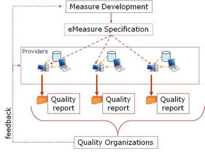
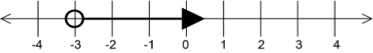
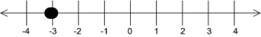
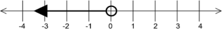

Representation of the Health Quality Measures Format (eMeasure), DSTU Release 2.1
| Responsible Group | Clinical Quality Information Working Group HL7 |
| Co-Chair/Co-Editor | Crystal Kallem, RHIA, CPHQ crystal.kallem@lantanagroup.com Lantana Consulting Group |
| Co-Chair | Patricia Craig pcraig@jointcommission.org The Joint Commission |
| Co-Chair | Floyd Eisenberg FEisenberg@iParsimony.com iParsimony LLC |
| Co-Chair | Chris Millet cmillet@qualityforum.org National Quality Forum |
| Co-Chair | Walter Suarez MD MPH walter.g.suarez@kp.org Kaiser Permanente |
| Co-Editor | Calvin Beebe cbeebe@mayo.edu Mayo Clinic/Foundation |
| Co-Editor | Robert H. Dolin, MD, FACP bobdolin@gmail.com |
| Co-Editor | Keith Boone keith.boone@ge.com GE Healthcare Integrated IT Solutions |
| Co-Editor | Nagesh (Dragon) Bashyam nagesh.bashyam@drajer.com Drajer LLC |
| Co-Editor | Marc Hadley mhadley@mitre.org MITRE Corporation |
| Co-Editor | Rick Geimer rick.geimer@lantanagroup.com Lantana Consulting Group |
| Co-Editor | Kanwarpreet Sethi kp.sethi@lantanagroup.com Lantana Consulting Group |
| Co-Editor/Publishing Facilitator | Dale Nelson dale.nelson@lantanagroup.com Lantana Consulting Group |
| Co-Editor | Jeffrey G. Klann jklann@partners.org Partners Healthcare |
| Co-Editor | Stan Rankins srankins@telligen.org Telligen |
| Co-Editor | Yan Heras, PhD yan.heras@lantanagroup.com Lantana Consulting Group |
| Co-Editor | Emilie Kralicek emilie.kralicek@lantanagroup.com Lantana Consulting Group |
| Co-Editor | Sarah Gaunt sarah.gaunt@lantanagroup.com Lantana Consulting Group |
| Co-Editor | Gaye Dolin, MSN, RN gaye.dolin@lantanagroup.com Lantana Consulting Group |
| Co-Editor | Eric Parapini eric.parapini@lantanagroup.com Lantana Consulting Group |
| Co-Editor | Ashey Swain ashley.swain@lantanagroup.com Lantana Consulting Group |
| Co-Editor | Russ Hamm russ.hamm@lantanagroup.com Lantana Consulting Group |
| Vocabulary Facilitator | Rob Hausam, MD rrhausam@gmail.com Hausam Consulting |
| Technical-Editor | Diana Wright diana.wright@lantanagroup.com Lantana Consulting Group |
HTML Generated: 2014-05-06T07:56:34
Content Last Edited: 2013-11-14T23:00:00
HL7® Version 3 Standard, © Health Level Seven® International All Rights Reserved.
HL7 and Health Level Seven are registered trademarks of Health Level Seven International. Reg. U.S. Pat & TM Off.
Use of these materials is governed by HL7 International's IP Compliance Policy.
Table of Contents
Preface
i Notes to Readers
ii Acknowledgements
1 HQMF Overview
1.1 What is the HQMF, and what is an eMeasure?
1.2 Guidance for Measure Developers
1.3 HQMF for Quality and Public Health
1.3.1 HQMF and Quality Improvement
1.3.2 HQMF and Public Health Cohort Measure Definitions for Reporting
1.4 Backward Compatibility
2 General HQMF Concepts
2.1 Measure Period
2.2 Data Criteria
2.2.1 Filters and Data Criteria
2.2.2 Time Relationships and Data Criteria
2.2.3 Value Sets and Data Criteria
2.2.4 Processing Order and Data Criteria
2.2.5 Result Evaluation and Caching
2.2.6 Risk Adjustment Variables
2.3 Population Criteria Section
2.3.1 Population Criteria and Measure Scores
2.3.1.1 Proportion Measure Score
2.3.1.2 Continuous Variable Measure Score
2.3.1.3 Ratio Measure Score
2.3.1.4 Cohort Measure Score
2.3.2 Population Criteria and Data Criteria
2.3.3 Population Criteria and Items Counted
2.4 Stratifiers
2.5 Occurrencing
2.6 Human Readability and Rendering HQMF Documents
2.7 Encoding eMeasure Quality Statements
2.7.1 General Approach
2.7.2 Patient Criteria vs. Aggregate Scores
2.7.3 Measure Definition vs. Reporting Requirements
2.8 Data Collection, Missing Data and Corrupt or Invalid Data
2.9 Relationship of the HQMF to HL7 Messaging Standards
3 HQMF Technical Artifacts
3.1 HL7 Reference Information Model
3.2 V3 Data Types
3.3 Concept Domains and Value Sets
3.4 HL7 HQMF Model
3.5 HL7 HQMF Constraints
3.6 HL7 HQMF Hierarchical Description
3.7 HL7 HQMF XML Implementation
3.8 HQMF and Templated CDA
4 HQMF Model
4.1 QualityMeasureDocument
4.1.1 QualityMeasureDocument Attribute Definitions
4.1.1.1 QualityMeasureDocument.typeId
4.1.1.2 QualityMeasureDocument.classCode
4.1.1.3 QualityMeasureDocument.moodCode
4.1.1.4 QualityMeasureDocument.id
4.1.1.5 QualityMeasureDocument.code
4.1.1.6 QualityMeasureDocument.title
4.1.1.7 QualityMeasureDocument.text
4.1.1.8 QualityMeasureDocument.statusCode
4.1.1.9 QualityMeasureDocument.effectiveTime
4.1.1.10 QualityMeasureDocument.availabilityTime
4.1.1.11 QualityMeasureDocument.languageCode
4.1.1.12 QualityMeasureDocument.setId
4.1.1.13 QualityMeasureDocument.versionNumber
4.1.2 Participants in a QualityMeasureDocument
4.1.2.1 QualityMeasureDocument.author
4.1.2.2 author.typeCode
4.1.2.3 author.functionCode
4.1.2.4 author.time
4.1.2.5 author.signatureCode
4.1.2.6 author.responsibleParty
4.1.2.7 responsibleParty.classCode
4.1.2.8 responsibleParty.id
4.1.2.9 responsibleParty.code
4.1.2.10 responsibleParty.addr
4.1.2.11 responsibleParty.telecom
4.1.2.12 QualityMeasuredocument.custodian
4.1.2.13 custodian.typeCode
4.1.2.14 custodian.responsibleParty
4.1.2.15 QualityMeasureDocument.participation
4.1.2.16 participation.typeCode
4.1.2.17 participation.functionCode
4.1.2.18 participation.time
4.1.2.19 participation.signatureCode
4.1.2.20 participation.responsibleParty
4.1.2.21 QualityMeasureDocument.verifier
4.1.2.22 verifier.typeCode
4.1.2.23 verifier.functionCode
4.1.2.24 verifier.time
4.1.2.25 verifier.signatureCode
4.1.2.26 verifier.responsibleParty
4.1.3 Relationships in a QualityMeasureDocument
4.1.3.1 QualityMeasureDocument.relatedDocument
4.1.3.2 relatedDocument.typeCode
4.1.3.3 relatedDocument.parentQualityMeasureDocument
4.1.3.4 relatedDocument.expressionDocument
4.1.3.5 relatedDocument.componentQualityMeasureDocument
4.1.3.6 QualityMeasureDocument.componentOf
4.1.3.7 componentOf.typeCode
4.1.3.8 componentOf.qualityMeasureSet
4.1.3.9 QualityMeasureDocument.controlVariable
4.1.3.10 controlVariable.typeCode
4.1.3.11 controlVariable.localVariableName
4.1.3.12 controlVariable.measurePeriod
4.1.3.12.1 MeasurePeriod Attributes
4.1.3.12.1.1 MeasurePeriod.classCode
4.1.3.12.1.2 MeasurePeriod.moodCode
4.1.3.12.1.3 MeasurePeriod.code
4.1.3.12.1.4 MeasurePeriod.value
4.1.3.13 QualityMeasureDocument.subjectOf
4.1.3.14 subjectOf.typeCode
4.1.3.15 subjectOf.measureAttribute
4.1.3.16 QualityMeasureDocument.definition
4.1.3.17 definition.typeCode
4.1.3.18 definition.valueSet
4.1.3.19 QualityMeasureDocument.component
4.1.3.20 component.typeCode
4.1.3.21 component.section
4.1.3.22 component.measureDescriptionSection
4.1.3.23 component.dataCriteriaSection
4.1.3.24 component.populationCriteriaSection
4.1.3.25 component.measureObservationSection
4.2 ParentQualityMeasureDocument
4.2.1 ParentQualityMeasureDocument Attributes
4.2.1.1 ParentQualityMeasureDocument.classCode
4.2.1.2 ParentQualityMeasureDocument.moodCode
4.2.1.3 ParentQualityMeasureDocument.id
4.2.1.4 ParentQualityMeasureDocument.code
4.2.1.5 ParentQualityMeasureDocument.text
4.2.1.6 ParentQualityMeasureDocument.setId
4.2.1.7 ParentQualityMeasureDocument.versionNumber
4.3 ComponentQualityMeasureDocument
4.3.1 ComponentQualityMeasureDocument Attributes
4.3.1.1 ComponentQualityMeasureDocument.classCode
4.3.1.2 ComponentQualityMeasureDocument.moodCode
4.3.1.3 ComponentQualityMeasureDocument.id
4.3.1.4 ComponentQualityMeasureDocument.code
4.3.1.5 ComponentQualityMeasureDocument.text
4.3.1.6 ComponentQualityMeasureDocument.setId
4.3.1.7 ComponentQualityMeasureDocument.versionNumber
4.4 ExpressionDocument
4.4.1 ExpressionDocument Attributes
4.4.1.1 ExpressionDocument.classCode
4.4.1.2 ExpressionDocument.moodCode
4.4.1.3 ExpressionDocument.id
4.4.1.4 ExpressionDocument.code
4.4.1.5 ExpressionDocument.text
4.5 QualityMeasureSet
4.5.1 QualityMeasureSet Attributes
4.5.1.1 QualityMeasureSet.classCode
4.5.1.2 QualityMeasureSet.moodCode
4.5.1.3 QualityMeasureSet.id
4.5.1.4 QualityMeasureSet.title
4.6 MeasureAttribute
4.6.1 MeasureAttribute Attributes
4.6.1.1 MeasureAttribute.classCode
4.6.1.2 MeasureAttribute.moodCode
4.6.1.3 MeasureAttribute.id
4.6.1.4 MeasureAttribute.code
4.6.1.5 MeasureAttribute.value
4.7 ValueSet
4.7.1 Value Set Identification, Versioning, and Stewardship
4.7.2 ValueSet Attributes
4.7.2.1 ValueSet.classCode
4.7.2.2 ValueSet.moodCode
4.7.2.3 ValueSet.id
4.7.2.4 ValueSet.title
4.7.2.5 ValueSet.text
4.7.2.6 ValueSet.value
4.7.3 Relationships in a ValueSet
4.7.3.1 ValueSet.component
4.7.3.2 component.typeCode
4.7.3.3 component.valueSet
4.8 Section
4.8.1 Section Attributes
4.8.1.1 Section.classCode
4.8.1.2 Section.moodCode
4.8.1.3 Section.id
4.8.1.4 Section.code
4.8.1.5 Section.title
4.8.1.6 Section.text
4.8.1.7 Section.languageCode
4.8.2 Section Participants
4.8.2.1 Section.author
4.8.3 Section Relationships
4.8.3.1 Section.component
4.8.3.2 component.typeCode
4.8.3.3 component.section
4.8.4 Section Narrative Block
4.8.4.1 paragraph
4.8.4.2 list
4.8.4.3 table
4.8.4.4 footnote, footNoteRef
4.8.4.5 content
4.8.4.6 styleCode
4.8.4.7 sub and sup
4.8.4.8 br
4.8.4.9 caption
4.8.4.10 linkHTML
4.8.4.11 renderMultiMedia
4.9 MeasureDescriptionSection
4.9.1 MeasureDescriptionSection Attributes
4.9.1.1 MeasureDescriptionSection.code
4.10 DataCriteriaSection
4.10.1 DataCriteriaSection Attributes
4.10.1.1 DataCriteriaSection.code
4.10.2 DataCriteriaSection Relationships
4.10.2.1 DataCriteriaSection.definition
4.10.2.2 definition.typeCode
4.10.2.3 definition.actDefinition
4.10.2.4 DataCriteriaSection.entry
4.10.2.5 entry.typeCode
4.10.2.6 entry.localVariableName
4.10.2.7 entry.actCriteria
4.11 PopulationCriteriaSection
4.11.1 Representing Logical Expressions
4.11.2 Subsetting Criteria
4.11.3 Representing Missing Data as Criteria
4.11.4 PopulationCriteriaSection Attributes
4.11.4.1 PopulationCriteriaSection.code
4.11.5 PopulationCriteriaSection Relationships
4.11.5.1 PopulationCriteriaSection.component
4.11.5.2 component.typeCode
4.11.5.3 component.localVariableName
4.11.5.4 component.initialPopulationCriteria
4.11.5.5 component.numeratorCriteria
4.11.5.6 component.denominatorCriteria
4.11.5.7 component.denominatorExceptionCriteria
4.11.5.8 component.numeratorExclusionCriteria
4.11.5.9 component.denominatorExclusionCriteria
4.11.5.10 component.measurePopulationCriteria
4.11.5.11 component.measurePopulationExclusionCriteria
4.11.5.12 component.stratifierCriteria
4.12 MeasureObservationSection
4.12.1 MeasureObservationSection Attributes
4.12.1.1 MeasureObservationSection.code
4.12.2 MeasureObservationSection Relationships
4.12.2.1 MeasureObservationSection.definition
4.12.2.2 definition.typecode
4.12.2.3 definition.measureObservationDefinition
4.13 Model Definitions
4.13.1 Definition Attributes
4.13.1.1 ActDefinition.classCode
4.13.1.2 ActDefinition.moodCode
4.13.1.3 ActDefinition.id
4.14 Criteria
4.14.1 ActCriteria Attributes
4.14.1.1 ActCriteria.classCode
4.14.1.2 ActCriteria.moodCode
4.14.1.3 ActCriteria.actionNegationInd
4.14.1.4 ActCriteria.id
4.14.1.5 ActCriteria.code
4.14.1.6 ActCriteria.title
4.14.1.7 ActCriteria.text
4.14.1.8 ActCriteria.statusCode
4.14.1.9 ActCriteria.effectiveTime
4.14.1.10 ActCriteria.activityTime
4.14.1.11 ActCriteria.availabilityTime
4.14.1.12 ActCriteria.priorityCode
4.14.1.13 ActCriteria.repeatNumber
4.14.1.14 ActCriteria.reasonCode
4.14.1.15 ActCriteria.languageCode
4.14.1.16 ActCriteria.isCriterionInd
4.14.2 ActCriteria Participants
4.14.2.1 ActCriteria.participation
4.14.2.2 participation.patient
4.14.2.3 participation.role
4.14.3 ActCriteria Relationships
4.14.3.1 ActCriteria.definition
4.14.3.2 definition.typecode
4.14.3.3 definition.criteriaReference
4.14.3.4 ActCriteria.excerpt
4.14.3.5 excerpt.typeCode
4.14.3.6 excerpt.inversionInd
4.14.3.7 excerpt.sequenceNumber
4.14.3.8 excerpt.subsetCode
4.14.3.9 ActCriteria.temporallyRelatedInformation
4.14.3.10 temporallyRelatedInformation.typeCode
4.14.3.11 temporallyRelatedInformation.sequenceNumber
4.14.3.12 temporallyRelatedInformation.pauseQuantity
4.14.3.13 temporallyRelatedInformation.localVariableName
4.14.3.14 temporallyRelatedInformation.subsetCode
4.14.3.15 temporallyRelatedInformation.actCriteria
4.14.3.16 temporallyRelatedInformation.criteriaReference
4.14.3.17 temporallyRelatedInformation Comparison Considerations
4.14.3.17.1 ActCriteria.outboundRelationship
4.15 EncounterCriteria
4.15.1 EncounterCriteria Attributes
4.15.1.1 EncounterCriteria.admissionReferralSourceCode
4.15.1.2 EncounterCriteria.lengthOfStayQuantity
4.15.1.3 dischargeDispositionCode
4.15.1.4 Encounter-related timestamps
4.16 ObservationCriteria
4.16.1 ObservationCriteria Attributes
4.16.1.1 ObservationCriteria.value
4.16.1.2 ObservationCriteria.valueNegationInd
4.16.1.3 ObservationCriteria.interpretationCode
4.16.1.4 ObservationCriteria.methodCode
4.16.1.5 ObservationCriteria.targetSitecode
4.17 ProcedureCriteria
4.17.1 ProcedureCriteria Attributes
4.17.1.1 ProcedureCriteria.methodCode
4.17.1.2 ProcedureCriteria.approachSiteCode
4.17.1.3 ProcedureCriteria.targetSiteCode
4.18 SubstanceAdministrationCriteria
4.18.1 SubstanceAdministrationCriteria Attributes
4.18.1.1 SubstanceAdministrationCriteria.methodCode
4.18.1.2 SubstanceAdministrationCriteria.approachSiteCode
4.18.1.3 SubstanceAdministrationCriteria.targetSiteCode
4.18.1.4 SubstanceAdministrationCriteria.routeCode
4.18.1.5 SubstanceAdministrationCriteria.doseQuantity
4.18.1.6 SubstanceAdministrationCriteria.rateQuantity
4.18.1.7 SubstanceAdministrationCriteria.doseCheckQuantity
4.18.1.8 SubstanceAdministrationCriteria.maxDoseQuantity
4.18.1.9 SubstanceAdministrationCriteria.administrationUnitcode
4.19 SupplyCriteria
4.19.1 SupplyCriteria Attributes
4.19.1.1 SupplyCriteria.quantity
4.19.1.2 SupplyCriteria.expectedUseTime
4.20 GrouperCriteria
4.20.1 GrouperCriteria Attributes
4.20.1.1 GrouperCriteria.classCode
4.20.1.2 GrouperCriteria.moodCode
4.20.1.3 GrouperCriteria.id
4.20.1.4 GrouperCriteria.outboundRelationship
4.21 References
4.21.1 CriteriaReference Attributes
4.21.1.1 CriteriaReference.classCode
4.21.1.2 criteriaReference.moodCode
4.21.1.3 criteriaReference.id
4.22 InitialPopulationCriteria
4.22.1 InitialPopulationCriteria Attributes
4.22.1.1 InitialPopulationCriteria.classCode
4.22.1.2 InitialPopulationCriteria.moodCode
4.22.1.3 InitialPopulationCriteria.id
4.22.1.4 InitialPopulationCriteria.code
4.22.1.5 InitialPopulationCriteria.isCriterionInd
4.22.2 InitialPopulationCriteria Relationships
4.22.2.1 InitialPopulationCriteria.precondition
4.22.2.1.1 precondition.typeCode
4.22.2.1.2 precondition.conjunctionCode
4.22.2.2 precondition.Grouper
4.22.2.3 precondition.criteriaReference
4.22.2.4 InitialPopulationCriteria.component
4.22.2.4.1 component.typeCode
4.23 NumeratorCriteria
4.23.1 NumeratorCriteria Attributes
4.23.1.1 NumeratorCriteria.code
4.24 DenominatorCriteria
4.24.1 DenominatorCriteria Attributes
4.24.1.1 DenominatorCriteria.code
4.25 DenominatorExceptionCriteria
4.25.1 DenominatorExceptionCriteria Attributes
4.25.1.1 DenominatorExceptionCriteria.code
4.25.2 DenominatorExceptionCriteria Relationships
4.25.2.1 DenominatorExceptionCriteria.precondition
4.25.2.2 precondition.conjunctionCode
4.26 StratifierCriteria
4.26.1 Supplemental Data Elements
4.26.2 StratifierCriteria Attributes
4.26.2.1 StratifierCriteria.code
4.26.3 StratifierCriteria Relationships
4.26.3.1 StratifierCriteria.precondition
4.26.3.2 precondition.conjunctionCode
4.27 measurePopulationCriteria
4.27.1 measurePopulationCriteria Attributes
4.27.1.1 measurePopulationCriteria.code
4.28 Logical Groupers
4.28.1 Grouper Attributes
4.28.1.1 Grouper.classCode
4.28.1.2 Grouper.moodCode
4.28.1.3 Grouper.id
4.28.2 Grouper Relationships
4.28.2.1 Grouper.precondition
4.28.2.2 precondition.typeCode
4.28.2.3 precondition.conjunctionCode
4.28.2.4 precondition.negationInd
4.28.2.5 precondition.Grouper
4.28.2.6 precondition.criteriaReference
4.29 measureObservationDefinition
4.29.1 measureObservationDefinition Attributes
4.29.1.1 measureObservationDefinition.classCode
4.29.1.2 measureObservationDefinition.moodCode
4.29.1.3 measureObservationDefinition.id
4.29.1.4 measureObservationDefinition.code
4.29.1.5 measureObservationDefinition.value
4.29.1.6 measureObservationDefinition.methodcode
4.29.1.7 measureObservationDefinition.precondition
4.29.1.7.1 precondition.join
4.29.1.8 measureObservationDefinition.component
4.29.1.8.1 component.criteriaReference
4.30 join
4.30.1 join Attributes
4.30.1.1 join.classCode
4.30.1.2 join.moodCode
4.30.1.3 join.value
4.31 NumeratorExclusionCriteria
4.31.1 NumeratorExclusionCriteria Attributes
4.31.1.1 NumeratorExclusionCriteria.code
4.31.2 NumeratorExclusionCriteria Relationships
4.31.2.1 NumeratorExclusionCriteria.precondition
4.31.2.2 precondition.conjunctionCode
4.32 DenominatorExclusionCriteria
4.32.1 DenominatorExclusionCriteria Attributes
4.32.1.1 DenominatorExclusionCriteria.code
4.32.2 DenominatorExclusionCriteria Relationships
4.32.2.1 DenominatorExclusionCriteria.precondition
4.32.2.2 precondition.conjunctionCode
4.33 MeasurePopulationExclusionCriteria
4.33.1 MeasurePopulationExclusionCriteria Attributes
4.33.1.1 MeasurePopulationExclusionCriteria.code
4.33.2 MeasurePopulationExclusionCriteria Relationships
4.33.2.1 MeasurePopulationExclusionCriteria.precondition
4.33.2.2 precondition.conjunctionCode
5 Definitions
5.1 General Definitions
5.2 Measure Parameter Definitions
5.3 Reporting Parameter Definitions
5.4 Quality Measure Scoring
5.5 Quality Measure Types
5.6 General Timing Constraints
6 Examples
6.1 eMeasure Example Files
6.2 Sample HQMF Rendering Style Sheet
7 HQMF Schema
8 Acronyms and Abbreviations
9 Appendix A - Change Log
9.1 HQMF R2 Changes
9.2 HQMF R2.1 Changes
10 Appendix B - Related Works
11 Appendix C - Expression Languages
A Annex: Glosssary Content for: Representation of the Health Quality Measures Format (eMeasure), DSTU Release 2.1
Publication of this draft standard for trial use and comment has been approved by Health Level Seven International (HL7). This draft standard is not an accredited American National Standard. The comment period for use of this draft standard shall end 24 months from the date of publication. Suggestions for revision should be submitted at http://www.hl7.org/dstucomments/index.cfm. Following this 24-month evaluation period, this draft standard, revised as necessary, will be submitted to a normative ballot in preparation for approval by ANSI as an American National Standard. Implementations of this draft standard shall be viable throughout the normative ballot process and for up to six months after publication of the relevant normative standard.
The HL7 project to create electronic quality measure standards was originally supported by volunteer efforts and through the National Quality Forum's (NQF, www.qualityforum.org) contract with the U.S. Department of Health and Human Services to promote the effective use of Electronic Health Record (EHR) systems. The Collaborative for Performance Measure Integration with EHR Systems --co-sponsored by the American Medical Association (AMA), the National Committee for Quality Assurance (NCQA), and the Electronic Heath Record Association (EHRA)--developed a Health Quality Measure Format (HQMF) reference guide and a prototype to address performance measure functionality and integration with EHR systems. The HQMF prototype defined a standard for expressing performance measures while preserving the clinical intent of the measure itself. In Spring 2009, NQF sponsored efforts to align the prototype HQMF and with HL7 constructs, resulting in the publication of the HL7 Version 3 Standard, "Representation of the Health Quality Measures Format (eMeasure), Release 1".
Release 2 (R2) and 2.1 (R2.1) updates were sponsored by the Office of Clinical Standards and Quality of the Centers for Medicare and Medicaid Services (CMS) in partnership with HL7 and the Office of the National Coordinator (ONC). The project is carried out within the framework of ONC's Standards and Interoperability (S&I) Framework Query Health Technical Workgroup.
The committee is indebted to the following past co-chairs, facilitators, and primary contributors for their contributions towards the HQMF and the material presented here.
| Name | Role | Organization |
|---|---|---|
| Austin Kreisler | SD WG Co-Chair | SAIC Consultant to CDC |
| Brett Marquard | SD WG Co-Chair | River Rock Associates LLC |
| Diana Behling | SD WG Co-Chair | Iatric Systems |
| Patrick Loyd | SD WG Co-Chair | ICode Solutions |
| Rute Martins | Contributor | The Joint Commission |
| Douglas S. Bell, MD, PhD | Contributor | David Geffen School of Medicine at UCLA |
| Chad Bennett | Contributor | Telligen |
| Chengjian Che, MD | Contributor | Lantana Consulting Group |
| Kevin Coonan | Contributor | Deloitte |
| Aaron Cutshall | Contributor | Encore Health Resources |
| Lori Fourquet | Contributor | eHealth Sign |
| Paul Fu | Contributor | Illumisys |
| William Goossen | Contributor | Results 4 Care |
| Kendra Hanley | Contributor | American Medical Association |
| Delane Heldt | Contributor | American Medical Association |
| Robert A. Jenders, MD, MS, FACP, FACMI | CDS WG Co-chair/Contributor | Department of Medicine, University of California, Los Angeles |
| Joy Kuhl | Contributor | Lantana Consulting Group |
| Thom Kuhn | Contributor | American College of Physicians |
| Jingdong (JD) Li, MD | Contributor | Lantana Consulting Group |
| Cecil Lynch | Contributor | Accenture |
| Susan Matney | Contributor | 3M Health Care |
| Lloyd McKenzie | Contributor | LM&A Consulting/HL7 Canada |
| Greg Pawlson | Contributor | Blue Cross Blue Shield Association |
| Phil Renner | Contributor | Kaiser Permanente |
| Dan Russler | Contributor | Oracle Corporation |
| Gunther Schadow, MD | Contributor | Regenstrief Institute, Inc. |
| Harry Solomon | Contributor | GE Healthcare |
| Andrew Stechishin | Prior Publishing Facilitator | CANA Software & Services Ltd. |
| David Stumpf | Contributor | Woodstock Health Information and Technology |
| Julie Thompson | Contributor | Nationwide IT Services, Inc. |
| Jim Unander | Contributor | American Medical Association |
The co-editors also express their appreciation for the support and sponsorship of the HL7 Structured Documents Work Group. We acknowledge the work on HL7 Version 3 and the Reference Information Model (RIM), and the contributions from HL7 domain committees, especially the Clinical Quality Information, Clinical Decision Support, Patient Care, and Modeling and Methodology Work Groups.
Finally, we acknowledge the foundational work on the HQMF by the Collaborative for Performance Measure Integration with EHR Systems and RAND Corporation's work on a Performance Measure Reporting Language (PMRL) for representing performance measures in a computer-interpretable and sharable format.
This material contains content from SNOMED CT® (http://www.ihtsdo.org/snomed-ct/). SNOMED CT is a registered trademark of the International Health Terminology Standard Development Organisation (IHTSDO).
This material contains content from LOINC® (http://loinc.org). The LOINC table, LOINC codes, and LOINC panels and forms file are copyright © 1995-2013, Regenstrief Institute, Inc. and the Logical Observation Identifiers Names and Codes (LOINC) Committee. All are available at no cost under the license at http://loinc.org/terms-of-use.
If you cannot measure it, you cannot improve it.
-- Lord Kelvin
(1824-1907)
The Health Quality Measures Format (HQMF) is a standard for representing a health quality measure as an electronic document. A quality measure is a quantitative tool to assess the performance of an individual or organization's performance in relation to a specified process or outcome via the measurement of an action, process, or outcome of clinical care. Quality measures are often derived from clinical guidelines and are designed to determine whether the appropriate care has been provided given a set of clinical criteria and an evidence base. Quality measures are also often referred to as performance measures or quality indicators. Public health programs engage in quality measurement in the context of monitoring and improving the health of the jurisdiction population. Specific measures and other analytics are performed within surveillance programs and are subject to correlation with dynamic environmental factors, social conditions, and other epidemiologic criteria that are not suited to static measure definition. In support of these quality measurement activities, cohort measures specify a population of interest to a given surveillance program. Such cohort measures are intended to assess and report records of interest to the surveillance program.
Through standardization of a measure's structure, metadata, definitions, and logic, the HQMF provides measure consistency and unambiguous interpretation. A health measure encoded in the HQMF is referred to as an "eMeasure".
Standardization of document structure (e.g., sections), metadata (e.g., author, verifier), and definitions (e.g., numerator, initial population) enables a wide range of measures, currently existing in a variety of formats, to achieve at least a minimal level of consistency and readability, even if not fully machine processable.
Formal representation of the clinical, financial, and administrative concepts and logic within an eMeasure supports unambiguous interpretation and consistent reporting. Examples of statements that can be formally represented by the HQMF are:
To be included in a measure's Denominator, a patient will have had at least two face-to-face visits; AND will have a confirmed diagnosis of coronary artery disease (based on diagnostic or procedure criteria).
To be included in a measure's Initial Population, a patient will have had a principal inpatient discharge diagnosis of stroke; AND a hospital length of stay less than or equal to 120 days.
To be included in a public health reportable population, a patient will have a confirmed diagnosis of Tuberculosis within a given reporting period; AND residence within a jurisdiction that requires reporting of Tuberculosis.
HQMF, like the HL7 Clinical Document Architecture (CDA) standard, is derived from an overarching structured document architecture. HQMF is not a CDA standard, but rather, has a peer-to-peer relationship with CDA. In order to report the results of an HQMF computation, systems typically will use the HL7 CDA R2 Quality Reporting Document Architecture (QRDA) standard.
Creating eMeasures in HQMF requires measure developers to adopt a programmer's mind-set. Constructing or creating eMeasures in HQMF is similar to constructing an SQL query. HQMF is a declarative programming language. As with any such language, it is possible to create code that is syntactically correct but logically incorrect. The result is unanticipated bugs or side effects. Therefore, while creating eMeasures, measure developers must consider that each eMeasure will be processed by an HQMF Release 2 (R2) processing engine. A processing engine is a program that parses an HQMF file, executes the logic against a data store, and computes results (i.e., 7 patients in the Denominator, 3 in the Numerator). As HQMF processing engines become more available, measure developers will need to adopt many of the practices common to software development such as integrating testing with the development process. Measure developers can refer to HQMF processing engines that currently exist (e.g., US ONC Query Health Initiative, MITRE Cypress project) to better understand HQMF processing complexities.
HQMF is one component of a larger quality measure framework, as shown in the following figure.
Figure 1: Quality measure framework
Measure developers, drawing on available evidence, devise measureable parameters to gauge the quality of care in a subject area. These parameters are assembled into quality measures, which are then expressed as eMeasures in HQMF. A set of eMeasures may be used to guide care decisions as well as data collection for Electronic Health Record (EHR) and other systems. The data are then assembled into quality reports (e.g., QRDA documents) and submitted to quality reporting or other organizations.
HQMF is part of a larger public health reporting framework, as shown in the following figure.
Figure 2: Public health eMeasure framework
Public health epidemiologists, often drawing upon available evidence, devise requirements for reporting from providers and laboratories to monitor community health. These reporting requirements are mapped to standard vocabularies and structures available to EHR systems, laboratory systems, and information exchanges, which are then expressible as a Cohort measure definition in HQMF (called an eMeasure). This eMeasure may be understood by providers to guide reportable actions for care, and to guide collection of Electronic Health Record (EHR), laboratory, and other source reporting data. These data are assembled into public health reports (e.g., HAI CDA Report, HL7 CDA for public health reports) and submitted to public health authorities.
Unambiguous expression of concepts and logic within an eMeasure is a necessary step towards the larger objective of enabling a direct query against an EHR or other operational data store. While HQMF is not an EHR query language, through the provision of unambiguous and formal definitions, it is an EHR query enabler. Additionally, an unambiguous representation of the clinical concepts in an eMeasure allows EHR vendors and healthcare providers to be proactive in capturing such information at the point of care. If, for example, a quality measure reports on the provision of educational material to stroke patients, the corresponding eMeasure will make it clear exactly what type of educational material would be considered appropriate care. If the eMeasure calls for the collection of a certain data element not normally captured by the EHR, the EHR might now prompt the user to collect this information, thereby enhancing both the quality of data reporting and the quality of care. These data might similarly be captured through invoking a public health reporting form that is pre-populated from the EHR data allowing for the user to enter the remaining data attributes.
This HQMF Release 2.1 (R2.1) draft standard for trial use (DSTU) uses the HL7 R2 data types and user-friendly "business names". This prevents HQMF R2.1 from being compatible with HQMF Release 1. Backward and forward compatibility can be handled via transforms. Prototype transforms have already been developed and tested with significant success, but complex HQMF R1 measures will require manual work for a successful migration to HQMF R2.1.
For a complete set of changes between versions of HQMF, please see Appendix A - Change Log).
This chapter serves as a high-level introduction to the concepts used within an eMeasure document, all of which are described in greater detail in later chapters. For the purposes of public health reporting, the case reporting requirements will be expressed as Cohort measures.
HQMF concepts of measure period, Data and Population Criteria, stratifiers, and other measure attributes are bundled together in a structure shown in the diagram below.
Figure 3: Typical HQMF document structure
An eMeasure document is wrapped by the <QualityMeasureDocument> element, and contains a header and a body (see QualityMeasureDocument). The header identifies and classifies the document and provides important metadata about the measure.
The body contains sections (<populationCriteriaSection> <dataCriteriaSection>, etc.), each wrapped by the <component> element. Each section can contain a single HQMF narrative block (see the Section Narrative Block), and any number of HQMF entries. An eMeasure conformant to the specification may contain pre-defined components, such as the Population Criteria Section (see Document constraints). Each pre-defined component may suggest or require various entries (see Section Constraints), and HQMF entries within these components are constrained to better ensure consistency across eMeasures (see Entry Constraints). Additional components and entries, above and beyond those required for HQMF conformance, can be included as needed.
The HQMF narrative block must contain the human readable content to be rendered. Within a component, the narrative block represents content to be rendered whereas HQMF entries represent structured content provided for further computer processing.
A minimally conformant eMeasure will contain elements from the document header, but need not include computable Data Criteria. In this case, the full narrative of the eMeasure, in any electronic format, is placed into or referenced by QualityMeasureDocument.text. From there, one can represent the full narrative of a quality measure within the narrative blocks of HQMF defined components. Full encoding further enhances the narrative of the quality measure with the addition of entries.
The following truncated XML snippet shows the high level XML structure of an HQMF Document.
<!-- Start of an HQMF R2 eMeasure. An eMeasure is surrounded by the QualityMeasureDocument element. -->
<QualityMeasureDocument>
<!-- Header attributes including Title, Narrative, Author, Custodian etc. -->
<templateId />
<title />
<text />
<author />
<custodian />
<verifier />
<!-- defining the time period that this eMeasure applies to -->
<controlVariable>
<measurePeriod />
</controlVariable>
<!-- Miscellaneous metadata for an eMeasure -->
<subjectOf>
<measureAttribute />
</subjectOf>
<!-- Sections -->
<!-- Measure Description Section -->
<component>
<measureDescriptionSection />
</component>
<!-- Data Criteria Section, containing actCriteria, etc. -->
<component>
<dataCriteriaSection />
</component>
<!-- Population Criteria Section containing an Initial Population,
numeratorCriteria, denominatorCriteria exclusions, exceptions,
stratifier Criteria etc. -->
<component>
<populationCriteriaSection />
</component>
<!-- Measure Observation Section containing expression language expressions
for evaluation using Data Criteria-->
<component>
<measureObservationsSection />
</component>
</QualityMeasureDocument>
<!-- end of eMeasure -->
Every quality measure has a Measure Period. The Measure Period designates the reference time frame for which data are identified, filtered and analyzed. Measure Period can be expressed as both fixed times (start and end date) and relative times (start date and a period of reporting frequency). The exact usage of Measure Period depends on the measure and its purpose. Data that are collected before or after the Measure Period can also be identified with a time relationship, explained in the next part of this document.
A "criterion" is something that can be evaluated to be TRUE or FALSE for a given item. It lays out a pattern to be matched by an object in an EHR.
The Data Criteria of a measure identify the various conditions that determine if a data item is included in the measure population or not (based upon clinical or public health interests).
For example:
- "Patient is between the ages of 20 - 30 years"
- "Patient had a hbA1C test as part of last visit"
- "Patient's last LDL cholesterol is < 100"
- "Patient has Diabetes type II"
Data Criteria can be defined against the following types of clinical data elements (this list is not exhaustive):
- Patient Demographics
- Encounters
- Medications
- Lab Results
- Vital Signs
- Problems
- Procedures
- Allergies
- Immunizations
HQMF assumes that Data Criteria are evaluated in stages. For example a Data Criterion element (encounter) might include a constraint that a patient had an encounter within the measure period. When this Data Criterion element is evaluated, first a list of all encounters is retrieved. Then, those encounters not within the measure period are removed. If the resulting list of encounters is empty, then the criterion is not satisfied. If the list contains at least one encounter, then the criterion is satisfied. This document refers to that refinement process as "filtering" and the refinements applied to a data criterion during evaluation as "filters". The filters that can be applied to a Data Criterion element include temporally related information, outbound relationship, and excerpt.
For example:
- Patient has an HbA1C value > 9% in the "LAST" lab test.
- The patient was diagnosed with Diabetes Type II, and the "FIRST" encounter where the patient was diagnosed was within the measure period.
- Patient's "LAST" vaccination was within 3 months of the "FIRST" vaccination.
In the above examples, "LAST" and "FIRST" are examples of filters (using excerpt) that can be applied to initial Data Criteria to refine and extract the population of interest.
Data Criteria can be related to other Data Criteria or Measure Period via time relationships. The following examples show how an encounter can have a temporal relationship with other Data Criteria or a Measure Period.
- Patient had a lab test that occurred one year before the most recent encounter.
- Patient has encounters during the Measure Period where a particular medication was requested.
- Patient had a diagnosis of disease X within N years of immunization for disease X.
Quality measures often need to select patients based on enumerated features of demographics, encounters, medications or other criteria that span a range of coded values. These ranges of coded values are represented as value sets and are used to filter populations.
A value set represents a uniquely identifiable set of valid concept identifiers, where any concept identifier in a coded element can be tested to determine whether it is a member of the value set at a specific point in time. A concept identifier in a value set may be a single concept code or a post-coordinated expression of a combination of codes. A value set has a unique identifier that is assigned by the owner of the value set. These identifiers are referenced within the Data Criteria and included within the eMeasure. The exact representation will be described later in this document.
An example of a value set is a list of codes for Diabetes Type II. The list could have a name that conveys what is in the list of codes (e.g., Diabetes Type II). The value set is identified by an OID (e.g., 2.16.840.1.113883.3.464.1.37) and belong to a particular entity such as the National Quality Forum (NQF), which maintains oversight of the value set and makes any updates to it as needed.
A value set from public health, for example, is Immunization Service Funding Eligibility, identified by 2.16.840.1.114222.4.5.301. It includes national classifications Immunization Service Funding Eligibility assigned to the patient for the purpose of identifying sources of reimbursement. As with many public health domain value sets, this is maintained by the PHIN-VADS Value Set Repository (https://phinvads.cdc.gov/). This value set may be further constrained or extended by state or regional jurisdictions (assigned a separate identifier) where additional classifications may also be supported.
Note that according to NQF's Quality Data Model (QDM), a value set is constrained to a single code system. The exception to this rule is grouping value sets. Through grouping value sets, multiple value sets of the same or different code systems can be combined into one value set.
Data Criteria can include a set of filters on the events identified. The order in which those filters are processed determines the end result for any specific criterion. All Data Criteria processing is performed in document order, and the processing is not complete until all of the Data Criteria children are processed. The concepts are explained below using a few examples.
Consider the XML example below which specifies an ObservationCritiera which, when processed, will extract the last hbA1C greater than 9% among all the observations where hbA1C was measured.
The processing of Data Criteria when executed in document order is as follows:
- Identify and extract the result observations where hbA1C are measured. This is performed using the value set of the code element. Let us call this the set of "hbA1C observations".
- Identify and extract from the set of "hbA1C observations" the ones where the value is greater than 9%. This is done when the value element is processed. Let us call this the set of "hbA1C observations greater than 9%".
- Identify and extract the last observation from the set of "hbA1C observations greater than 9%". This is done when the excerpt element is processed which identifies the observation to be extracted.
<entry typeCode="DRIV">
<localVariableName value="LastHbA1Cgt9"/>
<observationCriteria classCode="OBS" moodCode="EVN">
<id root="2.16.840.1.113883.19" extension="LastHbA1Cgt9"/>
<code valueSet="2.16.840.1.113883.3.464.1.72"/>
<value xsi:type="IVL_PQ" lowClosed="false">
<low value="9" unit="%"/>
<high nullFlavor="PINF"/>
</value>
<excerpt>
<subsetCode code="LAST"/>
<observationCriteria classCode="OBS" moodCode="EVN">
<id root="2.16.840.1.113883.19" extension="LastHbA1Cgt9"/>
<observationCriteria/>
</excerpt>
</observationCriteria>
</entry>
The next example shows how to check if the "last hbA1c measured was greater than 9%". This is different than the previous example, which extracted the last one from the set of "hbA1c results greater than 9%".
There are 3 different criteria elements required to perform this operation.
- The first criterion identifies and extracts the last hbA1c observation regardless of the value of the observation.
- The second criterion checks if an observation value is greater than 9%, regardless of whether the observation is the first one or last one or one in between.
- The third criterion is a grouper criterion which is used to intersect the first and the second criteria, the intersect operation will only extract the observation if it is the last one and it is greater than 9%.
<!-- Get last A1C (Criteria A) -->
<entry typeCode="DRIV">
<localVariableName value="LastHbA1C"/>
<observationCriteria classCode="OBS" moodCode="EVN">
<id root="2.16.840.1.113883.19" extension="LastHbA1C"/>
<code valueSet="2.16.840.1.113883.3.464.1.72"/>
<definition>
<criteriaReference classCode="OBS" moodCode="EVN">
<id root="2.16.840.1.113883.19" extension="Results"/>
</criteriaReference>
</definition>
<excerpt>
<subsetCode code="LAST"/>
<observationCriteria classCode="OBS" moodCode="EVN">
<id root="2.16.840.1.113883.19" extension="LastHbA1C"/>
<observationCriteria/>
</excerpt>
</observationCriteria>
</entry>
<!-- Criteria to check for a1c greater than 9% (Criteria B) -->
<entry typeCode="DRIV">
<localVariableName value="HbA1Cgt9"/>
<observationCriteria moodCode="EVN">
<id root="2.16.840.1.113883.19" extension="HbA1Cgt9"/>
<value xsi:type="IVL_PQ">
<low value="9" unit="%"/>
</value>
<definition>
<criteriaReference classCode="OBS" moodCode="EVN">
<id root="2.16.840.1.113883.19" extension="Results"/>
</criteriaReference>
</definition>
</observationCriteria>
</entry>
<!-- Create another Grouper criteria which is an intersect of A and B, meaning that we are intersecting -->
<entry typeCode="DRIV">
<grouperCriteria classCode="GROUPER" moodCode="EVN">
<id root="2.16.840.1.113883.19" extension="IsLastA1Cgt9"/>
<outboundRelationship typeCode="COMP">
<conjunctionCode code="AND"/>
<criteriaReference classCode="OBS" moodCode="EVN">
<id root="2.16.840.1.113883.19" extension="LastHbA1C"/>
</criteriaReference>
</outboundRelationship>
<outboundRelationship typeCode="COMP">
<conjunctionCode code="AND"/>
<criteriaReference classCode="OBS" moodCode="EVN">
<id root="2.16.840.1.113883.19" extension="HbA1Cgt9"/>
</criteriaReference>
</outboundRelationship>
</grouperCriteria>
</entry>
The HQMF standard allows Data Criteria to be referenced using the Data Criteria ID. This allows measure developers to create a Data Criteria definition once and reuse it multiple times throughout the measure document using the ID. Results compiled from evaluation of the original Data Criteria can be cached. The cached results can be reused, without reevaluation, whenever the Data Criteria ID is referenced. However, HQMF R2 does not mandate result caching (i.e., Data Criteria referenced via an ID can be reevaluated each time) and leaves this detail up to specific implementations of the standard.
In developing outcome measures, one challenge that measure developers often have is accounting for factors outside of provider or hospital control. These are features such as patient characteristics (age, health, etc.) or other risk factors. Because of variations in these risk factors, patients may experience variations in outcomes of care. Such variations in outcomes might not reflect the actual quality of care provided by the health care organization. Adjusting an outcome measure for these factors, a process called Risk Adjustment which produces a risk adjusted outcome measure, allows accurate comparison of outcomes across organizations.
Risk adjusted outcome measures identify risk factors as risk variables. Risk variables are plugged into a risk model to calculate the risk adjustment. In HQMF, risk variables are expressed in data criteria that extract the information needed for the risk model.
For example, a measure that calculates the risk-standardized mortality rate will identify risk variables such as patient age, first measurement of systolic blood pressure, first troponin level, and first creatinine level. Data criteria for the troponin and patient age risk variables are shown below:
<entry typeCode="DRIV">
<localVariableName value="Troponin"/>
<observationCriteria moodCode="EVN" classCode="OBS">
<id root="2.16.840.1.113883.3.100.1" extension="LaboratoryTestResultFirstTroponinLevelGroup"/>
<code xsi:type="CD" valueSet="2.16.840.1.113883.3.666.5.2361">
<displayName value="First Troponin Level Group"/>
</code>
<text value="Laboratory Test, Result: First Troponin Level Group"/>
<excerpt typeCode="XCRPT">
<subsetCode code="FIRST"/>
<observationCriteria classCode="OBS" moodCode="EVN">
<id root="2.16.840.1.113883.3.100.1" extension="LaboratoryTestResultFirstTroponinLevelGroup"/>
</observationCriteria>
</excerpt>
</observationCriteria>
</entry>
<entry typeCode="DRIV">
<localVariableName value="PatientAge"/>
<observationCriteria moodCode="EVN" classCode="OBS">
<id root="2.16.840.1.113883.3.100.1" extension="PatientCharacteristicPatientAge"/>
<code xsi:type="CD" valueSet="2.16.840.1.113883.3.190.5.47">
<displayName value="Patient Age"/>
</code>
<text value="Patient Characteristic: Patient Age"/>
</observationCriteria>
</entry>
The Population Criteria Section identifies a population using one or more Data Criteria elements. Populations can be of multiple types and are used in different ways by a variety of measure types. Each measure has a measure score that determines what population types may be used. Each population type has a normative definition stated within this HQMF standard (see Definitions).
| Measure Score | Initial Population | Denominator | Denominator Exclusion | Denominator Exception | Numerator | Numerator Exclusion | Measure Population | Measure Population Exclusion |
|---|---|---|---|---|---|---|---|---|
| Proportion | R | R | O | O | R | O | NP | NP |
| Ratio | R* | R | O | NP | R | O | NP | NP |
| Continuous Variable | R | NP | NP | NP | NP | NP | R | O |
| Cohort | R | NP | NP | NP | NP | NP | NP | NP |
The population types for a Proportion measure are "Initial Population", "Denominator", "Denominator Exclusion", "Numerator", "Numerator Exclusion" and "Denominator Exception". The following diagram shows the relationships between the populations for proportion measures and the table below provides their definitions.
Figure 4: Population criteria for Proportion measures illustration
| Population | Definition |
|---|---|
| Initial Population (IPOP) | All entities to be evaluated by an eMeasure which may but are not required to share a common set of specified characteristics within a named measurement set to which the eMeasure belongs. |
| Denominator (DENOM) | The same as the Initial Population or a subset of the Initial Population to further constrain the population for the purpose of the eMeasure. |
| Denominator Exclusion (DENEX) | Entities to be removed from the Initial Population and Denominator before determining if Numerator criteria are met. Denominator Exclusions are used in Proportion and Ratio measures to help narrow the Denominator. |
| Numerator (NUMER) | The processes or outcomes for each entity defined in the Denominator of a Proportion or Ratio measure. |
| Numerator Exclusion (NUMEX) | Entities that should be removed from the eMeasure's Numerator. Numerator exclusions are used in Proportion and Ratio measures to help narrow the Numerator (for inverted measures). |
| Denominator Exception (DENEXCEP) | Those conditions that should remove a patient, procedure, or unit of measurement from the Denominator only if the Numerator criteria are not met. Denominator exceptions allow for adjustment of the calculated score for those providers with higher risk populations. |
Here is an example of using population types to select data on diabetes patients for a Proportion measure:
- Initial Population (IPOP): Patient is between the age of 16 and 74
- Denominator (DENOM): Patient has Diabetes Type II
- Numerator (NUMER): Patient is between the age of 16 and 74, has Diabetes Type II, and the most recent lab result has hbA1C value > 9%
- Denominator Exception (DENEXCEP): Patient meets the DENOM criteria and does NOT meet the NUMER criteria, and is designated as having "Steroid Induced Diabetes" or "Gestational Diabetes"
The population types for a Continuous Variable measure are "Initial Population", "Measure Population", and "Measure Population Exclusion". In addition to these populations, a Measure Observation is defined which contains one or more Continuous Variable statements that are used to score one or more particular aspects of performance. The following diagram shows the relationships between the populations for Continuous Variable measures and the table below provides their definitions.
Figure 5: Population criteria for Continuous Variable measures illustration
| Population | Definition |
|---|---|
| Initial Population (IPOP) | All entities to be evaluated by an eMeasure which may but are not required to share a common set of specified characteristics within a named measurement set to which the eMeasure belongs. |
| Measure Population (MSRPOPL) | Continuous Variable measures do not have a Denominator, but instead define a Measure Population, as shown in the figure above. Rather than reporting a Numerator and Denominator, a Continuous Variable measure defines variables that are computed across the Measure Population (e.g., average wait time in the emergency department). A Measure Population may be the same as the Initial Population or a subset of the Initial Population to further constrain the population for the purpose of the eMeasure. |
| Measure Population Exclusions (MSRPOPLEX) | Patients who should be removed from the eMeasure's Initial Population and Measure Population before determining the outcome of one or more continuous variables defined within a Measure Observation. Measure Population Exclusions are used in Continuous Variable measures to help narrow the Measure Population. |
Here is an example of using the population types to select data on emergency department patients for a Continuous Variable measure:
- Initial Population (IPOP): Patient had an emergency department (ED) encounter
- Measure Population (MSRPOPL): Same as Initial Population
- Measure Population Exclusion (MSRPOPLEX): Patient had an inpatient encounter that was within 6 hours of the ED encounter or expired in the ED
The population types for a Ratio measure are "Initial Population", "Denominator", "Denominator Exclusion", "Numerator" and "Numerator Exclusion". The following diagram shows the relationships between the populations for Ratio measures and the table below provides their definitions.
Figure 6: Population criteria for Ratio measures illustration
| Population | Definition |
|---|---|
| Initial Population (IPOP) | All entities to be evaluated by an eMeasure which may but are not required to share a common set of specified characteristics within a named measurement set to which the eMeasure belongs. Ratio measures are allowed to have two Initial Populations, one for Numerator and one for Denominator. In most cases, there is only 1 Initial Population |
| Denominator (DENOM) | The same as the Initial Population or a subset of the Initial Population to further constrain the population for the purpose of the eMeasure. |
| Denominator Exclusion (DENEX) | Entities that should be removed from the Initial Population and Denominator before determining if Numerator criteria are met. Denominator exclusions are used in Proportion and Ratio measures to help narrow the Denominator. |
| Numerator (NUMER) | The outcomes expected for each entity defined in the Denominator of a Proportion or Ratio measure. |
| Numerator Exclusion (NUMEX) | Entities that should be removed from the eMeasure's Numerator before determining if Numerator criteria are met. Numerator exclusions are used in Proportion and Ratio measures to help narrow the Numerator. |
Here is an example of using the population types to select data on patients with central line catheters for a ratio measure:
- Initial Population (IPOP): Patient is aged 65 years or older and admitted to hospital
- Denominator (DENOM): Patient has a central line
- Denominator Exclusion (DENEX): Patient is immunosuppressed
- Numerator (NUMER): Patient has a central line blood stream infection
- Numerator Exclusion (NUMEX): Patient's central line blood stream infection is deemed to be a contaminant
In a cohort measure, a population is identified from the population of all items being counted. For example, one might identify all the patients who have had H1N1 symptoms. The identified population is very similar to the Initial Population but is called a Cohort Population for public health purposes. In the Constrained Information Model (CIM), the population will be expressed using the InitialPopulationCriteria act. The Cohort Population result is used by public health agencies to trigger specific public health activities. The following diagram depicts the population for a Cohort measure and the table below provides its definition.
Figure 7: Population criteria for Cohort measures illustration
| Population | Definition |
|---|---|
| Initial Population (IPOP) | All entities to be evaluated by an eMeasure which may but are not required to share a common set of specified characteristics within a named measurement set to which the eMeasure belongs. (Also known as a Cohort Population) |
Here is an example of using the population types to select data on patients who have received immunizations for a Cohort measure:
- Initial Population (IPOP): All patients who had an immunization
Population Criteria are constructed using Data Criteria to appropriately identify the right population. In order to use multiple Data Criteria to filter out populations, the Data Criteria are combined logically using "AND/OR/XOR" operators. These operators appear in the form of:
- "AllTrue" and "AllFalse", representing AND and NOR operators respectively
- "AtLeastOneTrue" and "AtLeastOneFalse" representing OR and NAND operators respectively
- "OnlyOneTrue" and "OnlyOneFalse" representing XOR operator
For example, to identify an Initial Population consisting of male patients between the ages of 16-74, we would construct two Data Criteria elements and combine them as follows:
- Data Criteria Element 1: "Patient is between the ages of 16-74"
- Data Criteria Element 2: "Patient is male"
- Combine the above two criteria using the "AllTrue" operator (which is a logical AND) to extract the Initial Population desired.
Most eMeasures need the ability to designate what a population is counting. For example, a single measure may need to look at how many patients met a particular criterion, the number of beds available for those patients, and the number of staff treating those patients. To express this, Items Counted (ITMCNT) is provided as a Measure Attribute so that a population can make explicit what is being counted.
Items Counted can be specified at the document level or at the specific population level using the measureAttribute act class.
Stratifiers are constructed using Data Criteria and used to specify how the results need to be grouped.
For example:
- Identify all patients between the ages of 16 and 74 and stratify the counts by gender.
In the above example, the stratification criteria refer to gender and age Data Criteria elements to group the counts of patients between 16 and 74.
Tying criteria acts to specific occurrences of events, such as encounters, is an important part of quality measures. HQMF R2 provides a criteriaReference element to allow creation of relationships between criteria acts. However, a criteria reference ID refers to the entire group of acts returned by a criteria entry, and not an individual act within it. This creates a subtle logical problem when checking if certain criteria were satisfied as part of a singular event. To ensure criteria are correctly checked as part of a single event, measure authors must reference a single event criteria in the population section. This can be done using one of the following approaches (assume occurrence of encounter):
- Ensure all criteria for a particular encounter,including diagnosis, patient age, etc., are included as part of the same encounterCriteria using multiple outbound relationships or temporal relationships. In the population criteria section, refer to this "super" encounterCriteria using the criteriaReference ID.
- (Recommended Approach) Write individual criteria and then "wrap" each in individual encounterCriteria by using temporal relationships or outbound relationships. Use grouperCriteria to intersect these criteria to ensure only encounters that satisfy all criteria are found. (This is the recommended approach.) In the population criteria section, refer to this grouperCriteria using the criteriaReference ID.
For example, consider a hypotethical measure criteria that specifies a weight measurement and a blood pressure measurement during an ambulatory encounter. Shown below is the encounterCriteria (using approach 1) for this encounter:
<encounterCriteria classCode="ENC" moodCode="EVN">
<id root="aee8d5ae-350d-47d0-8b0a-3a1dcd0bc457" extension"inpatientEncounter"/>
<code code="AMB" codeSystem="2.16.840.1.113883.5.4">
<displayName value="Ambulatory encounter"/>
</code>
<temporallyRelatedInformation typeCode="OVERLAP">
<!-- Weight measurement -->
<criteriaReference classCode="OBS" moodCode="EVN">
<id root="f92aa450-73c0-11de-8a39-0800200c9a66"/>
</criteriaReference>
</temporallyRelatedInformation>
<temporallyRelatedInformation typeCode="OVERLAP">
<!-- Blood Pressure measurement -->
<criteriaReference classCode="OBS" moodCode="EVN">
<id root="42e2aef0-73c4-11de-8a39-0800200c9a66"/>
</criteriaReference>
</temporallyRelatedInformation>
</encounterCriteria>
Shown below is the XML snippet for the encounter (using approach 2) employing the use of Grouper Criteria:
<encounterCriteria classCode="ENC" moodCode="EVN">
<id root="aee8d5ae-350d-47d0-8b0a-3a1dcd0bc457" extension="encounter_amb"/>
<code code="AMB" codeSystem="2.16.840.1.113883.5.4">
<displayName value="Ambulatory encounter"/>
</code>
</encounterCriteria>
<encounterCriteria classCode="ENC" moodCode="EVN">
<id root="aee8d5ae-350d-47d0-8b0a-3a1dcd0bc457" extension="encounter_weight"/>
<temporallyRelatedInformation typeCode="OVERLAP">
<!-- Weight measurement -->
<criteriaReference classCode="OBS" moodCode="EVN">
<id root="f92aa450-73c0-11de-8a39-0800200c9a66"/>
</criteriaReference>
</temporallyRelatedInformation>
</encounterCriteria>
<encounterCriteria classCode="ENC" moodCode="EVN">
<id root="aee8d5ae-350d-47d0-8b0a-3a1dcd0bc457" extension="encounter_bp"/>
<temporallyRelatedInformation typeCode="OVERLAP">
<!-- Blood Pressure measurement -->
<criteriaReference classCode="OBS" moodCode="EVN">
<id root="42e2aef0-73c4-11de-8a39-0800200c9a66"/>
</criteriaReference>
</temporallyRelatedInformation>
</encounterCriteria>
<!-- Grouper Criteria intersecting all the above encounters -->
<grouperCriteria classCode="GROUPER" moodCode="EVN">
<id root="dd732e30-cc87-11e1-9b23-0800200c9a66"
extension="AmbulatoryEncWithWeightBP"/>
<!-- encounters with Ambulatory ED -->
<outboundRelationship typeCode="COMP">
<conjunctionCode code="AND"/>
<criteriaReference classCode="ENC" moodCode="EVN">
<id root="aee8d5ae-350d-47d0-8b0a-3a1dcd0bc457" extension="encounter_amb"/>
</criteriaReference>
</outboundRelationship>
<!-- intersect with Encounters with Weight Measurement-->
<outboundRelationship typeCode="COMP">
<conjunctionCode code="AND"/>
<criteriaReference classCode="ENC" moodCode="EVN">
<id root="aee8d5ae-350d-47d0-8b0a-3a1dcd0bc457" extension="encounter_weight"/>
</criteriaReference>
</outboundRelationship>
<!-- intersect with Encounters with BP Measurement-->
<outboundRelationship typeCode="COMP">
<conjunctionCode code="AND"/>
<criteriaReference classCode="ENC" moodCode="EVN">
<id root="aee8d5ae-350d-47d0-8b0a-3a1dcd0bc457" extension="encounter_bp"/>
</criteriaReference>
</outboundRelationship>
</grouperCriteria>
In some cases, it is easier for measure developers to tie small criteria "pieces" to an encounter occurrence than it is to write duplicative encounter criteria entries where the majority of the search factors are the same. In these cases, the grouperCriteria element provides flexibility. Refer to the chapter on GrouperCriteria for further discussion.
HQMF requires that a receiver of an eMeasure be able to deterministically display the document in a standard Web browser such that a human reader would extract the same quality data as would a computer that is basing the extraction on formally encoded eMeasure entries. Material within a section to be rendered is placed into the section.text field. The content model of this field is the same as that used for other Structured Document specifications (e.g., Clinical Document Architecture, Structured Product Labeling).
The following conformance constraints relate to the rendered content of an HQMF document:
- A recipient of an eMeasure SHALL be able to parse and interpret the document sufficiently to render it, using the rendering rules in the Section Narrative Block.
- HQMF header fields, which SHALL be rendered if present, include
the following attributes, participants, and relationships:
- QualityMeasureDocument.title
- QualityMeasureDocument.text
- QualityMeasureDocument.statusCode
- QualityMeasureDocument.effectiveTime
- QualityMeasureDocument.versionNumber
- QualityMeasureDocument.author
- QualityMeasureDocument.custodian
- QualityMeasureDocument.verifier
- QualityMeasureDocument.verifier.time
- QualityMeasureDocument.componentOf. QualityMeasureSet. title
- QualityMeasureDocument.subjectOf. MeasureAttribute code value pairs
- HQMF section fields which if present must be rendered
include:
- Section.title
- Section.text (must be rendered per the rules defined in Section Narrative Block).
- A creator of an eMeasure SHALL properly populate section.text and Section Narrative Blocks such that a recipient, adhering to the recipient requirements above, will render the document such that a human reader would extract the same quality data as would a computer that is basing the extraction on formally encoded eMeasure entries.
To avoid confusion among readers, narrative block and rendered content must be differentiated. Rendered Content refers to all the elements that a recipient must be able to render for the document as a whole. This includes QualityMeasureDocument.title and QualityMeasureDocument.text elements where a narrative description of the eMeasure is stored, and to the Section.text and Section.title elements where narrative text to be rendered is stored. "Narrative Block" specifically refers to section.text elements in every section.
The textual elements at the document level and the section level can contain all the required information for a measure in a narrative form, however it cannot be verified or automated to provide consistent processing.
Quality measures exist in a variety of formats today. The HQMF specification, while providing formalism for query measure statements, also provides an incremental approach where one can:
- Create a minimally conformant eMeasure that simply wraps an existing quality measure in any electronic format within the HQMF header.
- Represent the full narrative of a quality measure within the narrative blocks of HQMF defined sections.
- Enhance the full narrative within the HQMF XML with a
formalized representation of quality statements. This
formalism is based on the following approach, which serves
to modularize the process and make it understandable,
reusable, and implementable via an eMeasure authoring tool:
- Data criteria are defined: A criterion ("age is greater than 18", "antibiotic was prescribed", "diminished renal capacity", "length of stay less than 120 days") is an assertion that can be found to be true or false, when comparing against raw data (either QRDA documents or EHR data).Formally, Data Criteria return sets of matching data nodes which pass the assertions stated in the Data Criteria. Hence, an empty data set resolves to "false" , while a non-empty set resolves to "true". Filters can then be applied to a returned non-empty data set. Data Criteria in HQMF are used primarily to determine whether or not the item being counted (e.g., patients, encounters, procedures, etc.) is included in a measure's Population, Numerator, Denominator, etc. For instance, a measure might say that "to be included in the Denominator, a patient must have age greater than 18 and antibiotic therapy prescribed". HQMF formalizes Data Criteria by expressing them as RIM patterns coupled with vocabularies. Where a patient or the item being counted has an object in EHR that is subsumed by Data Criteria, those criteria can be deemed true for that patient or item being counted. Most measures focus on counting the number of patients that meet certain Data Criteria. However, this may not always be the case. An example of a non-patient centric measure is NQF #0435, which counts encounters where Ischemic stroke patients were prescribed antithrombotic therapy at hospital discharge (the item being counted here would be encounters and not actual patients).
- Population Criteria are defined: Criteria for Numerator, Denominator, and other measurement populations are defined based on the underlying Data Criteria. For instance, the criteria for a patient to be part of a measure's Denominator might be that the patient meets the criteria for "diminished renal capacity" and does not meet the criteria that "antibiotic was prescribed". Population Criteria, like Data Criteria, are assertions that can be found to be true or false, thereby providing a means for HQMF to formalize a measure's population parameters.
- Measure observations are defined: While some
quality measures only define Data Criteria and
Population Criteria, other quality measures also
define variables or calculations that are used to
score a particular aspect of performance. For
instance, a measure intends to assess the use of
restraints. Population criteria for the measure
include "patient is in a psychiatric inpatient
setting" and "patient has been restrained". For this
population, the measure defines a measure
observation of "restraint time" as the total amount
of time the patient has been restrained. Measure
observations are not criteria, but rather, are
definitions of observations, used to score a
measure. Examples in Public Health Reporting
Requirements include:
- Next shot due date and administration of the same vaccine > 1 month
- Significant increase in BMI- increase of BMI>10% in a 6 month period
These steps are described in greater detail in the chapters that follow. HQMF entries corresponding to these steps are segregated into different sections in an eMeasure.
Terms like "numerator" and "denominator" can be ambiguous, in that they can refer to [1] the criteria for determining if an individual patient is included in a particular population (e.g., "numerator criteria are inpatient AND diagnosis of pneumonia AND treated with antibiotic"); [2] the total count of patients meeting the criteria (e.g., "27 patients meet the numerator criteria"); [3] the top or bottom of a fraction (e.g., "the numerator is total restraint time, the denominator is total psychiatric inpatient days"). HQMF differentiates these interpretations in a number of ways:
- Data criteria and population criteria are expressed as individual patient criteria. In other words, criteria are constructed such that one can determine whether or not a particular patient meets the criteria.
- HL7 has distinct codes to distinguish between the interpretations. For example, the code "included in denominator" is an assertion (represented in HQMF as an observation value) that a patient has met the denominator criteria; whereas the code "denominator count" is an observation (represented as an observation code) that carries a value.
- Measure Observations are not implicitly tied to any
particular population and can explicitly reference the
population over which they apply. For example, a measure
defines a Measure Observation "average systolic blood
pressure" as the sum of systolic blood pressures divided by
the number of blood pressure readings. While the "sum of
systolic blood pressures" is the numerator of an equation,
it bears no relationship to the measure's numerator
population. In fact, a quality organization may require that
"average systolic blood pressure" be reported on any of the
measure populations. Examples in Public Health Reporting
Requirements include:
- Exposure duration
- Time from screening to consultation
- Exposure to lead for more than 30 days
- Exposure to treatment
- Foreign travel in excess of 1 week
- Exposure duration
Organizations with a variety of quality reporting goals can collect data based on the same eMeasure, but stipulate different reporting requirements. For example, several organizations might be interested in the use of antibiotics in patients with bronchitis. An eMeasure could then define the nenominator criteria as "encounter with diagnosis of bronchitis", and the numerator criteria as "antibiotic prescription is written". One quality organization wishes to receive a quarterly summary where all qualifying encounters are reported, stratified by age; whereas another quality organization requests semi-annual reports, where, in order to minimize the human burden of chart review, only 20% of encounters with a diagnosis of bronchitis need to be sampled.
A "measure definition" includes those components of a quality measure that are fixed and universally applicable, whereas "reporting requirements" are not part of a measure's definition, and can vary across organizations. While the dividing line is not absolute, common reporting requirements that are not typically defined as part of an eMeasure include reporting frequency, sampling, etc.
HQMF eMeasure's Data and Population Criteria specify what measure population group the item being counted belongs to (e.g., Initial Population, Denominator, Denominator Exclusion, Numerator). For each Data or Population Criteria element defined in a HQMF measure, an item's EHR data can have three possible results:
- The data for the item being counted meet the criterion.
- The data for the item being counted do not meet the criterion.
- Unknown item data or missing data.
For result #1 or #2, it is straightforward to evaluate what population group the item should belong to, based upon criterion satisfaction.
For result #3, since HQMF measures normally do not provide guidance on how to deal with the unknown result, there are often questions. Does or does not the item being counted meet the criterion? How can one determine a measure population group based on unknown result? Should a query continue to retrieve other data for the item being counted for the rest of the measure criteria?
To eliminate confusion and inconsistency in interpreting unknown data or missing data, the following constraint will apply: if data are unknown or missing, they SHALL fail the criteria unless otherwise specified in the measure.
To specify criteria around missing data, a measure can include missing data constructs using null flavors as part of the measure definition itself. For more information on this topic, refer to PopulationCriteriaSection.
While developing eMeasures, another aspect measure authors might need to account for is corrupt or invalid data. For example, assuming that one measure has a criterion of systolic blood pressure greater than 130, invalid and obviously misreported values such as systolic BP of 2000 might be reported as part of the criteria results.
For corrupt or invalid data, measure authors may need to take additional steps to construct HQMF eMeasures in a way that either reduces the chance of invalid values contaminating the result pool or reports invalid/corrupt data values separately using stratifiers. Although reporting invalid data is not explicitly defined in HQMF as a separate section, there are several strategies to deal with the situation.
One methodology is to define Data Criteria with caps at values deemed appropriate for the measure, using the appropriate Boolean logic (see the chapter on Logical Groupers) to check for false criteria before including a result into the result set.
A second approach is to use stratifiers (see the chapter on StratifierCriteria) to group the outlier/corrupt data values separately so measure authors have an idea if and when their Data Criteria are returning values that might skew the results. This would require a measure developer to create the Data Criteria needed to pick out only the outlier values and then use the stratifier criteria entry to group these values together. An important point to note is that this approach does not remove these values from the overall result set as in the previous approach. It only makes it easier for developers to identify that such values exist in the data set.
An HQMF document is a defined and complete information object that can exist outside of a messaging context and/or can be a payload within an HL7 Version 2 or Version 3 message. Thus, the HQMF complements HL7 messaging specifications. The exact method by which an eMeasure is exchanged is outside the scope of this standard.
A complete understanding of HQMF requires an understanding of the underlying HL7 technical artifacts used to describe the specification. While an eMeasure must validate against the HQMF schema, it must also adhere to the conformance rules stated in this specification.
This chapter summarizes the artifacts used by HQMF, and how they can be used by those implementing or seeking to understand the specification.
The HL7 RIM is the definitive reference source for class and attribute definitions. The HQMF specification does not exhaustively replicate RIM definitions, but instead refers the reader to the RIM for complete definitions. While HQMF may further constrain RIM definitions, at no time will HQMF definitions conflict with those in the RIM.
HQMF, Release 2 is derived from HL7 RIM, Version 2.44.
The definitive description of the HL7 Reference Information Model (RIM) can be found here.
Data types define the structural format of the data carried within a RIM attribute and influence the set of allowable values an attribute may assume. Some data types have very little intrinsic semantic content. However HL7 also defines more extensive data types such as the one for a person or organization's name. Every attribute in the RIM is associated with one and only one data type.
HQMF R2 uses the HL7 Version 3 Standard: Data Types - Abstract Specification, Release 2 and HL7 Version 3 Standard: XML Implementation Technology Specification R2; ISO-Harmonized Data Types, Release 1 specification.
Implementers will often find that the XML-specific description of a data type is sufficient for implementation, but at times will want to refer to the abstract data type specification for a more comprehensive discussion.
HL7 defines both an abstract data type specification, which is the definitive reference, and the ISO-Harmonized Data Types, Release 1 (XML Specific) specification.
An HL7 Concept Domain is a named category of like concepts (semantic type) that will be bound to one or more coded elements. Concept domains exist to constrain the intent of a coded element at a universal level, while deferring the association of the element to a specific coded terminology until later in the standards development or implementation process, often at a part of particular country's localization. Thus, concept domains are independent of any specific vocabulary or code system.
A list of intended values for a concept domain is referred to as a value set. A value set consists of one or more coded concepts. These are the possible concept codes that can be carried in an eMeasure within a coded data type. Different value sets can be associated with the same concept domain in different countries.
Concept domains and value sets have a coding strength that can be "Coded, No Extensions" (CNE), in which case the only allowable values are those stated by the standard; or "Coded, With Extensions" (CWE), in which case values outside those stated can be used if necessary.
Implementers should refer to the HL7 Vocabulary chapter to see the complete definition of an HL7-defined value.
The definitive description of HL7 V3 Vocabulary can be found here.
The HL7 HQMF Model is a "Constrained Information Model" (CIM) (previously known as a "Refined Message Information Model" (RMIM)), derived from a broader "Domain Information Model" (DIM) (previously known as a "Domain Message Information Model" (DMIM)).
HL7 specifications derived from the HL7 RIM use a process known as "cloning" to refine domain specific models from the base HL7 RIM. When a refined model uses a specialization of an HL7 RIM class, the new class in the refined model is known as a clone of the HL7 RIM class. These specializations may further constrain the base class, for example, by specifying more restrictive attribute cardinality or by further constraints on the allowed vocabulary values. Multiple clones of a particular HL7 RIM class may appear in a refined model, each representing a different specialization.
The HQMF Model is a technical diagrammatic representation of the HQMF specification. It is presented using diagramming conventions and notations that were developed by HL7 to represent the specific semantic constructs contained in the critical, "backbone" classes of the RIM. Although it could be represented in Unified Modeling Language notation, as the RIM is, the HL7 notation provides more details about the specific constraints and class clones being represented.
The HQMF Model can be displayed graphically to aid understanding the specification. Because the HQMF Hierarchical Description, and subsequently the HQMF schema, is derived from the Model, the Model serves as a good basis for describing the standard. The HQMF Model chapter provides further details.
The eMeasure is defined and represented based upon the HL7 RIM. The EHR can successfully implement an eMeasure by mapping relevant EHR data components to RIM classes. It is the responsibility of EHR vendors to ensure that such mappings are valid and accurate.
Additional constraints, above and beyond what is easily expressed in the HQMF Model and/or the HQMF schema, are asserted in this document as conformance statements. An example constraint is as shown below:
- Constraint:
- An eMeasure SHALL contain 1..1 QualityMeasureDocument / typeId / @root valued with "2.16.840.1.113883.1.3".
Constraints are often used to define required or optional patterns or templates, rather than restricting HQMF Model attributes or associations or allowable values. For instance, an eMeasure should have a Data Criteria Section. Constraints are used to define the Data Criteria Section and to require that it be present in an eMeasure, but those constraints do not preclude the inclusion of additional sections, above and beyond those required by conformance constraints.
A Hierarchical Description is a tabular representation of the sequence of elements (i.e., classes, attributes, and associations) represented in a model that defines the structure of the instance without reference to XML or any other implementation technology.
For HQMF R2, the HQMF Hierarchical Description (HD) is uniquely identified by the string "POQM_HD000001UV02". As described below, this value must be included in an eMeasure instance to serve as an unambiguous reference to the HQMF R2 specification.
The definitive description of developing and interpreting HL7 Hierarchical Descriptions can be found here.
The HQMF schema is derived through the use of the HL7 XML Implementation Technology Specification (ITS).
HQMF R2 is based on the HL7 V3 XML Implementable Technology Specification for V3 Structures, Release 2.
Looking at the HQMF Model, a reader familiar with the RIM as well as the HL7 Development Framework and its rules for XML implementations, can identify the corresponding XML elements and attributes. When the correspondence is unclear, the reader should refer to the HL7 V3 XML ITS for more details.The definitive description of HL7 XML ITS and the process used to go from Hierarchical Description to schema can be found here.
An HQMF criterion can have an association to a CDA template. For example, the National Quality Forum maintains a set of Quality Data Model (QDM) patterns that can be used in HQMF criteria. On the quality reporting side, the HL7 CDA R2 Quality Reporting Document Architecture (QRDA) Implementation Guide Release 2 maintains a mapping of QDM patterns to QRDA templates that supply the data for the corresponding pattern. An HQMF instance will not directly reference a CDA template, but can contain the criterion ID, and the relationship between the criterion ID and a CDA template can be asserted, outside the HQMF document itself, in QRDA R2. See the QRDA Implementation Guide Release 2 for a complete description of this approach.
The QualityMeasureDocument class is the entry point into the HQMF Model, and corresponds to the <QualityMeasureDocument> XML element that is the root element of an eMeasure document. An eMeasure document is logically broken up into a header and a body.
Quality measures, taken as a whole, contain a wide breadth of content. It may only require small portions of the RIM to encode the commonly seen components in quality measures (e.g., diagnoses, medications, lab results), whereas additional portions of the RIM are required to meet the use cases addressed by quality measures as a whole. For this reason, large portions of the RIM are available in the HQMF model, where they can be used to encode quality measure components.
The QualityMeasureDocument class inherits various attributes from the InfrastructureRoot class of RIM, including templateId and typeId. In the QualityMeasureDocument class these are represented as QualityMeasureDocument.templateId and QualityMeasureDocument.typeId. When QualityMeasureDocument.templateId is valued in an instance, it signals the imposition of a set of template-defined constraints. In addition, the templateId attribute is available in all other HQMF classes, thus enabling the imposition of a set of template-defined constraints at any level of granularity. The value of this attribute provides a unique identifier for the template(s) in question.
A minimally conformant eMeasure will contain elements from the document header, but need not include structured sections. In this case, the measure can be described (narrative description) in QualityMeasureDocument.text. However, a structured eMeasure will contain at least one section (the PopulationCriteriaSection), and may contain more.
A technology-neutral explicit reference to this HQMF R2 specification. It must be valued as follows: QualityMeasureDocument.typeId.root = "2.16.840.1.113883.1.3" (which is the OID for HL7 Registered models); QualityMeasureDocument.typeId.extension = "POQM_HD000001UV02" (which is the unique identifier for the HQMF, Release 2 Hierarchical Description). The following conformance constraints relate to QualityMeasureDocument.typeId:
- Constraint 1:
- An eMeasure SHALL contain 1..1 QualityMeasureDocument / typeId / @root valued with "2.16.840.1.113883.1.3"
- Constraint 2:
- An eMeasure SHALL contain 1..1 QualityMeasureDocument / typeId / @extension valued with "POQM_HD000001UV02"
The major class of Acts to which a QualityMeasureDocument.classCode instance belongs. The class code is fixed at "DOC" (document).
The intended use of the QualityMeasureDocument. The QualityMeasureDocument moodCode is fixed at "EVN" (event).
Represents the globally unique measure identifier for a particular version of a quality measure. This contrasts with QualityMeasureDocument.setId, which represents the unique measure identifier for a quality measure, regardless of version. For example, the "Anticoagulation therapy for atrial fibrillation/flutter" quality measure can have multiple versions. For each version, the QualityMeasureDocument.setId remains constant, whereas each version has a unique QualityMeasureDocument.id.
The code specifying the kind of document. The value is fixed in HQMF. The unique identification of a quality measure is via QualityMeasureDocument.id (which uniquely identifies a particular version of a measure) and QualityMeasureDocument.setId (which uniquely identifies a measure across versions). The following conformance constraint relates to QualityMeasureDocument.code:
- Constraint 3:
- The value for QualityMeasureDocument/code SHALL be "57024-2" Health Quality Measure Document (CodeSystem: 2.16.840.1.113883.6.1, LOINC)
Represents the title of the particular quality measure, such as "Anticoagulation therapy for atrial fibrillation/flutter".
Represents a narrative description of the measure, such as "Ischemic stroke patients with atrial fibrillation/flutter who are prescribed anticoagulation therapy at hospital discharge". A more detailed or embellished description, such as one containing images and/or flow diagrams, can be included in the body of the document, in the Measure Description section.
A minimally conformant eMeasure will contain elements from the document header, but will not include structured sections. For minimally conformant eMeasures, the full narrative, in any electronic format, is placed into or referenced by QualityMeasureDocument.text.
Represents the state of the current version of the eMeasure. From a documentation perspective, the status code is used to signify whether a particular version of a measure is in draft (statusCode="active") or final (statusCode="completed") form. A statusCode of "active" indicates that the document is still being worked on, whereas a statusCode of "completed" indicates work on the document has been completed.
This represents the date the measure document is created. The QualityMeasureDocument.effectiveTime is not the same as the reporting period or measure period. See controlVariable.measurePeriod for more information.
Represents the time at which a particular completed version of an eMeasure was made publically available.
Represents the human language of rendered text. The values of the attribute are language identifiers as defined by the IETF (Internet Engineering Task Force) RFC 5646 for the Identification of Languages, which supersedes RFC 3066 and 1766. The HL7 OID of the code system for these values is "2.16.840.1.113883.6.121".
Represents the unique measure identifier for a quality measure, regardless of version. For example, the "Anticoagulation therapy for atrial fibrillation/flutter" quality measure can have multiple versions. For each version, the QualityMeasureDocument.setId remains constant, whereas each version has a unique QualityMeasureDocument.id.
The HL7 RIM defines this as an ST data type, allowing any string value, however, for compatibility with CDA, we recommend that implementers use integer values. The versionNumber.translation element can be used to store version label strings, if necessary.
This section describes all participant classes involved with the quality measure creation and maintenance.
Represents the individuals and/or organizations that authored the quality measure.
An individual author is uniquely identified via QualityMeasureDocument.author.responsibleParty.id.
The responsible organization is identified via QualityMeasureDocument.author.responsibleParty.representedResponsibleOrganization.id.
Authorship defined in the document header applies throughout the entire document, unless overridden at the section and/or entry level.
Typically, the author(s) and the custodian are part of the same organization. However, there may be use cases where the quality measure is authored by one organization on behalf of the custodian organization.
Represents the author type and remains fixed at "AUT" (author).
Describes additional detail about the function that the author has in the QualityMeasureDocument. This code, if specified, must not conflict with the Participation.typeCode.
The time during which the author is involved in the QualityMeasureDocument.
Indication that the author has attested participation through a signature.
Defines the individual or organization accountable for participation as author in the QualityMeasureDocument. This element takes the form of assignedPerson. The assignedPerson represents a relationship between a person (responsiblePerson) and an organization (responsibleOrganization). The person, playing the role described within the assignedPerson class, is participating in the QualityMeasureDocument as described by the type of participation (e.g., as author, as verifier, etc.). A person's role is scoped by an organization. In other words, it is within an organization that a person can function as author or verifier.
A subtype of "assigned" in a QualityMeasureDocument. "Assigned" is a role in which the playing entity is acting in the employ of or on behalf of a scoping organization.
A unique identifier for the assignedPerson in the Role in a QualityMeasureDocument.
The specific kind of Role. Role.code must conceptually be a proper specialization of Role.classCode.
A postal address for the assigned person.
A telecommunication address for the assigned person.
Represents the organization that is in charge of maintaining the document. The custodian is the steward that is entrusted with the care of the document, and bears overall responsibility for the measure, serving as primary contact for issues or concerns about the measure. Every eMeasure document has exactly one custodian.
Typically, the author(s) and the custodian are part of the same organization. However, there may be use cases where the quality measure is authored by one organization on behalf of the custodian organization.
For public health reporting requirements, the custodian is typically the jurisdiction public health department.
Represents the custodian type and remains fixed at "CST" (custodian).
Defines the individual or organization accountable for participation as custodian in the QualityMeasureDocument. This element takes the form of assignedPerson. See the descriptions in the chapter on Author.responsibleParty.
Represents other parties participating in the quality measure. The type of participation is represented by the required participant.typeCode, along with the optional participant.functionCode where more details about the type of participation are needed. For example, for outcome measures with risk adjustment, one organization would be responsible for the eMeasure (the custodian or steward) while one is responsible for the risk model (recorded in the participation element).
The kind of participation or involvement the responsiblePerson playing the participant has with regard to the QualityMeasureDocument (e.g., reviewer, transcriber). The QualityMeasureDocument.participant.typeCode is a subtype of ParticipationType (any participation typeCode).
Additional detail about the function that the participant has in the QualityMeasureDocument. This code, if specified, must not conflict with the Participation.typeCode.
Values for the particiation.functionCode can be taken from the HL7 ParticipationFunction code system. Some examples of values include PRISURG(Primary Surgeon), ANEST(Anesthesist), and MCMGT(Managed Care Management).
The time during which the participant is involved in the QualityMeasureDocument.
A code indicating that the participant has attested participation through a signature.
Defines the individual or organization accountable for participation as a generic participant in the QualityMeasureDocument. This element takes the form of assignedPerson. See the descriptions in the chapter on Author.responsibleParty.
Represents the individuals and/or organization that have endorsed or approved the quality measure definition including Data Criteria, Population Criteria, and observation measures. There can be many approvals, for example, by the authoring organization, by the National Quality Forum, etc.
Time of verification is captured via QualityMeasureDocument.verifier.time.
The QualityMeasureDocument.verifier.typeCode is fixed at "VRF" (verifier).
Additional detail about the function that the verifier has in the QualityMeasureDocument. This code, if specified, must not conflict with the Participation.typeCode.
Values for the verifier.functionCode can be taken from the ParticipationFunction code system. Some examples of values include PRISURG(Primary Surgeon), ANEST(Anesthesist), and MCMGT(Managed Care Management).
The time during which the verifier is involved in the QualityMeasureDocument.
A code indicating that the verifier has attested participation through a signature.
Defines the individual or organization accountable for participation as verifier in the QualityMeasureDocument. This element takes the form of assignedPerson. See the descriptions in the chapter on Author.responsibleParty.
QualityMeasureDocument.relatedDocument represents related documents. Related documents may be of three broad categories:
- Parent measures: prior version of a measure.
- Component measures: measures that contain components that are copied or used in a derived form by the referencing (composite) measure.
- Expression documents: external documents that contain population expression logic in a form not directly expressible in HQMF.
The following type code values may be used:
- RPLC – indicates that this measure replaces the referenced prior version of a measure. Prior versions of an eMeasure can be represented using parentQualityMeasureDocument regardless of whether the prior measure was in HQMF syntax or not.
- XFRM – indicates that this measure is a transformation of a prior document to HQMF syntax without replacing the source document (i.e., both are clinically equivalent but in separate syntaxes).
- COMP – indicates that this measure uses components of the referenced document and that the two were developed together.
- USE – indicates that this measure uses components of the referenced document and that the two were developed separately.
- DRIV – indicates that this measure was derived from the referenced document.
- XCRPT – indicates that this measure excerpts the referenced document.
Note that it is virtually impossible to relate an eMeasure to its paper-based sibling without specific implementation and program guidance. This is because a paper-based measure does not typically have a unique identifier that points specifically to it. For example, any given measure may be used in multiple clinical quality programs and be subtly different across those programs. Moreover, even within a single clinical quality program, there may be multiple versions of the same measure. In the event that an eMeasure needs to refer to its paper-based sibling, the recommendation is to handle it through an implementation guide that spells out the use of the ParentQualityMeasurementDocument.id. See ParentQualityMeasurementDocument.id for details.
Provides access to information about the quality measure document that this eMeasure replaced or is a transformation of, see ParentQualityMeasureDocument for details. The value of relatedDocument.typeCode shall be selected from RPLC or XFRM when the related document is a parent quality measure document.
Provides access to information about a document that contains expressions used by this measure, see ExpressionDocument for details. The value of relatedDocument.typeCode shall be selected from COMP or USE when the related document is an expression document
Provides access to information about another quality measure document that contains information used by this measure, see ComponentQualityMeasureDocument for details. This element is used to identify component measures used by a composite measure. The value of relatedDocument.typeCode shall be selected from COMP, USE, DRIV or XCRPT when the related document is a component quality measure document.
Quality measures can be part of a set of measures with common attributes (e.g., initial population).
The type code is fixed to "COMP" (component).
Provides access to information about the quality measure set that this eMeasure is a component of. See QualityMeasureSet for details.
Provides access to metadata variables that control how the measure is computed.
The controlVariable is used to represent Measure Period. The controlVariable contains 1..1 measurePeriod with data type QSET_TS. In most cases this should be constrained to IVL_TS, where both the <low> and <high> or <width> elements are required.
<!-- measure period is 2011-01-01 to 2011-12-31 -->
<controlVariable>
<measurePeriod>
<code code="MSRTP" codeSystem="2 2.16.840.1.113883.5.4">
<displayName value="Measurement period"/>
</code>
<value xsi:type="IVL_TS" highClosed="true" lowClosed="true">
<low value="20110101"/>
<high value="20111231"/>
</value>
</measurePeriod>
</controlVariable>
The type code is fixed to "CTRLV" (control variable).
May be used to provide a name for the control variable, allowing its values to be used in computations in the eMeasure.
Provides access to the measurePeriod that controls the period over which the measure is computed.
The Measure Period for a quality measure designates the reference time frame based on which data are identified, filtered, and analyzed. Measures are often designed to be used for a particular time period, such as one quarter or one year (e.g., Jan 1, 2013 to Dec 31, 2013). Measure Period is not the same as the reporting period for a measure which may be different for different organizations. For example a measure having a measure period of one year may have a quarterly reporting period.
Measure Period is specified as a control variable for the measure, because it controls how the measure is computed. A localVariableName may be supplied for this control variable so that it can be referenced in computations elsewhere in the measure.
At present, MeasurePeriod is the only control variable associated with measures. In the future, additional control variables may be specified, similar to how measure attributes are specified in the section following.
The class code is fixed at "OBS" (observation).
The moodCode is fixed at "EVN" (event).
The code specifying that this is the measure period. The code is fixed at "MSRTP" from the HL7 ActCode vocabulary (codeSytem: 2.16.840.1.113883.5.4).
The value representing the measure period. It is recommended that this value be IVL_TS, but it can be PIVL_TS.
Using IVL_TS, the value represents, at the very least, the width of the Measure Period, with a specified unit of time (e.g., one month or one year). It may specify a fixed Measure Period, in which case, the measure is only specified for the time period given (e.g., from January 1, 2013 to December 31, 2013).
Using PIVL_TS, a start may be provided (e.g., January 1, 2013) along with a time duration that specifies a reciprocal measure of the frequency at which the periodic interval repeats (e.g., 1 year).
Provides access to metadata describing the measure.
The type code is fixed to "SUBJ" (subject).
Provides access to a measure attribute describing the measure. See MeasureAttribute for details.
Quality measures often use value sets to specify the codes for the matching criteria. In order to implement a measure, the system computing it needs to be able to access these value sets. This element provides the definitions of these value sets or provides references to the value sets within the measure.
The type code is fixed to "INST" (instantiates)
Provides access to the value set definition or expansion. See ValueSet for more details.
A quality measure can contain several component elements, each of which can contain a section. These are components of the document.
The typeCode is fixed to "COMP" (component).
Provides access to the content of a section. See Section for details.
A Measure Description Section is a specialization of a section that describes the measure. See MeasureDescriptionSection for details. The following conformance constraint relates to component.measureDescriptionSection:
- Constraint 4:
- An eMeasure MAY contain 0..1 Measure Description Section. In other words, an eMeasure SHALL NOT contain more than one Measure Description Section.
The Data Criteria Section is a specialization of a section that describes the data of interest to the measure. See DataCriteriaSection for details. The following conformance constraint relates to component.dataCriteriaSection:
- Constraint 5:
- An eMeasure SHOULD contain 0..1 Data Criteria section
A Population Criteria Section is a specialization of a section that describes the populations for the measure. See PopulationCriteriaSection for details. The following conformance constraint relates to component.populationCriteriaSection:
- Constraint 6:
- An eMeasure SHOULD contain 0..1 Population Criteria section.
A Measure Observation Section is a specialization of a section that describes the computations used for a measure. See Measure Observation Section for details. The following conformance constraint relates to component.measureObservationSection:
- Constraint 7:
- An eMeasure MAY contain 0..1 Measure Observation Section. In other words, an eMeasure SHALL NOT contain more than one Measure Observation Section.
The ParentQualityMeasureDocument describes the document that was transformed or replaced by this QualityMeasureDocument. The eMeasure and non-eMeasure source may or may not be interchangeable or equivalent. The measure author should only reference the paper measure as the parent quality measure document when they are comparable.
The class code is fixed at "DOC" (document).
The QualityMeasureDocument moodCode is fixed at "EVN" (event).
ParentQualityMeasureDocument.id represents a unique identifier for the ParentQualityMeasureDocument. ParentQualityMeasureDocument.id.root or ParentQualityMeasureDocument.id.root in combination with ParentQualityMeasureDocument.id.extension must be linked to a specific measure document.
The XML snippet below provides an example of a previous version of an eMeasure that is being replaced:
<relatedDocument typeCode="RPLC">
<parentQualityMeasureDocument>
<id root="8a4d92b2-35fb-4aa7-0136-1df6d8c70252"/>
<setId root="2.16.840.1.113883.3.100.1" extension="BEB1C33C-2549-4E7F-9567-05ED38448464"/>
<versionNumber value="1.1"/>
</parentQualityMeasureDocument>
</relatedDocument>
In this example, id.root is the identifier for the measure being replaced. The versionNumber.value refers to the version number of the measure being replaced.
A particular measure program making use of an implementation guide might desire a way to reference a particular paper-based version of a measure that has been transformed into an eMeasure. Given certain conventions, the XML might look something like the following:
<relatedDocument typeCode="XFRM">
<parentQualityMeasureDocument>
<id root="2.16.840.1.113883.3.999.3.4.987" extension="STK-2"/>
<setId root="2.16.840.1.113883.3.100.1" extension="BEB1C33C-2549-4E7F-9567-05ED38448464"/>
<versionNumber value="2.1"/>
</parentQualityMeasureDocument>
</relatedDocument>
In this example, the id.root value is an identifier for the particular location where the value being provided in id.extension (i.e., STK-2) can be found (e.g., a registry of measures, a specific version of a national specifications manual). The versionNumber.value refers to the specific version of the measure being referenced.
The code specifying the kind of document. The value may be any documentType.
When replacing existing quality measures, the value is typically 57024-2, which is the LOINC code for Health Quality Measure Document. See QualityMeasureDocument.code.
Can be used to indicate the MIME type of the related document and may also include the reference link to the related document. It is not to be used to embed the related document.
Represents the unique measure identifier for a quality measure, regardless of version.
A string value that is used to version successive replacement documents. An implementation guide that further constrains HQMF may impose constraints on the string, e.g., a string representation of an integer.
The ComponentQualityMeasureDocument describes a document that is component of the current document. It is used to identify the components of a composite measure.
The class code is fixed at "DOC" (document).
The ComponentQualityMeasureDocument moodCode is fixed at "EVN" (event).
ComponentQualityMeasureDocument.id represents a unique identifier for the ComponentQualityMeasureDocument. ComponentQualityMeasureDocument.id.root or ComponentQualityMeasureDocument.id.root in combination with ComponentQualityMeasureDocument.id.extension must be linked to a specific measure document.
The XML snippet below provides an example of a reference to a component eMeasure:
<relatedDocument typeCode="XCRPT">
<componentQualityMeasureDocument>
<id root="8a4d92b2-35fb-4aa7-0136-1df6d8c70252"/>
<setId root="2.16.840.1.113883.3.100.1" extension="BEB1C33C-2549-4E7F-9567-05ED38448464"/>
<versionNumber value="1.1"/>
</componentQualityMeasureDocument>
</relatedDocument>
In this example, id.root is the identifier for the measure that contains population expression logic that is excerpted by the referencing measure. The versionNumber.value refers to the version number of the measure being excerpted.
The code specifying the kind of document. The value may be any documentType.
Can be used to indicate the MIME type of the related document and may also include the reference link to the related document. It is not to be used to embed the related document.
Represents the unique measure identifier for a component quality measure, regardless of version.
A string value that is used to version component documents. An implementation guide that further constrains HQMF may impose constraints on the string, e.g., a string representation of an integer.
The ExpressionDocument describes a document that contains logical expressions used within the current measure. This provides an optional extensibility point for HQMF that allows use of alternate expression languages to supplement built-in expression capabilities. An implementation guide can further specify use of this extensibility point.
The class code is fixed at "DOC" (document).
The ExpressionDocument moodCode is fixed at "EVN" (event).
ExpressionDocument.id represents a unique identifier for the ExpressionDocument. ExpressionDocument.id.root or ExpressionDocument.id.root in combination with ExpressionDocument.id.extension must be linked to a specific expression document.
The XML snippet below provides an example of a reference to an external document containing population expression logic:
<relatedDocument typeCode="COMP">
<expressionDocument>
<id root="8a4d92b2-35fb-4aa7-0136-1df6d8c70252"/>
<text mediaType=”application/javascript”>
<reference value=”expression.js”/>
</text>
</expressionDocument>
</relatedDocument>
In this example, id.root is the identifier for the external document containing population expression logic. The text and reference elements specify the media type of the referenced document and a URI to the document. This example shows a reference to a JavaScript file but this is intended to be illustrative only, any type of file could be used, an implementation guide would be required to specify full details of how external expression logic documents of a particular type are used with HQMF.
The code specifying the kind of document. The value may be any documentType.
Can be used to indicate the MIME type of the expression document and may also include the reference link to the expression document. It is not to be used to embed the expression document.
Represents the measure set or grouping, if any, of which this eMeasure document is a part.
An eMeasure can be part of multiple quality measure sets but is not required to be part of any. For example, an eMeasure may belong to measure sets other than those declared in the measure itself. Typically this occurs because a measure set could be defined after a measure is created.
A measure set is a unique grouping of measures carefully selected to provide, when viewed together, a robust picture of the care provided in a given domain (e.g., cardiovascular care, pregnancy), or a related cohort series (e.g., tuberculosis reporting requirements pertaining to laboratory results, tuberculosis reporting requirements pertaining to clinician findings). The Initial Population may be the same across all quality measures within a single quality measure set, but this is not always the case (e.g., public health reporting).
The class code is fixed at "ACT" (Act).
The moodCode is fixed at "EVN" (event).
A unique identifier for the QualityMeasureSet.
Represents the title of the particular quality measure set.
Represents miscellaneous metadata to further characterize an eMeasure. The following measure attributes may be included. In addition, other metadata attributes may be included.
The class code is fixed at "OBS" (observation).
The MeasureAttibute moodCode is fixed at "EVN" (event).
The global unique instance identifier of measureAttribute. It is an optional element.
The code specifying the kind of measureAttribute. In the following table, columns "Data Element Name" and "Code" include suggested measure attributes. None of them are required, and other measure attributes can be included. The following conformance constraints relate to MeasureAttribute.code:
- Constraint 8:
- An eMeasure MAY include 0..* measure attributes from the following table.
- Constraint 9:
- An eMeasure SHOULD include 0..1 Measure Scoring data element.
The result of the observation action of a measureAttribute. The following table includes suggested measure attribute data types (column "Value Data Type") and values (column "Allowable Domain").
In addition to the measure attributes suggested in the table below, custom measure attributes can be added in realm specific implementation guides. For example in a public health reporting implementation guide, attributes such as intended recipient of the data, reporter type, report trigger criteria could be added as custom attributes.
Note that the standardization of measure attributes is out of scope for this international realm ballot, but can be done in realm-specific HQMF R2 implementation guides.
| Data Element Name | Code | Value Data Type | Value Domain (allowable values applicable to the data type given in the row - such as members of a value set, etc.) | Definitions |
| clinical recommendation statement | CRS | ED | Any | Summary of relevant clinical guidelines or other clinical recommendations supporting this eMeasure. |
| improvement notation | IDUR | ED | Any |
Information on whether an increase or decrease in score is the preferred result (e.g., a higher score indicates better quality OR a lower score indicates better quality OR quality is within a range). |
| definition | DEF | ED | Any | Description of individual terms, provided as needed. |
| guidance | GUIDE | ED | Any | Used by measure developers to provide additional guidance for implementers to understand greater specificity than that provided in the logic for Data Criteria. |
| transmission format | TRANF | Any | Any | Can be a URL or hyperlink that references the transmission formats that are specified for a particular reporting program. Optionally, can use any HL7 data type to include information about transmission formats |
| supplemental data elements | SDE | ED | Any | Additional supplemental data elements required for purposes of data aggregation. Can be included in the stratifier criteria entry. |
| items counted | ITMCNT | II | The identifier of a data criteria within the measure document. |
Describes one of the items counted by the measure (e.g., ,an encounter, a procedure, etc.). The data criteria identified specifies the items to count. It is permissible for an HQMF document to contain multiple ITMCNT attributes where multiple items should be counted. When omitted, items counted defaults to patients. |
| Care Setting | MSRSET | CD/CWE | RoleClassServiceDeliveryLocation ValueSet (2.16.840.1.113883.1.11.16927) | Location(s) in which care being measured is rendered. The RoleClassServiceDeliveryLocation ValueSet contains the following code: SDLOC (Service Delivery Location). SDLOC generalizes DSDLOC (dedicated service delivery location/health care facility) and ISDLOC (incidental service delivery location). Note that Care Setting is indicated as CWE, which indicates that this measure attribute can be extended as needed. |
| Copyright | COPY | ED | Any | Identifies the organizations that own the intellectual property represented by the eMeasure. |
| Rate Aggregation | MSRAGG | ED | Examples: "Aggregate rate generated from count data reported as a proportion (e.g., rate-based measures which report summary data generated from the number of Cesarean sections as a proportion of deliveries)", "Aggregate rate generated from count data reported as a ratio (e.g., bloodstream infection per 1,000 line days)", "Aggregate measures of central tendency (e.g., Continuous Variables which report means and medians such as length of stay)", "Aggregate reporting for diseases such as TB incidence at the state level (e.g., Rate aggregation may be applied to aggregated cohort measure definitions requirements,for example, to CDC)". | The measure rate for an organization or clinician is based upon the entities’ aggregate data and summarizes the performance of the entity over a given time period (e.g., monthly, quarterly, yearly). The aggregated data are derived from the results of a specific measure algorithm and, if appropriate, the application of specific risk adjustment models. Describes how to combine information calculated, based on logic in each of several populations, into one summarized result. Can also be used to describe how to risk adjust the data based on supplemental data elements described in the eMeasure (e.g., pneumonia hospital measures antibiotic selection in the ICU versus non-ICU and then the roll-up of the two). This could be applied to aggregated cohort measure definitions (e.g., CDC's aggregate reporting for TB at the state level). |
| Disclaimer | DISC | ED | Any | Disclaimer information for the eMeasure. |
| Keyword | KEY | CD/CWE or ED | A significant word or words that aid in discoverability. | |
| Measure Type | MSRTYPE | CD/CWE | ObservationMeasureType ValueSet (2.16.840.1.113883.1.11.20368) | Indicates whether the eMeasure is used to examine a process or an outcome over time. (Note: Currently HQMF R2 is designed to support process and outcome measures only. Future releases will consider adding structural measures, resource/cost measures, etc.). |
| Measure Scoring | MSRSCORE | CD/CWE | ObservationMeasureScoring ValueSet (2.16.840.1.113883.1.11.20367) | Indicates how the calculation is performed for the eMeasure. The ObservationMeasureScoring ValueSet currently contains the following codes: PROPOR (proportion), CONTVAR (continuous variable), RATIO (ratio), and COHORT (cohort). Note that Measure Scoring is indicated as CWE, which indicates that this measure attribute can be extended as needed. |
| Notice of Use | USE | ED | Any | Usage notes. |
| Rationale | RAT | ED | Any | Succinct statement of the need for the measure. Usually includes statements pertaining to importance criterion: impact, gap in care, and evidence. |
| Reference | REF | ED | Any | Identifies bibliographic citations or references to clinical practice guidelines, sources of evidence, or other relevant materials supporting the intent and rationale of the eMeasure. |
| Risk Adjustment | MSRADJ | ED | Any | The method of adjusting for clinical severity and conditions present at the start of care that can influence patient outcomes for making valid comparisons of outcome measures across providers. Indicates whether an eMeasure is subject to the statistical process for reducing, removing, or clarifying the influences of confounding factors to allow more useful comparisons. |
| Topic Type | MSRTOPIC | CD/CWE | Any | Clinical condition or activity for which the measure was developed. |
| Jurisdiction | MSRJUR | CD/CWE | Values to be taken from a concept domain to be determined. Examples of concepts in the domain are likely to be realm-specific, and include ISO Country, State, and County codes; FIPS value sets of postal codes; districts; regions. | The jurisdiction(s) for which the measure applies if applicable. |
| Reporter Type | MSRRPTR | CD/CWE | Values to be taken from a concept domain to be determined. Examples of concepts in the domain are Laboratory, Healthcare Providers, Hospitals, Healthcare facilities that are NOT hospitals, Schools, Pharmacists, Veterinary lab, Veterinarian, Prison/Jail, Institutions, Employers, etc. | Type of person or organization to which the eMeasure is applicable. |
| Timeframe for Reporting | MSRRPTTIME | PQ.Time | Indicates the maximum time that may elapse before the measure report must be sent. |
NOTE that the Codes in Column 2 ("Code") are taken from ActCode (codeSystem="2.16.840.1.113883.5.4").
The example below shows how the measureAttribute is used to indicate Measure Scoring within Quality Measure Documents.
<subjectOf>
<measureAttribute>
<code code="MSRSCORE" codeSystem="2.16.840.1.113883.5.4">
<displayName value="Measure Scoring"/>
</code>
<value xsi:type="CD" code="PROPOR" codeSystem="2.16.840.1.113883.1.11.20367">
<displayName value="Proportion"/>
</value>
</measureAttribute>
</subjectOf>
The example below shows how the measureAttribute is used to identify an episode of care within Quality Measure Documents.
<subjectOf>
<measureAttribute>
<code code="ITMCNT" codeSystem="2.16.840.1.113883.5.4">
<displayName value="Items to count"/>
</code>
<value xsi:type="II" root="e9a068dc-310a-48e4-95b0-eed852a8950b"
extension="inpatientEncounter"/>
</measureAttribute>
</subjectOf>
The example below shows how the measureAttribute is used to document Supplemental Data Elements. The actual code and value sets for the supplemental data elements should be identified in the Stratifier Criteria.
<subjectOf>
<measureAttribute>
<code code="SDE" codeSystem="2.16.840.1.113883.5.4">
<originalText value="Supplemental Data Elements"/>
</code>
<value xsi:type="ED" mediaType="text/plain" value="For every patient evaluated by this measure also identify payer, race, ethnicity and gender."/>
</measureAttribute>
</subjectOf>
Represents the definitions of the value sets used within a measure. Systems implementing a measure have the definitions or expansions of value sets provided during the measure computation. This class allows representations of a value set definition or expansion to be provided. A value set definition explains how the set of codes in a value set is obtained (e.g., retrieve from a specific terminology service, such as PHIN-VADS in the U.S., etc.), while the expansion provides the full set of codes. This specification does not define a representation for definitions or expansions.
Here is an example using the valueSet element to define value sets inline:
<valueSet classCode="OBS" moodCode="DEF">
<id root="1.2.840.10008.6.1.308"/>
<value>
<item code="T-D4000" codeSystem="2.16.840.1.113883.6.5">
<displayName value="Abdomen"/>
</item>
<item code="R-FAB57" codeSystem="2.16.840.1.113883.6.5">
<displayName value="Abdomen and Pelvis" />
</item>
</value>
</valueSet>
The valueSet element also allows developers to inline an IHE SVS document into the text element. Here is an example showing how that is expressed using the valueSet element:
<valueSet classCode="OBS" moodCode="DEF">
<id root='1.2.840.10008.6.1.308'/>
<text mediaType="text/xml">
<xml>
<reference value="https://example.com/RetrieveValueSet?id=1.2.840.10008.6.1.308'"/>
<RetrieveValueSetResponse xmlns="urn:ihe:iti:svs:2008">
<ValueSet id="1.2.840.10008.6.1.308" displayName="Common Anatomic Regions Context ID 4031" version="20061023">
<ConceptList xml:lang="en-US">
<Concept code="T-D4000" displayName="Abdomen" codeSystem="2.16.840.1.113883.6.5"/>
<Concept code="R-FAB57" displayName="Abdomen and Pelvis" codeSystem="2.16.840.1.113883.6.5"/>
</ConceptList>
</ValueSet>
</RetrieveValueSetResponse>
</xml>
</text>
</valueSet>
Elements conforming to the Concept Descriptor data type (such as observationCriteria/code) may contain a valueSet attribute that holds the OID or UUID for the value set. The valueSetVersion attribute can hold a time stamp with the date of the value set. The HL7 Vocabulary Work Group has rules for value set versioning that define when value set identifiers need to change. Measure developers should refer to those rules when creating or modifying value sets.
Value sets can be reused across many measures. For this to happen, value sets need a "steward", i.e., an organization that takes responsibility for maintaining the value set. Recommendations for specific tools for value set management are beyond the scope of this specification, but we recommend that such tools have the ability to associate a value set identifier with a steward.
The class code is fixed at "OBS" (observation).
The mood code is fixed at "DEF" (definition).
The unique identifier for the value set whose definition or expansion is being provided.
The name of the value set whose definition or expansion is being provided.
The description of the value set, or a reference to its definition. If a value set reference is provided, the description should include information on how to retrieve the members of the value set.
The set of codes in the value set, if known at the time the measure is created (i.e., may not be appropriate for dynamic value sets).
Subcomponents of the value set can be represented in this element (e.g., for hierarchical value sets that are composed of other value sets).
The type code is fixed at "COMP" (component).
Describes a sub-value set (a subset) of the parent value set (the superset).
An eMeasure document is divided into several sections. The attributes, participations, and relationships described below apply to all sections found in an eMeasure document. Specialized section constraints and relationships are described after the generic section.
The class code is fixed to "DOCSECT" (Document Section).
The mood code is fixed to "EVN" (event).
A unique ID for the section.
A code describing the content of this section.
The title of the section. When rendered for human readability, the title if present must also be displayed.
Used to store narrative to be rendered. Also referred to as the Section Narrative Block. See Section Narrative Block for details on the contents of section.text.
Represents the human language of character data (whether in contents or attribute values). The values of the attribute are language identifiers as defined by the IETF (Internet Engineering Task Force) RFC5646 Tags for Identifying Languages. The HL7 OID of the code system for these values is "2.16.840.1.113883.6.121".
Represents the author of this section and overrides the author specified at the document (or parent section) level. See QualityMeasureDocument.author for details of the author participant.
Contains subsections. All sections can contain subsections, but those subsections can only be represented using the generic Section class clone.
The type code is fixed to "COMP" (component).
Contains the subsection.
The Section.text field is used to store narrative text to be rendered, and is therefore referred to as the Section Narrative Block.
The content model of the Section Narrative Block schema is the same as that used for other Structured Document specifications (e.g., Clinical Document Architecture, Structured Product Labeling). The schema is registered as a MIME type (text/x-hl7-text+xml), which is the fixed media type for Section.text. Components of the schema are described in the chapters that follow. While all narrative block components are available for use in an eMeasure, many were added to meet the needs of other Structured Document specifications, so may not be directly applicable.
A <paragraph> element is similar to the HTML <p> element, which allows blocks of narrative to be broken up into logically consistent structures. A narrative block <paragraph> element contains an optional caption, which if present must come first before any other character data.
A <list> element is similar to the HTML <ol> or <ul> elements. The <list> element has an optional caption, and contains one or more <item> elements. The required listType attribute specifies whether the list is ordered or unordered (with unordered being the default). Unordered lists are typically rendered with bullets, whereas ordered lists are typically rendered with numbers, although this is not a requirement.
An <item> element contains an optional caption, which if present must come first before any other character data.
The <table> element is similar to the HTML table. The table markup is for presentation purposes only and, unlike a database table, does not possess meaningful field names.
The narrative block schema modifies the strict XHTML table model by removing formatting tags and by setting the content model of cells to be similar to the contents of other elements in the narrative block.
The <footnote> element is used to indicate a footnote. The element contains the footnote in line with the flow of text to which it is applied.
Receivers are required to interpret a footnote when rendering by visually distinguishing footnoted text. The exact rendition is at the discretion of the recipient, and might include a mark at the location of the footnote with a hyperlink to the footnoted text, a simple demarcation (such as "This is the text [this is the footnote] that is being footnoted"), etc.
The <footnoteRef> element can reference an existing footnote in the same or different narrative block of the same document. It can be used when the same footnote is being used multiple times. The value of the footnoteRef.IDREF must be a footnote.ID value in the same document.
The <content> element is used to wrap a string of text so that it can be explicitly referenced, or so that it can suggest rendering characteristics. The <content> element can nest recursively, which enables wrapping a string of plain text down to as small a chunk as desired. The <content> element contains an optional identifier that can serve as the target of a reference. All values of attributes of type XML ID must be unique within the document (per theW3C XML specification).
The <content> element contains an optional "revised" attribute that can be valued with "insert" or "delete", which can be used to indicate narrative changes from the last version of a document. The attribute is limited to a single generation, in that it only reflects the changes from the preceding version of a document. If applied, it must be used in conjunction with standard document revision tracking. Changes to a document that has been released for use still require a formal versioning and revision, and the revised document can optionally carry the "revised" attribute to show the changes in the narrative. Receivers are required to interpret the "revised" attribute when rendering by visually distinguishing or suppressing deleted narrative.
The styleCode attribute is used within the narrative block to give the instance author the ability to suggest rendering characteristics of the nested character data. Receivers are not required to render documents using the style hints provided and can present stylized text in accordance with their local style conventions. The value set is drawn from the HL7 styleType vocabulary domain, and has a CWE coding strength.
Value set for styleCode (CWE) is drawn from the table below:
| Code | Definitions |
|---|---|
| Font style (Defines font rendering characteristics.) | |
| Bold | Render with a bold font. |
| Underline | Render with an underlines font. |
| Italics | Render italicized. |
| Emphasis | Render with some type of emphasis. |
| Table rule style (Defines table cell rendering characteristics.) | |
| Lrule | Render cell with left-sided rule. |
| Rrule | Render cell with right-sided rule. |
| Toprule | Render cell with rule on top. |
| Botrule | Render cell with rule on bottom. |
| Ordered list style (Defines rendering characteristics for ordered lists.) | |
| Arabic | List is ordered using Arabic numerals: 1, 2, 3. |
| LittleRoman | List is ordered using little Roman numerals: i, ii, iii. |
| BigRoman | List is ordered using big Roman numerals: I, II, III. |
| LittleAlpha | List is ordered using little alpha characters: a, b, c. |
| BigAlpha | List is ordered using big alpha characters: A, B, C. |
| Unordered list style (Defines rendering characteristics for unordered lists.) | |
| Disc | List bullets are simple solid discs. |
| Circle | List bullets are hollow discs. |
| Square | List bullets are solid squares. |
Local extensions to the styleType vocabulary domain must follow the following convention: [x][A-Za-z][A-Za-z0-9]* (first character is "x", second character is an upper or lower case A-Z, remaining characters are any combination of upper and lower case letters or numbers).
The styleCode attribute can contain multiple values, separated by white space. Where an element containing a styleCode attribute is nested within another element containing a styleCode attribute, the style effects are additive, as in the following example:
<section>
<text>
<content styleCode="Bold">This is rendered bold,
<content styleCode="Italics">this is rendered bold and
italicized,</content> this is rendered bold.</content>
<content styleCode="Bold Italics">This is also rendered bold
and italicized.
</content>
</text>
</section>
The <sub> and <sup> elements are used to indicate subscripts and superscripts, respectively. Receivers are required to interpret these elements when rendering by visually distinguishing subscripted and superscripted characters.
The <br/> element is used to indicate a hard line break. It differs from the <paragraph> element in that the <br/> element has no content. Receivers are required to interpret this element when rendering so as to represent a line break.
The <caption> element contains a label for a paragraph, list, list item, table, or table cell. It can also be used within the <renderMultiMedia> element to indicate a label for multimedia content. The <caption> element contains plain text and may contain links and footnotes.
The <linkHtml> element is a generic referencing mechanism, similar, but not identical, to the HTML <a> tag. It can be used to reference identifiers that are either internal or external to the document.
Multimedia that is integral to, and part of the verified content of the document requires the use of the <renderMultimedia> element described below. Multimedia that is simply referenced by the document and not an integral part of the document can use the <linkHtml> element.
The source of a link uses the linkHtml.href attribute. The target of an internal reference is an identifier of type XML ID, which can exist for other elements in the same or a different narrative block, or Act.id identifiers.
The linkHtml.name attribute is deprecated, because attributes of type XML ID provide an alternative and more consistent target for referencing. Following the conventions of HTML, an internal link is prefaced with the pound sign.
Document links do not convey shareable meaning. Shareable semantics are only achieved by the inclusion of entries and their associated formalized relationships. There is no requirement that a receiver render an internal or external link, or the target of an external link.
The <renderMultiMedia> element references external multimedia that is integral to a document, and part of the verified content of the document, and serves to show where the referenced multimedia is to be rendered.
The <renderMultiMedia> element has an optional <caption>, and contains a required referencedObject attribute (of type XML IDREFS), the values of which must equal the XML ID value(s) of an entry within the same document.
Multimedia that is simply referenced by the document and not an integral part of the document must use <linkHtml>. The expected behavior is that the referenced multimedia should be rendered or referenced at the point of reference. Where a caption is present, it must also be rendered. If the <renderMultiMedia> element references a single observation class, that observation class should be rendered or referenced at the point of reference.
The Measure Description section is used to provide a more detailed or embellished description, such as one containing images and/or flow diagrams, than that provided in QualityMeasureDocument.text.
The following conformance constraint relates to MeasureDescriptionSection.code:
- Constraint 10:
- The value for measureDescriptionSection/code SHALL be "74045-6" Measure Description Section (CodeSystem: 2.16.840.1.113883.6.1, LOINC)
The Data Criteria Section contains the criteria describing the data of interest to a measure. The data can subsequently be referenced in the Population Criteria Section to determine whether or not a given patient is included in a measure's numerator, denominator, etc.
There are two parts to the Data Criteria Section:
- Definitions, which can further specify the criterion being measured. For example, an observation criterion might reference a definition for demographics to indicate it is a demographic observation.
- Entries which describe the data elements of interest to the eMeasure. All computable criteria used by the measure must be defined in the Data Criteria Section. However, such criteria need not be referenced elsewhere in the measure (e.g., criteria captured for risk adjustment).
The following conformance constraints relate to DataCriteriaSection.code:
- Constraint 11:
- The value for dataCriteriaSection/code SHALL be "57025-9", Data Criteria Section (CodeSystem: 2.16.840.1.113883.6.1, LOINC)
Definitions found in the Data Criteria Section may be used to link criteria to an implementation model (e.g., tables in a clinical data repository, objects in an object model).
The type code is fixed at "INST" (instantiates).
The definition may contain an actDefinition, encounterDefinition, observationDefinition, procedureDefinition, substanceAdministrationDefinition, or supplyDefinition described starting at Definitions.
An eMeasure specifies the data of interest to it as entries with specified criteria from the criteria choice box. All acts in this choice box are specified as criteria. This means that they describe the possible acts of interest.
Acts specifying criteria can be considered as prototypes or examples of acts that could appear within the system where the measure is being performed. The attributes of a criterion act might specify a single value, a range of values, or even a value set that the acts of interest to the measure would match.
Acts which do not match the criteria described in entries in the Data Criteria Section are of no interest to the measure, and need not be considered for further processing.
All values of entry.typeCode must either be "COMP" (component) or "DRIV" (derived). The value must be DRIV when the narrative describing the Data Criteria is derived from the entries.
Provides a name that can be used to refer to a data criterion in expressions elsewhere in the eMeasure. This value can also be used when translating the eMeasure into a computable form to enable traceability between a computable form and the eMeasure.
An entry can contain any of the acts found in the Criteria choice box. The Criteria acts are described in more detail in Criteria.
The Population Criteria Section is used to formalize a measure's population types (e.g., Initial Population, Numerator, Denominator). Refer to the Population Criteria Section) provided earlier on what population types are available for a particular measure scoring (e.g., Proportion, Ratio, Continuous Variable, Cohort).
Each population type within the Population Criteria Section combines entries from the Data Criteria Section through logical ANDs/ORs to identify the items to be counted or computed by the measure. Entries in the Population Criteria Section, like entries in the Data Criteria section, are defined as a set of criterion.
The following example, a valid entry in the Population Criteria section, defines the criteria for inclusion in a measure's Initial Population as those patients who have had their weight measured (assuming the weight measure criteria is present in the Data Criteria Section):
<initialPopulationCriteria classCode="OBS" moodCode="EVN" isCriterionInd="true">
<id root="c75181d0-73eb-11de-8a39-0800200c9a66"/>
<code code="IPOP" codeSystem="2.16.840.1.113883.5.4"
codeSystemName="HL7 ActCode">
<displayName value="Included in Initial Population"/>
</code>
<precondition typeCode="PRCN">
<!-- Weight measured -->
<criteriaReference classCode="OBS" moodCode="EVN">
<id root="f92aa450-73c0-11de-8a39-0800200c9a66"/>
</criteriaReference>
</precondition>
</initialPopulationCriteria>
Some things to note about the example:
- The criteriaReference points to a Data Criteria element that defines inclusion criteria for a single patient, i.e., it is providing the criteria for determining whether or not a single patient meets the Initial Population criteria. A separate observation could be used to represent the total count of those patients meeting the criteria.
- The sourceOf.typeCode "PRCN" (precondition) defines the criteria that must hold in order to satisfy inclusion. The target of the precondition can be a reference to a criterion defined elsewhere, whether in the same eMeasure document or contained in an external library of criteria, if necessary.
- We can see from the above example, that the precondition element within an initialPopulationCriteria element does not explicitly mention any of the logical groupers "AllTrue", "AllFalse", "AtLeastOneTrue", etc. This is because the initialPopulationCriteria, numeratorCriteria, denominatorCriteria, and MeasurePopulationCriteria all have a default precondition of AllTrue within the populationCriteriaSection. Similarly NumeratorExclusionCriteria, DenominatorExclusionCriteria, DenominatorExceptionCriteria, and MeasurePopulationExlusionCriteria have a default precondition of AtLeastOneTrue.
Representing AND:
The next example defines the criteria for inclusion in a measure's Initial Population as a combination of two criteria, joined by "AllTrue":
<initialPopulationCriteria classCode="OBS" moodCode="EVN" isCriterionInd="true">
<id root="c75181d0-73eb-11de-8a39-0800200c9a66"/>
<code code="IPOP" codeSystem="2.16.840.1.113883.5.4"
codeSystemName="HL7 ActCode">
<displayName value="Included in Initial Population"/>
</code>
<precondition>
<allTrue>
<id root="9ea5d63f-f794-4b5d-ae33-e1091cb31d38"/>
<precondition typeCode="PRCN">
<!-- Weight measured -->
<criteriaReference classCode="OBS" moodCode="EVN">
<id root="f92aa450-73c0-11de-8a39-0800200c9a66"/>
</criteriaReference>
</precondition>
<precondition typeCode="PRCN">
<!-- Age 2 to 6 months -->
<criteriaReference classCode="OBS" moodCode="EVN">
<id root="42e2aef0-73c4-11de-8a39-0800200c9a66"/>
</criteriaReference>
</precondition>
</allTrue>
</precondition>
</initialPopulationCriteria>
It is very common to AND preconditions within the InitialPopulationCriteria. For instance, the example above requires that the patient's weight be measured and that the patient be 2 - 6 months old (i.e., allTrue). Since it is very common to AND preconditions, the fixed behavior for any preconditions appearing directly under the InitialPopulationCriteria is allTrue. (Note that this is also true for Numerators, Denominators and other populations as well). Therefore, the example above can be rewritten as follows:
<initialPopulationCriteria classCode="OBS" moodCode="EVN" isCriterionInd="true">
<id root="c75181d0-73eb-11de-8a39-0800200c9a66"/>
<code code="IPOP" codeSystem="2.16.840.1.113883.5.4"
codeSystemName="HL7 ActCode">
<displayName value="Included in Initial Population"/>
</code>
<precondition typeCode="PRCN">
<!-- Weight measured -->
<criteriaReference classCode="OBS" moodCode="EVN">
<id root="f92aa450-73c0-11de-8a39-0800200c9a66"/>
</criteriaReference>
</precondition>
<precondition typeCode="PRCN">
<!-- Age 2 to 6 months -->
<criteriaReference classCode="OBS" moodCode="EVN">
<id root="42e2aef0-73c4-11de-8a39-0800200c9a66"/>
</criteriaReference>
</precondition>
</initialPopulationCriteria>
The next example defines the criteria for inclusion in a measure's Denominator as a combination of three criteria, joined by "AllTrue" and "AllFalse". While there are many ways to represent "AND NOT" in the HL7 RIM, the HQMF specification limits expression using the groupers described above. One cannot use negation indicators on reference criteria, although it is legal to negate the original criteria but not the reference. If negation of reference criteria were allowed, it would violate the notion that a data element that does not match Data Criteria specified by the measure is not relevant to the measure.
<denominatorCriteria classCode="OBS" moodCode="EVN" isCriterionInd="true">
<id root="238a0250-7401-11de-8a39-0800200c9a66"/>
<code code="DENOM" codeSystem="2.16.840.1.113883.5.4"
codeSystemName="HL7 ActCode">
<displayName value="Included in Denominator"/>
</code>
<precondition typeCode="PRCN">
<!-- Denominator encounter criteria -->
<criteriaReference classCode="ENC" moodCode="EVN">
<id root="6026f0c0-7f8b-11de-8a39-0800200c9a66"/>
</criteriaReference>
</precondition>
<precondition typeCode="PRCN">
<!-- Problem list entry of atrial fibrillation/flutter -->
<criteriaReference classCode="ACT" moodCode="EVN">
<id root="aebb2a61-73da-11de-8a39-0800200c9a66"/>
</criteriaReference>
</precondition>
<precondition typeCode="PRCN">
<allFalse>
<id root="9b484bbe-4599-40be-b7a0-9724376d65e7"/>
<precondition>
<!-- Problem list entry of Von Willebrand's Disease -->
<criteriaReference classCode="ACT" moodCode="EVN">
<id root="aebb2a62-73da-11de-8a39-0800200c9a66"/>
</criteriaReference>
</precondition>
</allFalse>
</precondition>
</denominatorCriteria>
Some things to note about the example:
- The logical expression "AND NOT" can be represented by including the criterion inside a precondition inside the allFalse grouper class.
- The interpretation of the example is "the criteria of the measure's Denominator include an encounter, AND the problem of atrial fibrillation/atrial flutter, AND NOT the problem of Von Willebrand's Disease".
Representing Nested Logical Expressions:
Logic trees can be nested as deeply as necessary. The next example illustrates the XML representation of nested AND, OR (AND, (OR)) criteria for inclusion in a measure's Denominator.
<denominatorCriteria classCode="OBS" moodCode="EVN" isCriterionInd="true">
<id root="238a0250-7401-11de-8a39-0800200c9a66"/>
<code code="DENOM" codeSystem="2.16.840.1.113883.5.4"
codeSystemName="HL7 ActCode">
<displayName value="Included in Denominator"/>
</code>
<precondition typeCode="PRCN">
<!-- Denominator encounter criterion -->
<criteriaReference classCode="ENC" moodCode="EVN">
<id root="6026f0c0-7f8b-11de-8a39-0800200c9a66"/>
</criteriaReference>
</precondition>
<precondition typeCode="PRCN">
<!-- Nested OR criteria group -->
<atLeastOneTrue>
<id root="4416d432-949d-4c03-86cb-df9b65a44109"/>
<precondition>
<!-- act one criterion -->
<criteriaReference classCode="ACT" moodCode="EVN">
<id root="aebb2a61-73da-11de-8a39-0800200c9a76"/>
</criteriaReference>
</precondition>
<precondition typeCode="PRCN">
<!-- Nested AND criteria group -->
<allTrue>
<id root="b22bb902-556e-457f-b55e-0de555b0a8c1"/>
<precondition typeCode="PRCN">
<!-- act two criterion -->
<criteriaReference classCode="ACT" moodCode="EVN">
<id root="aebb2a61-73da-11de-8a39-0800200c9a80"/>
</criteriaReference>
</precondition>
<precondition typeCode="PRCN">
<!-- procedure one criterion -->
<criteriaReference classCode="PROC" moodCode="EVN">
<id root="aebb2a61-73da-11de-8a39-0800200c9a81"/>
</criteriaReference>
</precondition>
</allTrue>
</precondition>
</atLeastOneTrue>
</precondition>
</denominatorCriteria>
Some things to note about the example:
- The nested "AND", "OR", or "XOR" criteria groups all use one of the grouper classes described above. In each group, the criterion is included inside a precondition.
- The interpretation of the example is "the criteria of the measure's Denominator include an encounter, AND at least one of the (act one criterion, (act two criterion AND procedure one criterion))".
Whereas the Numerator is always a subset of the Denominator in a Proportion measure, this relationship is not necessarily the case for other types of measures. The next example defines Numerator criteria (with an implicit constraint on the Denominator).
<numeratorCriteria classCode="OBS" moodCode="EVN" isCriterionInd="true">
<id root="c3490951-393d-4e88-a68d-6fed6e218a4e"/>
<code code="NUMER" codeSystem="2.16.840.1.113883.5.4"
codeSystemName="HL7 ActCode">
<displayName value="Included in Numerator" />
</code>
<precondition typeCode="PRCN">
<!-- Problem list entry of atrial fibrillation -->
<criteriaReference classCode="ACT" moodCode="EVN">
<id root="aebb2a61-73da-11de-8a39-0800200c9a66" />
</criteriaReference>
</precondition>
<subject typeCode="SUBJ">
<!-- Denominator Criteria -->
<criteriaReference classCode="OBS" moodCode="EVN">
<id root="c75181d0-73eb-11de-8a39-0800200c9a66"/>
</criteriaReference>
</subject>
</numeratorCriteria>
Some things to note about the example:
The example represents "to be included in the Numerator population, a patient must meet the Denominator criteria AND must have a problem list entry of atrial fibrillation". The fact that the patient must meet the Denominator criteria is explicitly stated (using the subject relationship), but depending on the measure, it may not be necessary.
When developing entries in the Population Criteria Section, it is essential to understand and be able to express clearly the underlying logic and criteria of the measure or public health reporting requirement(s). An ambiguous measure, with fuzzy inclusion criteria, will not become computable simply through its representation as an eMeasure. For instance, if a measure's Numerator inclusion criteria is "ambulatory visit" and "age 2 to 6 months at the visit" and "weight measurement at the visit", it is important to understand that satisfying the criteria requires that there be at least one visit such that it is ambulatory AND age 2-6 months at visit AND weight measurement at visit. It would be incorrect to identify a patient that had two ambulatory visits during the Measure Period, the first when 5 months old with no weight measurement, the second when 7 months old with weight measurement.
The next example correctly defines the Numerator criteria in the above scenario, by expressing the age and weight measurement criteria as components of the ambulatory encounter criterion. (The same can be done, albeit verbosely, by defining two encounterCriteria and then intersecting them using grouperCriteria).
In the Data Criteria Section:
<encounterCriteria classCode="ENC" moodCode="EVN">
<id root="aee8d5ae-350d-47d0-8b0a-3a1dcd0bc457"/>
<code code="AMB" codeSystem="2.16.840.1.113883.5.4">
<displayName value="Ambulatory encounter"/>
</code>
<temporallyRelatedInformation typeCode="OVERLAP">
<!-- Weight measured -->
<criteriaReference classCode="OBS" moodCode="EVN">
<id root="f92aa450-73c0-11de-8a39-0800200c9a66"/>
</criteriaReference>
</temporallyRelatedInformation>
<temporallyRelatedInformation typeCode="OVERLAP">
<!-- Age 2 to 6 months -->
<criteriaReference classCode="OBS" moodCode="EVN">
<id root="42e2aef0-73c4-11de-8a39-0800200c9a66"/>
</criteriaReference>
</temporallyRelatedInformation>
</encounterCriteria>
In the Population Criteria Section:
<numeratorCriteria classCode="OBS" moodCode="EVN" isCriterionInd="true">
<id root="c751a8e0-73eb-11de-8a39-0800200c9a66"/>
<code code="NUMER" codeSystem="2.16.840.1.113883.5.4"
codeSystemName="HL7 ActCode">
<displayName value="Included in Numerator"/>
</code>
<precondition typeCode="PRCN">
<criteriaReference classCode="ENC" moodCode="EVN">
<id root="aee8d5ae-350d-47d0-8b0a-3a1dcd0bc457"/>
</criteriaReference>
</precondition>
</numeratorCriteria>
Unless specified otherwise in a measure, if a data element referenced by the measure is missing or invalid, the item being counted will not be included in the population. If needed, measures can include missing data constructs using null flavors as part of the measure definition itself. Measure definitions can also look for the specific non-performance of a particular act using the actionNegationInd attribute. The following examples below illustrate the XML representation of "HbA1c was performed, result is unknown" and "No HbA1c exam was performed".
Result is unavailable (recorded as Unknown in EHR) even though HbA1c exam was done:
<entry>
<localVariableName>UnknownHbA1cResult</localVariableName>
<observationCriteria classCode="OBS" moodCode="EVN" isCriterionInd="true">
<id root="2.16.840.1.113883.3.999.2.1.123"/>
<code valueSet="2.16.840.1.113883.3.464.0001.72"/>
<!-- NI: No information. This is the most general and default nullFlavor representing Unknown -->
<value xsi:type="IVL_PQ" nullFlavor="NI" />
</observationCriteria>
</entry>
Result is unavailable because HbA1c exam was not performed:
<!--
Unknown HbA1c exam (A patient's EHR record has no information of performed HbA1c exam)
-->
<entry>
<localVariableName>NoHbA1cPerformed</localVariableName>
<!-- actionNegationInd="true": no performed HbA1c test -->
<observationCriteria classCode="OBS" moodCode="EVN" isCriterionInd="true" actionNegationInd="true">
<id root="2.16.840.1.113883.3.999.2.1.124"/>
<code valueSet="2.16.840.1.113883.3.464.0001.72"/>
</observationCriteria>
</entry>
Representing both "unavailable result" Data Criteria as Denominator Exception criteria:
<entry>
<denominatorExceptionCriteria classCode="OBS" moodCode="EVN" isCriterionInd="true">
<id root="c75181d0-73eb-11de-8a39-0800200c9a66" extension="DENEXCEP"/>
...
<precondition typeCode="PRCN">
<atLeastOneTrue>
<precondition>
<criteriaReference>
<! specify UnknownHbA1cResult as a denominator exception criterion -->
<id root="2.16.840.1.113883.3.999.2.1.123"/>
</criteriaReference>
</precondition>
<precondition typeCode="PRCN">
<criteriaReference>
<! specify NoHbA1cPerformed as a denominator exception criterion -->
<id root="2.16.840.1.113883.3.999.2.1.124"/>
</criteriaReference>
</precondition>
</atLeastOneTrue>
</precondition>
...
</denominatorExceptionCriteria>
</entry>
The following conformance constraint relates to PopulationCriteriaSection.code:
- Constraint 12:
- The value for populationCriteriaSection/code SHALL be "57026-7" Population Criteria Section (CodeSystem: 2.16.840.1.113883.6.1, LOINC)
The components of the Population Criteria Section describe how the populations in the measure are computed.
The type code is fixed to "COMP" (component).
May be used to name individual Population Criteria components.
This entry describes how the initial population for the measure is computed. The following conformance constraint relates to component.initialPopulationCriteria:
- Constraint 13:
- A populationCriteriaSection SHALL contain 1..1 initialPopulationCriteria if the measure population parameters are proportion, continuous variable or cohort measure based.
- Constraint 14:
- A populationCriteriaSection SHALL contain 1..2 initialPopulationCriteria if the measure population parameters are ratio measure based.
This entry describes how the Numerator for a Proportion, Rate, or Ratio measure is computed. The following conformance constraints relate to component.numeratorCriteria:
- Constraint 15:
- A populationCriteriaSection SHALL contain 1..1 NumeratorCriteria if the measure population parameters are proportion or ratio based.
- Constraint 16:
- A populationCriteriaSection SHALL NOT contain NumeratorCriteria if the measure population parameters are continuous variable or cohort based.
This entry describes how the Denominator for a Proportion, Rate, or Ratio measure is computed. The following conformance constraints relate to component.denominatorCriteria:
- Constraint 17:
- A populationCriteriaSection SHALL contain 1..1 DenominatorCriteria if the measure population parameters are proportion or ratio based.
- Constraint 18:
- A populationCriteriaSection SHALL NOT contain DenominatorCriteria if the measure population parameters are continuous variable or cohort based.
This entry describes how the Denominator Exceptions for a Proportion measure are computed. The following conformance constraints relate to component.denominatorExceptionCriteria:
- Constraint 19:
- A populationCriteriaSection MAY contain 0..1 DenominatorExceptionCritieria if the measure population parameters are proportion based.
- Constraint 20:
- A populationCriteriaSection SHALL NOT contain DenominatorExceptionCritieria if the measure population parameters are continuous variable, cohort or ratio based.
This entry describes how the Numerator Exclusions for a measure are computed. The following conformance constraints relate to component.numeratorExclusionCriteria:
- Constraint 21:
- A populationCriteriaSection MAY contain 0..1 NumeratorExclusionCriteria if the measure population parameters are proportion or ratio based.
- Constraint 22:
- A populationCriteriaSection SHALL NOT contain NumeratorExclusionCriteria if the measure population parameters are continuous variable or cohort based.
This entry describes how the Denominator Exclusions for a Proportion or Ratio measure are computed. The following conformance constraints relate to component.denominatorExclusionCriteria:
- Constraint 23:
- A populationCriteriaSection MAY contain 0..1 DenominatorExclusionCriteria if the measure population parameters are proportion or ratio based.
- Constraint 24:
- A populationCriteriaSection SHALL NOT contain DenominatorExclusionCriteria if the measure population parameters are continuous variable or cohort based.
This entry describes how populations are selected for computed measures (e.g., continuous variable based). The following conformance constraints relate to component.measurePopulationCriteria:
- Constraint 25:
- A populationCriteriaSection SHALL contain 1..1 MeasurePopulationCriteria if the measure population parameters are continuous variable based.
- Constraint 26:
- A populationCriteriaSection SHALL NOT contain MeasurePopulationCriteria if the measure population parameters are proportion, ratio or cohort based.
This entry describes populations that are excluded for computed measures (e.g., continuous variable based). The following conformance constraints relate to component.measurePopulationExclusionCriteria:
- Constraint 27:
- A populationCriteriaSection MAY contain 0..1 MeasurePopulationExclusionCriteria if the measure population parameters are continuous variable based.
- Constraint 28:
- A populationCriteriaSection SHALL NOT contain MeasurePopulationExclusionCriteria if the measure population parameters are proportion, ratio or cohort based.
This entry describes how a population is stratified for measure computations. For example, an eMeasure may identify all patients between the ages of 16 and 74 as part of its Population Criteria and then stratify the patient counts by gender and zip code. This entry can also be used to identify Supplemental Data Elements.
The Measure Observations section defines computations (e.g., time from check in to antibiotic administration) used to score particular aspects of performance.
For examples on Measure scoring and computation, See MeasureObservationDefinition which describes the computation along with multiple examples.
The following conformance constraints relate to MeasureObservationSection.code:
- Constraint 29:
- The value for measureObservationSection/code SHALL be "57027-5" Measure Observation Section (CodeSystem: 2.16.840.1.113883.6.1, LOINC).
The MeasureObservationDefinition describes a computation that is performed on enumerated items in order to provide a particular score.
The type code is fixed to "INST" (instantiates)
Contains the definition of the computation. See MeasureObservationDefinition for more details.
A collection of Model Definition elements can be found in the Definition choice box attached to the Data Criteria Section. These enable binding of implementation model definitions to an eMeasure.
The HQMF format enables eMeasures to be written against the HL7 RIM as the basis for describing the measure definition. An eMeasure may also be designed to operate against a particular implementation data model (e.g., the HL7 Virtual Medical Record, or the HL7 CCD). The Model Definition element allows an eMeasure to associate measure criteria with data model elements. These data model elements must be uniquely identified in the measure. The definition relationship allows the identifiers for these model elements to be specified.
This relationship provides a choice box containing data element types for acts, encounters, observations, procedures, substance administration, and supply acts. They all support the same attributes as ActDefinition described below. The eMeasure need not specify the implementation data model specification. It only needs to uniquely associate the referenced data model elements and type information with a data criterion. This enables translation of the measure into a computable form.
See Criteria for more details on Data Criteria.
The class code is fixed to "ACT" (Act) for the ActDefinition. It is similarly fixed to appropriate values for each of the definition classes (e.g., to "ENC" for EncounterDefinition).
The mood code is fixed at "DEF" (definition).
The unique identifier for the data element's model. This identifier can be used by a Data Criteria element to reference the model definition. Implementations may also use this information to reference an externally defined model if needed.
The RIM, like many other healthcare data models, is a service-centric model, meaning that much of health care is seen as comprised of a number of health care services or "acts". At the heart of the HL7 RIM is the Act class. Acts include such things as observations (blood pressure, lab result, infection type), procedures (appendectomy, caesarian section, central line insertion), encounters (office visit, hospitalization), etc. An act is "a record of something that is being done, has been done, can be done, or is intended or requested to be done". Thus, the RIM allows for not only the representation of acts that have occurred, but that may occur. It also allows acts to serve as criteria for rules or guidelines or quality measures, should they occur. This latter feature, the ability to express an act as a criterion, is heavily exploited in the formal representation of quality measure statements in the Data Criteria section.
From an implementation perspective, the RIM's Act class contains an attribute "isCriterionInd", which when true is used to indicate that the Act serves as a description of an act that may have occurred.
Note: The default behavior for a criterion is to serve as a description. However, some cases may require more complex logic. In these situations, an expression language may be used to express the desired result. If all else fails, HQMF processing engines may need to use template IDs to trigger special use cases which cannot be handled by any other means.
The following example, a valid entry in the Data Element section, represents the criterion for a completed weight observation:
<observationCriteria classCode="OBS" moodCode="EVN" isCriterionInd="true">
<id root="f92aa450-73c0-11de-8a39-0800200c9a66"/>
<code code="27113001" codeSystem="2.16.840.1.113883.6.96"
codeSystemName="SNOMED CT"> <displayName value="weight"/>
</code>
<statusCode code="completed"/>
</observationCriteria>
Some things to note about the example:
- The observation.id uniquely identifies this criterion assertion, allowing it to be referenced by other criteria. The ability to uniquely identify and reference a criterion enables an external library of criteria, and enables the construction of more modular criteria, which is further exploited in the Population Criteria section (e.g., when defining Numerator criteria). (An observation.id is a globally unique object identifier. Details of the Instance Identifier (II) data type can be found in the Data Types R2 specification.)
- Whereas observation.id uniquely identifies this criterion, all other properties of the criterion, such as observation.code and observation.value, express patterns that are to be met by an EHR object meeting the criterion. In reality, an EHR would not necessarily search for an exact match, but rather, for objects that are subsumed by the criteria. For instance, if the EHR is using a local code that maps to the criterion's weight measurement code, the EHR object would still meet the criterion.
In a data criterion, if a measure parameter's value must be one of a list of allowable codes, the eMeasure steward would be expected to provide access to the actual value set (e.g., via a web site where the value set definiton can be found). The following example represents the criterion that encounter code be one of a list of allowable codes:
<encounterCriteria classCode="ENC" moodCode="EVN" isCriterionInd="true"> <id root="db9b8400-73c4-11de-8a39-0800200c9a66"/> <code valueSet="2.16.840.1.113883.19.5"/> </encounterCriteria>
Some things to note about the example:
- In this example, an external body, the National Quality Forum (NQF), has developed a value set of encounter codes. The NQF manages and versions this value set, and the value set is used in the construction of a number of other criteria. Code.valueSet contains the identifier for this value set. An actual encounter event with a code from this value set (or with a local code mapped to a member of the value set) would be subsumed by this criterion.
- The example contains a reference to a value set. The eMeasure steward would be expected to provide access to the actual value set (e.g., via a web site).
- Code.valueSetVersion can be used where it is necessary to associate an eMeasure with a particular version of allowable codes.
Quality measure criteria commonly apply to age, or to a defined subset of observations, such as the first, last, minimum, or maximum in a set. The following example illustrates XML representation of the temporal relationship of an inpatient encounter that occurred exactly three months before Measure Period start date.
<!-- inpatient encounter occurred 3 month before measure period start date -->
<entry>
<localVariableName>InpatientEncounter</localVariableName>
<encounterCriteria>
<id root="f92aa450-73c0-11de-8a39-0800200c9a66"/>
<code valueSet="2.16.840.1.113883.3.666.5.307"/>
<!--- 3 month before measure period start date -->
<temporallyRelatedInformation typeCode="SCW">
<pauseQuantity value="3" unit="mo"/>
<criteriaReference classCode="OBS" moodCode="EVN">
<id root="42e2aef0-73c4-11de-8a39-0800200c9a66" extension="MeasurePeriod"/>
</criteriaReference>
</temporallyRelatedInformation>
</encounterCriteria>
</entry>
The following example illustrates the XML criteria snippet for a patient aged 18 years and above at the start of the measure period.
<entry typeCode="DRIV">
<localVariableName value="ageGreaterThanOrEqualTo18Y"/>
<observationCriteria moodCode="EVN" classCode="OBS">
<id root="e9a068dc-310a-48e4-95b0-eed852a8950b"
extension="PatientCharacteristicBirthdate"/>
<code codeSystemName="LOINC" codeSystem="2.16.840.1.113883.6.1" code="21112-8">
<displayName value="birth date"/>
</code>
<text value="Patient Characteristic Birthdate: birth date"/>
<temporallyRelatedInformation typeCode="SCW">
<pauseQuantity>
<uncertainRange lowClosed="true">
<low xsi:type="PQ" value="18" unit="a"/>
<high xsi:type="PQ" nullFlavor="PINF"/>
</uncertainRange>
</pauseQuantity>
<criteriaReference classCode="ENC" moodCode="EVN">
<!-- referencing the inpatient encounter via id -->
<id root="e9a068dc-310a-48e4-95b0-eed852a8950b"
extension="inpatientEncounterAMI"/>
</criteriaReference>
</temporallyRelatedInformation>
</observationCriteria>
</entry>
The following conformance constraints relate to all Criteria entries:
- Constraint 30:
- The root entry SHALL contain 1..1 actCriteria.id.
- Constraint 31:
- An entry SHOULD represent status criterion (e.g., to indicate the status a measure developer wishes to see in a corresponding QRDA instance or other data source) with act.statusCode.
- Constraint 32:
- An entry SHOULD represent author criterion (e.g., to differentiate a physician- vs. patient-authored problem) with act.participant.
Note: An entry SHOULD reference value sets using the valueSet attribute See ValueSet for details.
The attributes below are described based on the ActCriteria class. However, these attributes are present on every criteria class (e.g., encounterCriteria, supplyCriteria) and have the same meaning in those classes.
The class code is fixed to "ACT" (Act) for the ActCriteria. It is similarly fixed to appropriate values for other kinds of criteria (e.g., to "ENC" for EncounterCriteria).
The mood code can be any legal RIM mood code. It defaults to "EVN" (event) if not specified.
A Boolean value that if true, indicates that the act itself was NOT performed. If not present, the default value of "false" is assumed. When an act criteria is specified with isNegationInd="true", it means that the act as described did not occur.
The identifier for the criteria. This value is referenced in the Population Criteria Section to indicate which criteria are relevant to the measure.
A code describing the kind of act being performed.
A title for the act.
A textual description of the act.
A code indicating the status of the act (completed, active, aborted, etc.).
The time interval indicating the clinically effective time for the act.
A time interval indicating the actual time associated with the act.
An interval indicating when the act was available to be performed.
A code indicating the priority with which the act was or should be performed.
A value indicating this acts position in a sequence of similar acts.
A code indicating the reason that the act was (or wasn't) performed.
A code describing the principal language associated with the documentation of the act.
The criterion indicator is fixed to "true" indicating that this act is a criterion for matching against other acts.
Criteria Acts include a generic participation.
This participant supports the RIM modeling for participants, through the general role and entity classes. For definitions of the attributes for these classes, see the HL7 RIM.
The patient participant is present to support additional patient role attributes.
The generic role supports RIM modeling for roles, through the general entity classes. For definitions of the attributes for these classes, see the HL7 RIM.
Criteria can be linked to definitions to help implementations differentiate between similar acts. Each criterion can be linked to one and only one model definition.
The type code is fixed to "INST" (instantiates).
The definition links to another act via the criteriaReference. The reference itself must contain an identifier that appears inside the appropriate Definition act. See Model Definitions above for more details.
The excerpt relationship allows one of a set of similar acts to be considered in a criterion, e.g., the first, last, or most recent act of a series of similar acts.
The excerpt relationship is used to extract (excerpt) a subset of acts from a set of similar acts matching a criterion, or to summarize the set of acts. An example of using excerpt is discussed in the chapter Processing Order and Data Criteria.
It is important to note that, even though the CIM allows it, an excerpt cannot contain a different criteria type from the outer criteria since that would not make semantic sense. The criteria element type inside an excerpt shall match the outer criteria element type (e.g., both the source and target elements are observationCriteria) and it is excerpting the events that are returned based on the outer criteria.
Note: When excerpting, be aware of subtle differences in criteria. The following two specifications do not result in the same outcome:
- Compute the set of HgA1C lab results where the most recent result is greater than 9%
- Computer the most recent HgA1C of all lab results greater than 9%
Consider two results, one at T0 at 10%, a second at T1 at 8.9%
Since T1 > T0, the most recent result is at T1. Since this result is less than 9%, this patient does not qualify under the first criterion. However, he does qualify under the second criterion because he has two results, one of which is greater than 9%, and the most recent (and only one) is at T0. If you change the order of the results, the patient qualifies under both criteria.
The type code is fixed to "XCRPT" (excerpt).
The inversion indicator is fixed to "true", which at first might seem backwards from the usual way things would be done.
The rationale for this is that the required order of operations for computations is to
- Compute the set for the source act.
- Take an Excerpt from the source.
Typically, without inverting the relationship, the XML order would imply that the source act is an excerpt of the target act, i.e., the target act is what the excerpt operation is applied to. However, here the intent is the opposite, i.e., the excerpt operation is applied to the source act. Without inverting the relationship, the XML would need to be written in the reverse of this "natural" order. When the operation is inverted, the XML reads naturally.
This attribute can be used to select a specific occurrence of an act by its sequence in time or an observation by its sorted value. By default, acts are assumed to be ordered from oldest to youngest. Setting sequenceNumber to 1 selects the oldest act. Setting the sequence number to 2 selects the second oldest act, etc. When used in combination with subsetCode, the sequenceNumber attribute allows one to select the second, third or Nth occurrence of the act, as ordered and selected according to the subsetCode. When sequenceNumber is not set, it assumed to be one.
When used with target acts that are observationCriteria, acts can also be selected according to observationCriteria.value. To select the second highest value, set sequenceNumber to 2 and subsetCode to MAX. To select the second lowest value, set sequenceNumber to 2 and subsetCode to MIN.
This is used to indicate how the target of the relationship will be a filtered subset of the total related set of targets. It is used when there is a need to limit the number of components to the first, the last, the next, the total, the average, or some other filtered or calculated subset. When subsetCode is combined with sequenceNumber, the two constraints are additive. Thus, you could select the 4th largest value by setting subsetCode to MAX, and sequenceNumber to 4.
When used with the subsetCode values for Summaries, the "act" being selected summarizes all of the acts. Time intervals (e.g., effectiveTime, availabilityTime) in the summarized acts become the smallest time range that spans the time interval of all summarized acts. The repeatNumber attribute of the act becomes the total number of acts summarized. The value of an observation becomes the sum of all observed values (assuming that values are stored using the physical quantity).
Values for subsetCode are restricted to values from the table below.
| Code | Print Name | Definitions |
|---|---|---|
| Value Constraints (used when the target is ObservationCriteria only) | ||
| MAX | maximum | Selects the observation with the largest value |
| MIN | minimum | Selects the observation with the smallest value |
| Time Constraints | ||
| LAST | expected last | Selects the act that is expected to occur the farthest in the future |
| FIRST | first known | Selects the first known occurrence of the act |
| Summaries | ||
| SUM | summary | Represents a summary of all acts. The effectiveTime represents the outer boundary of all occurrences, repeatNumber represents the total number of repetitions, etc. |
The temporallyRelatedInformation relationship allows two acts to be related by when they occur with respect to each other. A detailed discussion of the relationships between temporallyRelatedInformation and the use of pauseQuantity follows in the chapter on temporallyRelatedInformation Comparison Considerations.
A note on recording and comparing times: Times are quantities for purposes of comparisons, as described in the Abstract Data Type Specification. 1:00 am on December 31st, 2012 is not < December 31st, 2012, as the precision of the second timestamp covers the entire day of December 31st, 2012. Precision is significant in comparisons.
However, when tested for inclusion in the following example, 1:00 AM on December 31st, 2012 is not included in the first interval example, but is included in the second. This is because the precision of a stated interval boundary is irrelevant for the interval. Consult the Abstract Data Type Specification for details.
<!-- 1:00 AM December 31st, 2012 is not included in this interval -->
<measurePeriod>
<value xsi:type="IVL_TS">
<low value='20120101'/>
<high value='20121231'/>
</value>
</measurePeriod>
<!--
But is included in this one
-->
<measurePeriod>
<value xsi:type="IVL_TS" lowClosed="true" highClosed="false">
<low value='20120101'/>
<high value='20130101'/>
</value>
</measurePeriod>
The second example represents the entire year. An additional example, which shows the use of temporallyRelatedInformation along with an observation value for age computation, is described in ObservationCriteria.value.
The relationships are determined by comparing the start and/or end times of the source and target act according to the value of typeCode. The type code is restricted to the ActClassTemporallyPertains value set from the ActRelationshipType vocabulary.
| Concept Code | Print Name | Definition |
|---|---|---|
| CONCURRENT | concurrent with | A relationship in which the source act's effective time is the same as the target act's effective time. |
| DURING | occurs during | A relationship in which the source act's effective time is wholly within the target act's effective time (including end points, as defined in the act's effective times) |
| EAE | ends after end of | A relationship in which the source act's effective time ends after the target act's effective time. |
| EAS | ends after start of | A relationship in which the source act's effective time ends after the start of the target act. |
| EBE | ends before end | The source act ends before the end of the target act |
| EBS | ends before start of | A relationship in which the source act's effective time ends before the start of the target act. |
| ECW | ends concurrent with | A relationship in which the source act's effective time ends with the end of the target act's effective time. |
| ECWS | ends concurrent with start | The source act ends when the target act starts |
| EDU | ends during | A relationship in which the source act ends within the target act's effective time (including end points, as defined in the act's effective times) |
| OVERLAP | overlaps with | A relationship in which the source act's effective time overlaps the target act's effective time in any way. |
| SAE | starts after end of | A relationship in which the source act starts after the end of the target act. |
| SAS | starts after start of | The source act starts after the start of the target act. |
| SBE | starts before end | The source act starts before the end of the target act. |
| SBS | starts before start of | A relationship in which the source act starts before the start of the target act. |
| SCW | starts concurrent with | A relationship in which the source act's effective time starts with the start of the target act's effective time |
| SCWE | starts concurrent with end | The source act starts when the target act ends. |
| SDU | starts during | A relationship in which the source act starts within the target act's effective time (including end points, as defined in the act's effective times) |
Note: For temporal calculations such as DURING, OVERLAP, etc. it is important that all relevant timing endpoints be specified and non-null values. As an example, a possible algorithm for a DURING calculation is provided as guidance (this is not intended as a rule for implementing all DURING calculations):
A DURING B is true if all of the following are true:
- A.effectiveTime.low must be non-null
- A.effectiveTime.high must be non-null
- B.effectiveTime.low must be non-null OR null with a nullFlavor of NINF
- B.effectiveTime.high must be non-null OR null with a nullFlavor of PINF
- B.effectiveTime.low <= A.effectiveTime.low <= B.effectiveTime.high
- B.effectiveTime.low <= A.effectiveTime.high <= B.effectiveTime.high
If any of the above is false, DURING is false.
See excerpt.sequenceNumber above.
When comparing two acts by time, there are occasions when it is important to determine if the times are within some number of hours or days of each other. The following example determines whether a medication administration occurred within 4 hours after a heart attack.
<observationCriteria moodCode="DEF">
<code code='ASSERTION' codeSystem='2.16.840.1.113883.5.4'/>
<value xsi:type="CD" valueSet='2.16.840.1.113883.3.666.5.3011'/>
<temporallyRelatedInformation typeCode="SCW">
<pauseQuantity>>
<uncertainRange xsi:type="PQ" highClosed="true">
<low value="0" unit="h"/>
<high value="4" unit="h"/>
</uncertainRange>
</pauseQuantity>
<criteriaReference classCode="SBADM" moodCode="EVN">
<id root="aebb3a51-73da-11de-8a39-0800200c9a55">
</criteriaReference>
</temporallyRelatedInformation>
</observationCriteria>
<-- Medication administered, clot buster -->
<substanceAdministrationCriteria>
<id root="aebb3a51-73da-11de-8a39-0800200c9a55"/>
<participation typeCode="CSM">
<role classCode="MANU">
<playingMaterial classCode="MMAT" determinerCode="KIND">
<code xsi:type="CD" valueSet='2.16.840.1.113883.3.666.5.626'/>
</playingMaterial>
</role>
</participation>
</substanceAdministrationCriteria>
Note that values in pauseQuantity can be negative. The same relationship can be restated in terms of when the substanceAdministration occurred (finding heart attacks within 4 hours before the medication administration).
<substanceAdministrationCriteria moodCode="DEF">
<participation typeCode="CSM">
<role classCode="MANU">
<playingMaterial classCode="MMAT" determinerCode="KIND">
<code xsi:type="CD" valueSet='2.16.840.1.113883.3.666.5.626'/>
</playingMaterial>
</role>
</participation>
<temporallyRelatedInformation typeCode='SCW'>
<pauseQuantity>>
<uncertainRange xsi:type="PQ" lowClosed="true">
<low value="-4" unit="h"/>
<high value="0" unit="h"/>
</uncertainRange>
</pauseQuantity>
<criteriaReference classCode="OBS" moodCode="EVN">
<id root="aebb3a51-73da-11de-8a39-0800200c9a56">
</criteriaReference>
</temporallyRelatedInformation>
</substanceAdministrationCriteria>
<-- Heart Attack -->
<observationCriteria>
<id root="aebb3a51-73da-11de-8a39-0800200c9a56"/>
<code code='ASSERTION' codeSystem='2.16.840.1.113883.5.4'/>
<value xsi:type="CD" valueSet='2.16.840.1.113883.3.666.5.3011'/>
</observationCriteria>
See entry.localVariableName above.
See excerpt.subsetCode above.
The use of actCriteria inside temporallyRelatedInformation is not allowed. Criteria should be defined independently and then referenced using a CriteriaReference element inside the temporallyRelatedInformation element.
The criteriaReference refers to the criterion that is temporally related to the act.
For all timing comparisons, and interpretation of timestamp conversions and intervals, please consult the Abstract Data Types Specification. There are detailed specifications for comparisons and the rules surrounding data type conversions. Please note that the rules surrounding the use of the HL7 Abstract Data types and their physical representation (in XML) described in ISO-Harmonized Data Types, Release 1 may differ from those in use in other technologies. In general the ISO-Harmonized Data Types, Release 1 representation of the Abstract Data Types is much richer, and requires additional semantics for comparisons. For example, the precision of the timestamp "20130701" is only to the day, and actually represents the interval from [201307010000, 201307020000), i.e. it is the interval from the first moment of July 1 2013 through the last moment before July 2, 2013. Thus it is semantically invalid to assume a timestamp that is not specified to full precision is the same as one that is (i.e. 20130701 is not equal to 201307010000, just as it is not equal to 201307012233).
The following table illustrates common meanings of the temporal relationships used together with pauseQuantity. Implicit in the understanding of the table is that whenever a temporal comparison is performed, it is made between the source act's effectiveTime and the target act's effectiveTime. The proper endpoint for comparison of each effectiveTime is determined by the temporal comparison operator. For example, for SBS (Starts Before Start), because the starting time of each act is compared, the relevant endpoint for each act's effectiveTime is effectiveTime.low. Similarly, for SAS, effectiveTime.low is used. If a comparison such as SBE (Starts Before End) is used, the proper endpoints for comparison are effectiveTime.low and effectiveTime.high, respectively. Because the table would be largely duplicative for many of the temporal relationships involving inequalities, only SBS and SAS are shown. All others can be derived by substituting use of the proper effectiveTime endpoints.
Please note that the temporal relationships that are equality (not inequality) relationships, such as SCW (Starts Concurrent With), can be used with proper endpoints to implement all of the other temporal relationships, and additionally can add closed endpoint semantics. See note (2) below.
Since the literal interpretation of Act1--AR.pauseQuantity(x)--Act2 is "Act1" paused by "x" "Relationship R" "Act2", this means that using an URG<PQ> as pauseQuantity is identical to saying "Act1" R "Act2" where "Act1" is paused by some quantity (expressed by the width of the uncertain range, computed by the actual endpoints of the uncertain range). The width attribute is disallowed in the expression of URG<PQ>.
An URG<PQ> represents inexactness (uncertainty) as to the actual pauseQuantity, which is defined to be some point between the endpoints of the URG.
In the case where R expresses an inequality (such as SBS) the use of an URG<PQ> is discouraged in favor of a PQ, as the use of an URG<PQ> to represent the pauseQuantity usually does not provide any more information than using a PQ that expresses the limiting endpoint. For example, A SBS (+2 hours, +3 hours) B expresses the same information as A SBS +2 Hours B. This is because all points occurring within the URG are satisfied by the single PQ. Similarly, the URG (+2 hours, PINF) is no more expressive. The URG notation can be used for the case where the intent is to incorporate a closed endpoint, rather than open endpoint expressed by a PQ.
Example:
A SBS +1 H B means "A.start paused by 1 hour is less than B.start" and is true for all A < B-1 H
Similarly, A SBS (+1H, +3H) B means "A.start paused by some quantity between 1 hour and 3 hours is less than B.start" and is subsumed by A < B – 1 H.
Note:
p>- Actual clinical situations typically require some degree of uncertainty when temporally comparing activities. For example, criteria for an eMeasure that expresses "Aspirin prescribed (Act 1) at time of (concurrent with) Inpatient Discharge (Act 2)" might be Act1.effectiveTime.low SCW Act2.effectiveTime.low. The intent of the measure may be that the criteria are true if the two acts occurred at the same time within some small tolerance, which may be incorrectly captured by comparisons of exact timestamps. An URG<PQ> with a width of the uncertainty range may be used in place of a PQ.Time to offer guidance to the interpretation of that uncertainty. This example might then be expressed as "Act1.effectiveTime.low SCW (-1 minute, +1 minute) Act2.effectiveTime.low".
- All temporal relationships containing an inequality (SBS, EBS, SAS, etc.) can be expressed using the four temporal relationships (SCW, SCWE, ECW, ECWS) and the use of URG<PQ> with proper low and high range endpoints. These will always include one of the endpoints having a value of NINF or PINF.
- Use of an URG<PQ> allows expression of both open and closed endpoints.
- Specifying an URG<PQ> and letting high or low default to a nullFlavor causes a default to nullFlavor.NI, not NINF or PINF. This will yield incorrect and unpredictable results.
| pauseQty PQ | pauseQty URG<PQ>.low | pauseQty URG<PQ>.high | Relationship | Meaning | t1 relative to t2=0 | Notes |
|---|---|---|---|---|---|---|
| 0 | SAS | t1 > t2 ; t1 starts after t2 | ||||
| 3 h | SAS | t1 > t2 – 3h; t1 paused by 3h starts after t2 |  | |||
| -3 h | SAS | t1 > t2 + 3h; t1 paused by -3h starts after t2 | ||||
| 0 | SBS | t1 < t2 ; t1 starts before t2 |  |
|||
| 3 h | SBS | t1 < t2 – 3h; t1 paused by 3h starts before t2 | ||||
| -3 h | SBS | t1 < t2 + 3h; t1 paused by -3h starts before t2 | ||||
| 0 (closed) | 0 (closed) | SBS | t1<t2; L & H must be closed. |  |
Equivalent to SBS 0 | |
| -3 h | 0 | SBS | t1 pause(-3,0) < t2; t1 < t2 + 3 |  |
Equivalent to SBS -3 | |
| -2 h | 3 h | SBS | t1 pause(-2,3) < t2; t1 < t2 + 2 | Equivalent to SBS -2 | ||
| 1 h | 3 h | SBS | t1 pause(1,3) < t2; t1 < t2 + 1 | Equivalent to SBS 1 | ||
| 0 | 3 h | SBS | t1 pause(0,3) < t2; t1 < t2 + 0 | Equivalent to SBS 0 | ||
| NINF | 3 h | SBS | t1 pause(NINF,3) < t2; t1 < t2 - INFINITY | Not meaningful | ||
| 3 h | PINF | SBS | t1 pause (3,PINF) < t2; t1 < t2 - INFINITY | Not meaningful | ||
| 0 | SCW | t1 pause 0 = t2 | ||||
| -2 h | SCW | t1 pause -2 = t2; t1 = t2 + 2 | ||||
| 3 h | SCW | t1 pause 3 = t2; t1 = t2 - 3 |  | |||
| NINF | 0 | SCW | t1 pause (NINF,0) = t2; t1 > t2 + 0 | Equivalent to SAS 0 | ||
| NINF | 0 (closed) | SCW | t1 pause (NINF,0] = t2; t1 >= t2 + 0 | No equivalent | ||
| 0 (closed) | 0 (closed) | SCW | t1 pause[0,0]=t2; illegal construct if either L or H is open |  |
Equivalent to SCW 0 | |
| 0 | PINF | SCW | t1 pause (0,PINF) = t2; t1 < t2 + 0 |  | Equivalent to SBS 0 | |
| 0 (closed) | PINF | SCW | t1 pause [0,PINF) = t2; t1 <= t2 + 0 | No equivalent | ||
| -2 h | 0 | SCW | t1 pause (-2,0) = t2; t1 is between t2+0 and t2+2 | |||
| 0 | 3 h | SCW | t1 pause (0,3) = t2; t1 is between t2-3 and t2+0 | |||
| NINF | 3 h | SCW | t1 pause (NINF,3) = t2; t1 is greater than t2-3 | Equivalent to SAS 3 | ||
| -3 h | -2 h | SCW | t1 pause (-3,-2) = t2; t1 is between t2+2 and t2+3 | |||
| -3 h | 1 h | SCW | t1 pause (-3,-1) = t2; t1 is between t2+3 and t2-1 | |||
| -3 h | PINF | SCW | t1 pause (-3,PINF) = t2; t1 is less than t2+3 | Equivalent to SBS -3 | ||
| 2 h | 3 h | SCW | t1 pause (2,3) = t2; t1 is between t2-2 and t2-3 | |||
| -1 h | 1 h | SCW | t1 pause (-1, 1) = t2; t1 is between t2-1 and t2+1 |
The outboundRelationship allows use of the broad set of RIM-based relationships between acts not otherwise specified above. In HQMF outboundRelationship should be used to relate non-temporally related acts. Measure Developers should use the temporallyRelatedInformation act relationship to specify related acts in most cases and use outboundRelationship where the acts have to be related without any temporal relations. OutboundRelationship is very similar to entry relationship in CDA and QRDA. Measure developers should use local best practices. (For example, in the United States, they should use the QDM-based HQMF Implementation Guide to constrain these broad RIM-based non-temporal relationships.)
Similar to temporallyRelatedInformation and excerpts, outboundRelationship should only contain criteriaReferences and not define new criteria as part of the outboundRelationship.
The following attributes are specific to EncounterCriteria. Other possible attributes are defined in ActCriteria.
A code indicating how the patient was referred for this encounter.
Represents the length of stay for the encounter.
A code indicating the location to which the patient was discharged.
In order to understand encounter related timestamps, it is important to understand HL7 RIM Encounter.effectiveTime, described as:
The time interval starting with the administrative onset of the encounter (e.g., admission, registration, patient arrival) and ending with the patient's departure (e.g., discharge). For an encounter appointment this represents the planned time range.
In addition to the effective time described above, the following are common time stamps associated with an encounter.
- Admission datetime (a.k.a. Encounter Start Time) and
Discharge datetime (a.k.a. Encounter End Time)
The encounterCriteria.effectiveTime.low is defined as the start of an encounter and is also referred to as admission datetime. The encounterCriteria.effectiveTime.high is defined as the end of an encounter and is also referred to as discharge datetime.
The first example (encounterCriteria.effectiveTime) below shows a representation of the patient's admission and discharge datetime.
- Patient's arrival and departure datetime at a
location
The datetimes associated with a patient's arrival to and departure from a particular facility are represented using participation.time.low and participation.time.high where the participation is of type location and the role indicates the location of interest.
The first example (participant.time and participant.role.playingPlace) below shows a representation of the patient's arrival and departure time from a particular facility.
- Encounter's arrival and departure datetime which is
different than encounter start and end time
In some cases, measures may require the actual arrival datetime and the departure datetime of an encounter, which could be different from the admission datetime and discharge datetime, to construct criteria. In these cases, the whole encounter should be modeled as a single location and using the participation.time.low and participation.time.high in location to correspond to the actual arrival datetime and departure datetime respectively. The sample XML is shown in the second example below:
<encounterCriteria classCode="ENC" moodCode="EVN" isCriterionInd="true">
<code code="32485007" codeSystem="2.16.840.1.113883.6.96">
<valueSet="2.16.840.1.113883.3.666.5.625">
<!-- Encounter Inpatient SNOMED-CT Value Set -->
</code>
<!--
This effective time represents the encounter start and end times or the admission and discharge times.
-->
<effectiveTime>
<low value="20120101"/>
<high value="20120110"/>
</effectiveTime>
<statusCode code="completed"/>
<participant typeCode="LOC">
<!--
This Time represents the arrival and departure time from the Emergency Room.
-->
<time>
<low value="20120101"/>
<high value="20120110"/>
</time>
<role classCode="SDLOC">
<playingPlace classCode="PLC" determinerCode="INSTANCE">
<code codeSystem="2.16.840.1.113883.6.96">
<valueSet=""2.16.840.1.113883.3.666.05.627">
<!-- ED Locations SNOMED-CT Value Set -->
</code>
</playingPlace>
</role>
</participant>
</encounterCriteria>
Following is an example showing arrival and departure times for an entire encounter modeled using participant.time and participant.role.playingPlace:
<encounterCriteria classCode="ENC" moodCode="EVN" isCriterionInd="true">
<code codeSystem="2.16.840.1.113883.6.96">
<valueSet="2.16.840.1.113883.3.666.5.625">
<!-- Encounter Inpatient SNOMED-CT Value Set -->
</code>
<title value="Encounter, Performed: Encounter Inpatient (arrival datetime)"/>
<statusCode code="completed"/>
<participant typeCode="LOC">
<!--
This Time represents the arrival and departure time from the entire encounter which is modeled as a location.
Notice that the value set used is different in the participation as compared to the previous example.
-->
<time>
<low value="20120101"/>
<high value="20120110"/>
</time>
<role classCode="SDLOC">
<playingPlace classCode="PLC" determinerCode="INSTANCE">
<code codeSystem="2.16.840.1.113883.6.96">
<valueSet="2.16.840.1.113883.3.666.05.625">
<!-- Encounter Inpatient SNOMED-CT Value Set -->
</code>
</playingPlace>
</role>
</participant>
</encounterCriteria>
Measure Developers should never use empty low and high elements, but rather use null flavors or actual values as applicable.
The following attributes are specific to ObservationCriteria. Other possible attributes are defined above in ActCriteria.
The value associated with the observation. Below is an example which shows how to specify Age computation using observation criteria. The value element is used to specify the age range of the patient. The time reference for the age calculation is identified via the temporallyRelatedInformation element.
<entry typeCode="DRIV"> <localVariableName value="ageBetween5and25"/> <observationCriteria moodCode="EVN"> <id root="34774af1-b983-4410-a35b-9a2bb7ae8104" extension="ageBetween5and25"/> <code code="424144002" codeSystem="2.16.840.1.113883.6.96"> <displayName value="Age"> </displayName> </code> <value xsi:type="IVL_PQ"> <low value="5" unit="a"/> <high value="25" unit="a"/> </value> <definition> <criteriaReference classCode="OBS" moodCode="EVN"> <id root="34774af1-b983-4410-a35b-9a2bb7ae8104" extension="Demographics"/> </criteriaReference> </definition> <temporallyRelatedInformation typeCode="SBS"> <criteriaReference classCode="ENC" moodCode="EVN"> <id root="e9a068dc-310a-48e4-95b0-eed852a8950b" extension="inpatientEncounter"/> </criteriaReference> </temporallyRelatedInformation> </observationCriteria> </entry>
A Boolean value, which, if true, indicates that the value specified above was explicitly NOT observed.
A code indicating how this observation should be interpreted. Codes are drawn from the ObservationInterpretation value set:
| Concept Code | Print Name | Description |
|---|---|---|
| Carrier | Carrier | The patient is considered as carrier based on the testing results. A carrier is an individual who carries an altered form of a gene which can lead to having a child or offspring in future generations with a genetic disorder. |
| B | Better | Better (of severity or nominal observations) |
| D | Decreased | Significant change down (quantitative observations, does not imply B or W) |
| U | Increased | Significant change up (quantitative observations, does not imply B or W) |
| W | Worse | Worse (of severity or nominal observations) |
| < | low off scale | Below absolute low-off instrument scale. This is statement depending on the instrument, logically does not imply LL or L (e.g., if the instrument is inadequate). If an off-scale value is also low or critically low one must also report L and LL respectively. |
| > | high off scale | Above absolute high-off instrument scale. This is statement depending on the instrument, logically does not imply LL or L (e.g., if the instrument is inadequate). If an off-scale value is also high or critically high one must also report H and HH respectively. |
| A | Abnormal | Abnormal (for nominal observations, all service types) |
| AA | Abnormal Alert | Abnormal alert (for nominal observations and all service types) |
| HH | High alert | Above upper alert threshold (for quantitative observations) |
| LL | Low alert | Below lower alert threshold (for quantitative observations) |
| H | High | Above high normal (for quantitative observations) |
| L | Low | Below low normal (for quantitative observations) |
| N | Normal | Normal (for all service types) |
| I | Intermediate | Intermediate |
| MS | moderately susceptible | Moderately susceptible |
| R | resistant | Resistant |
| S | susceptible | Susceptible |
| VS | very susceptible | Very susceptible |
| EX | outside threshold | The observation/test result is interpreted as being outside the inclusion range for a particular protocol within which the result is being reported. |
| HX | above high threshold | The numeric observation/test result is interpreted as being above the high threshold value for a particular protocol within which the result is being reported. |
| LX | below low threshold | The numeric observation/test result is interpreted as being below the low threshold value for a particular protocol within which the result is being reported. |
| IND | indeterminate | The value of this observation does not allow interpretation as to whether or not the analyte or sign in question is present |
| NEG | negative | The value of this observation is interpreted as showing that the analyte or sign in question is not present. |
| POS | positive | The value of this observation is interpreted as showing that the analyte or sign in question is present. |
A code indicating in more detail the method by which the observation was made.
A code indicating the target site associated with the observation.
The following attributes are specific to ProcedureCriteria. Other possible attributes are defined above in ActCriteria
A code indicating in more detail the method by which the procedure was performed.
A code indicating the approach site associated with the procedure.
A code indicating the target site associated with the procedure.
The following attributes are specific to SubstanceAdministrationCriteria. Other possible attributes are defined above in ActCriteria
A code specializing the method of administration. Note: SubstanceAdministrationCriteria.code should be used to define the method. This attribute is only used to note specializations.
A code describing the approach site used for administration of a medication (e.g., a port) or other substance.
A code describing the target site for administration of a medication or other substance.
A code describing the route of administration of a medication or other substance.
The quantity of the substance administered. Note: This is a physical quantity. When the substance is homogenous (all the same), it can be a measure of the amount of the substance given. However, when a medication is a mixture of one or more clinically active substances, it should be measured in dose units, with a unitless measure (e.g., 1 tablet).
The following is an example of substance administration criteria using the dose quantity with a unitless measure.
<entry typeCode="DRIV">
<localVariableName value="subsAdmExample"/>
<substanceAdministrationCriteria classCode="SBADM" moodCode="EVN" isCriterionInd="true">
<effectiveTime xsi:type="PIVL_TS">
<period value="6" unit="h"/>
</effectiveTime>
<doseQuantity value="10"/>
<participation typeCode="CSM">
<role classCode="MANU">
<playingMaterial classCode="MMAT" determinerCode="KIND">
<code valueSet="2.16.840.1.113883.3.464.1003.196.12.1171" codeSystem="2.16.840.1.113883.3.560.101.1">
<displayName value="ADHD Medications Grouping Value Set"/>
</code>
</playingMaterial>
</role>
</participation>
</substanceAdministrationCriteria>
</entry>
The following is an example of substance administration criteria using the dose quantity with an "mg" unit to indicate the dosage quantity.
<entry typeCode="DRIV">
<localVariableName value="subsAdmExample"/>
<substanceAdministrationCriteria classCode="SBADM" moodCode="EVN" isCriterionInd="true">
<effectiveTime xsi:type="PIVL_TS">
<period value="6" unit="h"/>
</effectiveTime>
<routeCode
code="C38216"
codeSystem="2.16.840.1.113883.3.26.1.1"
codeSystemName="NCI Thesaurus">
<displayName value="RESPIRATORY (INHALATION)"/>
</routeCode>
<doseQuantity
value="0.09"
unit="mg/actuat"/>
<participation typeCode="CSM">
<role classCode="MANU">
<playingMaterial classCode="MMAT" determinerCode="KIND">
<code
code="573621"
codeSystem="2.16.840.1.113883.6.88">
<displayName value="Albuterol 0.09 MG/ACTUAT inhalant solution"/>
</code>
</playingMaterial>
</role>
</participation>
</substanceAdministrationCriteria>
</entry>
The rate of administration for a substance. Often used when a substance is administered over time, such as an IV.
A quantity that describes the total dose per unit of time.
The maximum total dose of the medication that should be administered per unit of time.
A code describing the unit of administration for the medication.
The following attributes are specific to SupplyCriteria. Other possible attributes are defined above in ActCriteria
The quantity supplied.
The period of time over which the supplied product is expected to be used.
GrouperCriteria is used when there is a need to combine the events yielded by multiple Data Criteria into a single logical set. This is useful for expressing criteria such as A DURING (B OR C OR D). A single GrouperCriteria will be used to perform either Unions or Intersections but not both.
Union and Intersection operations are represented using the grouperCriteria.outboundRelationship.conjunctionCode attribute. The conjunctionCode attribute is set to either "AND" for intersections, or "OR" for unions. Each outboundRelationship within a GrouperCriteria refers to other existing criteria. All outboundRelationships within a GrouperCriteria SHALL have the same conjunctionCode of either "AND" or "OR" depending on whether a union or intersection operation is desired.
GrouperCriteria also provides a way to refer to specific occurrences of events (encounters, procedures etc.) in quality measures. GrouperCriteria is used to combine criteria and to tie them to specific occurrences of events. A generic example is shown below, followed by an example derived from a real-world measure.
Let us say a measure developer would like to represent
Procedure C DURING
AND Occurrence A Encounter performed SAS diagnosis A
AND Occurrence A Encounter performed SBS medication B
The above example can be replaced with the Grouper as follows:
EncounterCriteria1 (EncountersAfterDiagnosis): Encounter performed SAS diagnosis A EncounterCriteria2 (EncountersBeforeMedication): Encounter performed SBS medication B GrouperCriteria (EncountersOfInterest): Intersect (EncounterCriteria1, EncounterCriteria2) ProcedureCriteria: Procedure C DURING GrouperCriteria
Here is the XML for the above example:
<grouperCriteria classCode="GROUPER" moodCode="EVN">
<id root="aebb3a81-74da-21de-7a23-0800200c9a99" />
<!-- Representing:
AND Occurrence A Encounter performed SAS diagnosis A
AND Occurrence A Encounter performed SBS medication B
using grouperCriteria and INTERSERCTIONS-->
<outboundRelationship typeCode="COMP">
<conjunctionCode code="AND"/>
<!-- Encounter performed SAS Diagnosis A -->
<criteriaReference classCode="ENC" moodCode="EVN">
<id root="aebb3a81-74da-21de-7a23-0800200c9a65"/>
</criteriaReference>
</outboundRelationship>
<outboundRelationship typeCode="COMP">
<conjunctionCode code="AND"/>
<!-- Encounter performed SBS medication B -->
<criteriaReference classCode="ENC" moodCode="EVN">
<id root="aebb3a51-73da-11de-8a39-0800200c9a55"/>
</criteriaReference>
</outboundRelationship>
</grouperCriteria>
<!-- Procedure DURING both encounters -->
<procedureCriteria classCode="PROC" moodCode="EVN">
<id root="aebb3a81-74da-21de-7a23-0800200c9a79"/>
<temporallyRelatedInformation typeCode="DURING">
<!-- Reference the above defined GROUPER criteria -->
<criteriaReference classCode="GROUPER" moodCode="EVN">
<id root="aebb3a81-74da-21de-7a23-0800200c9a99"/>
</criteriaReference>
</temporallyRelatedInformation>
</procedureCriteria>
For further illustration, let us examine NQF Measure 70. The Denominator criteria are the set of encounters in which left ventricular systolic dysfunction is diagnosed, minus some exclusions (criterion LVSD). The Numerator states that a beta blocker must be ordered during that same occurrence of such an encounter (criterion BetaBlocker). There are two tempting but incorrect ways to write this:
- Put BetaBlocker and LVSD inside an allTrue block in the numerator. Unfortunately, because the measure is counting patients, the measure would count all patients who match both BetaBlocker and LVSD, regardless of whether the beta blocker was administered during the encounter in which LVSD was diagnosed.
- Use a temporallyRelatedInformation block in BetaBlocker to relate it to the LVSD criterion. The error here is more subtle. This solution specializes beta-blocker administration events, not LVSD events. Although in the example this strategy works, if multiple such specializations occur in the Numerator, the Numerator would not accurately specialize the encounter set. Specifically, patients would be counted who meet LVSD and have at least one encounter with each specialization. If the intent is that all specializations occur in the same encounter, this approach fails.
For this case, then, we must use a GrouperCriteria to perform Boolean operations on the set of encounter acts, as follows:
<entry typeCode="COMP">
<!-- Specializes the denominator encounter criteria, in which LVSD is diagnosed -->
<grouperCriteria classCode="GROUPER" moodCode="EVN">
<id root="aebb3a81-74da-21de-7a23-0800200c9" extension="encounterLVSDandBetaBlocker"/>
<!-- Refers to an encounterCriteria in which left ventricular systolic dysfunction is diagnosed -->
<outboundRelationship typeCode="COMP">
<conjunctionCode code="AND"/>
<criteriaReference classCode="OBS" moodCode="EVN">
<id root="aebb3a81-74da-21de-7a23-0800200c9a55" extension="encounterLVSD"/>
</criteriaReference>
</outboundRelationship>
<!-- Refers to an encounterCriteria in which a beta-blocker was given -->
<outboundRelationship typeCode="COMP">
<conjunctionCode code="AND"/>
<criteriaReference classCode="OBS" moodCode="EVN">
<id root="aebb3a81-74da-21de-7a23-0800200c9a65" extension="encounterBetaBlocker"/>
</criteriaReference>
</outboundRelationship>
</grouperCriteria>
</entry>
In this case, encounterLVSD comes from the Denominator criteria and encounterBetaBlocker is defined as follows:
<entry typeCode="COMP">
<encounterCriteria moodCode="EVN">
<id root="aebb3a81-74da-21de-7a23-0800200c9a65" extension="encounterBetaBlocker"/>
<temporallyRelatedInformation typeCode="OVERLAP">
<criteriaReference classCode="ENC" moodCode="EVN">
<id root="aebb3a81-74da-21de-7a23-0800200c9a75" extension="betaBlocker"/>
</criteriaReference>
</temporallyRelatedInformation>
</encounterCriteria>
</entry>
<entry typeCode="DRIV">
<substanceAdministrationCriteria classCode="SBADM" moodCode="EVN">
<id root="aebb3a81-74da-21de-7a23-0800200c9a75"
extension="betaBlocker"/>
<participation typeCode="CSM">
<role classCode="MANU">
<playingMaterial classCode="MMAT" determinerCode="KIND">
<code code="2.16.840.1.113883.3.526.3.1174"
codeSystem="2.16.840.1.113883.3.560.101.1">
<displayName value="Beta Blocker RxNorm Value Set"/>
</code>
</playingMaterial>
</role>
</participation>
</substanceAdministrationCriteria>
</entry>
The example could also be solved more succinctly by defining the temporal relationship directly on the Grouper:
<entry typeCode="COMP">
<!-- Specializes the denominator encounter criteria, in which LVSD is diagnosed -->
<grouperCriteria classCode="GROUPER" moodCode="EVN">
<id root="0" extension="encounterLVSDandBetaBlocker"/>
<!-- Refers to a substanceAdministrationCriteria in which a beta-blocker was given -->
<temporallyRelatedInformation typeCode="OVERLAP">
<criteriaReference classCode="ENC" moodCode="EVN">
<id root="0" extension="betaBlocker"/>
</criteriaReference>
</temporallyRelatedInformation>
<!-- Refers to an encounterCriteria in which left ventricular systolic dysfunction is diagnosed -->
<outboundRelationship typeCode="COMP">
<conjunctionCode code="AND"/>
<criteriaReference classCode="OBS" moodCode="EVN">
<id root="0" extension="encounterLVSD"/>
</criteriaReference>
</outboundRelationship>
</grouperCriteria>
</entry>
A Grouper performs Boolean operations on sets of Acts, so when using intersection (AND), everything being intersected must be of the same criteria type (encounters in this case). Intersecting procedureCriteria with encounterCriteria, for example, will return the empty set. The other use of a Grouper is to specialize temporal relationships. For example, if we want to know whether a beta blocker was administered during either an LVSD encounter or a heart-surgery procedure, we would use a GrouperCriteria as follows:
<entry typeCode="COMP">
<!-- Combines LVSD encounter criteria and heart surgery procedure criteria -->
<grouperCriteria classCode="GROUPER" moodCode="EVN">
<id root="0" extension="encountersAndProceduresGroup"/>
<!-- Refers to an encounterCriteria in which left ventricular systolic dysfunction is diagnosed -->
<outboundRelationship typeCode="COMP">
<conjunctionCode code="OR"/>
<criteriaReference classCode="OBS" moodCode="EVN">
<id root="0" extension="encounterLVSD"/>
</criteriaReference>
</outboundRelationship>
<!-- Refers to a procedureCriteria in heart surgery is performed -->
<outboundRelationship typeCode="COMP">
<conjunctionCode code="OR"/>
<criteriaReference classCode="OBS" moodCode="EVN">
<id root="0" extension="procedureHeartSurgery"/>
</criteriaReference>
</outboundRelationship>
</grouperCriteria>
</entry>
Only attributes specific to Grouper criteria are defined below. Other possible attributes for GrouperCriteria are defined above in ActCriteria.
Fixed to "GROUPER" or any subset thereof.
moodCode is fixed at "EVN".
The unique identifier of a GrouperCriteria act.
The outboundRelationship actRelationship in GrouperCriteria helps define either union or intersection relationships between criteria. The typeCode for an outboundRelationship within a grouperCriteria is fixed to "COMP".
The outboundRelationship.conjunctionCode is fixed to "AND" for all outboundRelationships within a grouperCriteria that defines an intersection relationship between data criteria (referred to using CriteriaReferences).
The outboundRelationship.conjunctionCode is fixed to "OR" for all outboundRelationships within a grouperCriteria that defines a union relationship between data criteria (referred to using CriteriaReferences).
References are used to point to other acts (Act, Encounter, etc.) provided elsewhere within the HQMF Document. The act has only one important attribute, the identifier, which is used to locate the act that was provided.
Fixed to "ACT" (act) for the ActReference class, and to suitable values for other Reference classes.
Defaults to "EVN" event for all classes, but may take on any legal value that must match the moodCode of the Referenced act.
The unique identifier of an ActCriteria, or ActDefinition class (depending upon context).
This entry describes the Initial Population (IPOP) for the measure. Each precondition and corresponding logic operators in the InitialPopulationCriteria must be met for an item to be included in the measure.
Some uses of HQMF may only require an IPPOP to be defined where all patients identified in the IPPOP would be sent to the receiver using the associated Quality Report Format (QRDA Category I or other reporting format as required by the receiver). Allowing this supports registries (such as CDC's cancer registry defined in an IHE profile) and other similar types of data requests where the receiver performs all of the analysis. HQMF defines the Population Criteria and Data Criteria, whereas Quality Report Format determines the data reporting architecture. The base recommendation is to send all the patient records meeting the initial population by default within the Quality Report Format (e.g., QRDA) framework. The receiver of quality data will calculate the categorization of Denominator, Numerator, and Denominator Exclusions for each patient record (in the example of a proportion measure) according to the corresponding HQMF specification where applicable, or for cohort measures, will further analyze the data through locally defined assessments. It is good practice to specify the Initial Population at the finest level possible, with the goal reducing unnecessary data transmission.
The class code is fixed to "OBS" (observation).
The mood code is fixed to "EVN" (event).
A unique identifier for the Initial Population Criteria. This identifier is required, and may be used to refer to the Initial Population from which a measure result was generated in other documents that report the measure (e.g., HL7 QRDA).
The code must be "IPOP" from the HL7 ActCode code system.
The criterion indicator is fixed to "true".
The precondition relationship identifies logical groupers or data criterion that must be met for inclusion in the Initial Population.
The type code is fixed to "PRCN" (precondition).
The conjunction code is fixed to "AND" for the precondition. All preconditions directly attached to an InitialPopulationCriteria must be true for the item to be included in the Initial Population.
A precondition can point to a logical grouper to indicate that it is met when the conditions found inside the grouper are met. This allows for complex Boolean expressions to be used to specify the criterion for inclusion.
A precondition can also reference a data criterion to indicate that it is met when the data criterion exists. The reference acts used in this context must point to an ActCriteria (or EncounterCriteria, etc.).
The component relationship allows the populationCriteria elements such as NumeratorCriteria, DenominatorCriteria etc. to override the ITMCNT (Items Counted) within a measure. This allows each population to define its own item, which can be counted using the measure attribute.
The type code is fixed to "COMP" (component).
An entry describing the numerator of the measure, used for Ratio, Rate, or Proportion measures. This entry describes the items that are counted in the upper portion of the fraction used to compute the rate, Proportion or Ratio for the measure. Each precondition in the NumeratorCriteria must be met for an item to be included in the measure.
This chapter describes differences between the NumeratorCriteria act and the InitialPopulationCriteria act. Attributes not described below are defined as for InitialPopulationCriteria.
The code must be "NUMER" from the HL7 ActCode code system.
An entry describing the denominator of the measure. This entry describes the items that are counted in the lower portion of the fraction used to compute the rate, proportion, or ratio for the measure. Each precondition in the DenominatorCriteria must be met for an item to be included in the measure.
This chapter describes differences between the DenominatorCriteria act and the InitialPopulationCriteria act. Attributes not described below are defined as for InitialPopulationCriteria.
The code must be "DENOM" from the HL7 ActCode code system.
This entry describes the items that may be treated as special cases in lower portion of the fraction used to compute the proportion for the measure. At least one precondition in the DenominatorExceptionCriteria must be met for an item to be treated as a Denominator Exception for the measure.
This chapter describes differences between the DenominatorCriteria act and the InitialPopulationCriteria act. Attributes not described below are defined as for InitialPopulationCriteria.
The code must be "DENEXCEP" from the HL7 ActCode code system.
This chapter notes the differences between DenomonatorExceptionCriteria relationships and those described for the InitialPopulationCriteria relationships.
The precondition relationship identifies logical groupers or data criterion that must be met for inclusion in the initial population.
The conjunction code is fixed to "OR" for the precondition. At least one preconditions directly attached to a DenominatorExceptionCriteria must be true for the item to be an exception.
An entry describing criteria used to stratify the results for a measure. This entry describes a set of criteria used to stratify the results for a measure. Each precondition in a stratifierCriteria represents one of the strata by which results will be segregated. Strata are usually simple, based on patient demographics, but can use more complicated logic as well. Multiple stratifierCriteria can be present to stratify measure results in the same axis (e.g., stratum 1 ages 0-5 years, stratum 2 ages 5-18 years, stratum 3 ages 0-18 years) or by more than one axis. When multiple StratifierCriteria exist, they are not combined. For example, if two stratifierCriteria elements are present, one stratifying by age group (e.g., < 50 and >= 50) and the other by gender, the measure results are not stratified by the cross-product of the criteria (i.e., the measure result will not be stratified such that one can review results grouped by women >= 50 years of age, or men < 50 years of age, etc.). To ensure that results are stratified across these groupings (the cross-product of gender and age, for example), a single stratifierCriteria would need to be created representing all four categories as shown in the following example.
<!-- Single stratifier criteria representing all 4 categories:
Women < 50, Women >= 50, Men < 50, Men >= 50 -->
<stratifierCriteria>
<id root="aebb3a81-74da-21de-7a23-0800200c9a65"/>
<precondition>
<!-- Stratify: Women < 50 years of age -->
<allTrue>
<precondition>
<!-- Less than 50 years of age -->
<criteriaReference classCode="OBS" moodCode="EVN">
<id root="aebb3a51-73da-11de-8a39-0800200c9a55"/>
</criteriaReference>
</precondition>
<precondition>
<!-- Female gender -->
<criteriaReference classCode="OBS" moodCode="EVN">
<id root="aebb8a52-73da-11de-8a39-0300200c9a11"/>
</criteriaReference>
</precondition>
</allTrue>
</precondition>
<precondition>
<!-- Stratify: Men < 50 years of age -->
<allTrue>
<precondition>
<!-- Less than 50 years of age -->
<criteriaReference classCode="OBS" moodCode="EVN">
<id root="aebb3a51-73da-11de-8a39-0800200c9a55"/>
</criteriaReference>
</precondition>
<precondition>
<!-- Male gender -->
<criteriaReference classCode="OBS" moodCode="EVN">
<id root="aebb8a52-73da-11de-8a39-0300200c9a12"/>
</criteriaReference>
</precondition>
</allTrue>
</precondition>
<precondition>
<!-- Stratify: Women >= 50 years of age -->
<allTrue>
<precondition>
<!-- Greater than or equal to 50 years of age -->
<criteriaReference classCode="OBS" moodCode="EVN">
<id root="aebb3a51-73da-11de-8a39-0800200c9a56"/>
</criteriaReference>
</precondition>
<precondition>
<!-- female gender -->
<criteriaReference classCode="OBS" moodCode="EVN">
<id root="aebb8a52-73da-11de-8a39-0300200c9a11"/>
</criteriaReference>
</precondition>
</allTrue>
</precondition>
<precondition>
<!-- Stratify: Men >= 50 years of age -->
<allTrue>
<precondition>
<!-- Greater than or equal to 50 years of age -->
<criteriaReference classCode="OBS" moodCode="EVN">
<id root="aebb3a51-73da-11de-8a39-0800200c9a56"/>
</criteriaReference>
</precondition>
<precondition>
<!-- Male gender -->
<criteriaReference classCode="OBS" moodCode="EVN">
<id root="aebb8a52-73da-11de-8a39-0300200c9a12"/>
</criteriaReference>
</precondition>
</allTrue>
</precondition>
</stratifierCriteria>
The following captures patients who are less than 50 years old regardless of gender:
<stratifierCriteria>
<id root="aebb3a81-74da-21de-7a23-0800200c9a65"/>
<precondition>
<!-- Less Than 50 years of Age -->
<criteriaReference classCode="OBS" moodCode="EVN">
<id root="aebb3a51-73da-11de-8a39-0800200c9a55"/>
</criteriaReference>
</precondition>
</stratifierCriteria>
If the strata need to capture patients who are less than 50 years old OR female, the stratifier criteria needs to change the logical grouper:
<stratifierCriteria>
<id root="aebb3a81-74da-21de-7a23-0800200c9a65"/>
<precondition>
<atLeastOneTrue>
<precondition>
<!-- Less Than 50 years of Age -->
<criteriaReference classCode="OBS" moodCode="EVN">
<id root="aebb3a51-73da-11de-8a39-0800200c9a55"/>
</criteriaReference>
</precondition>
<precondition>
<!-- Female Gender -->
<criteriaReference classCode="OBS" moodCode="EVN">
<id root="aebb8a52-73da-11de-8a39-0300200c9a11"/>
</criteriaReference>
</precondition>
</atLeastOneTrue>
</precondition>
</stratifierCriteria>
The following example captures patients who are female AND less than 50 years old:
<stratifierCriteria>
<id root="aebb3a81-74da-21de-7a23-0800200c9a65"/>
<precondition>
<allTrue>
<precondition>
<!-- Less Than 50 years of Age -->
<criteriaReference classCode="OBS" moodCode="EVN">
<id root="aebb3a51-73da-11de-8a39-0800200c9a55"/>
</criteriaReference>
</precondition>
<precondition>
<!-- Female Gender -->
<criteriaReference classCode="OBS" moodCode="EVN">
<id root="aebb8a52-73da-11de-8a39-0300200c9a11"/>
</criteriaReference>
</precondition>
</allTrue>
</precondition>
</stratifierCriteria>
Lastly, in order to stratify by a series of values belonging to a value set, a series of stratifier criteria have to be created based on each value of the value set. For example:
<stratifierCriteria>
<id root="cdab3a81-55da-21de-8a21-0800200c9a46"/>
<precondition>
<!-- Race is African American -->
<criteriaReference classCode="OBS" moodCode="EVN">
<id root="aebc3a53-73da-11de-8a39-0800200c9a22"/>
</criteriaReference>
</precondition>
</stratifierCriteria>
<stratifierCriteria>
<id root="ghbb3a21-75da-21de-7a23-0800200c9a47"/>
<precondition>
<!-- Race is English -->
<criteriaReference classCode="OBS" moodCode="EVN">
<id root="aefb3a52-73da-33de-8a39-080130004a55"/>
</criteriaReference>
</precondition>
</stratifierCriteria>
<stratifierCriteria>
<id root="cfbb3a31-74da-24de-7a23-1200500c9a48"/>
<precondition>
<!-- Race is French -->
<criteriaReference classCode="OBS" moodCode="EVN">
<id root="abfb3a51-73da-33ch-9a31-879830004b55"/>
</criteriaReference>
</precondition>
</stratifierCriteria>
Supplemental Data Elements are additional variables required for purposes of data aggregation. Comparison of results across strata can be used to show where disparities exist or where there is a need to expose differences in results. Examples of supplemental data elements include payer, ethnicity, race and gender. The stratifier criteria entry can be used to define supplemental data elements as follows. The pattern follows the same logic as the stratifier criteria shown above.
<entry typeCode="DRIV">
<observationCriteria classCode="OBS" moodCode="EVN" isCriterionInd="true">
<id root="2.16.840.1.113883.3.100.1" extension="SDEEthnicity"/>
<code code="54133-4" codeSystem="2.16.840.1.113883.6.1">
<displayName value="Ethnicity"/>
</code>
<title value="Patient Characteristic Ethnicity: Ethnicity"/>
<value xsi:type="CD" valueSet="2.16.840.1.114222.4.11.837">
<displayName value="Ethnicity CDC Value Set" />
</value>
</observationCriteria>
</entry>
<entry typeCode="DRIV">
<observationCriteria classCode="OBS" moodCode="EVN" isCriterionInd="true">
<id root="2.16.840.1.113883.3.100.1" extension="SDEPayer"/>
<code code="48768-6" codeSystem="2.16.840.1.113883.6.1">
<displayName value="Payer"/>
</code>
<title value="Patient Characteristic Payer: Payer"/>
<value xsi:type="CD" valueSet="2.16.840.1.114222.4.11.3591">
<displayName value="Payer Source of Payment Typology Value Set" />
</value>
</observationCriteria>
</entry>
<!-- supplemental data elements in a stratifier criteria -->
<stratifierCriteria>
<id root="c75181d0-73eb-11de-8a39-0800200c9a66" extension="SupplementDataElements"/>
<code code="STRAT" codeSystem="2.16.840.1.113883.6.1">
<displayName value="HL7 ActCode CodeSystem" />
</code>
<precondition>
<criteriaReference classCode="OBS" moodCode="EVN">
<id root="2.16.840.1.113883.3.100.1" extension="SDEEthnicity"/>
</criteriaReference>
</precondition>
<precondition>
<criteriaReference classCode="OBS" moodCode="EVN">
<id root="2.16.840.1.113883.3.100.1" extension="SDEPayer"/>
</criteriaReference>
</precondition>
</stratifierCriteria>
This chapter describes differences between the DenominatorCriteria act and the InitialPopulationCriteria act. Attributes not described below are defined as for InitialPopulationCriteria.
The code must be "STRAT" from the HL7 ActCode code system.
This chapter notes the differences between StratifierCriteria relationships and those described for the InitialPopulationCriteria relationships.
The precondition relationship identifies population strata using a logical grouper or reference to a data criterion. Each precondition identifies a separate stratum of the StratifierCritieria.
The conjunction code is fixed to "XOR" for the precondition. Preconditions in a StratifierCriteria are not permitted to overlap.
An entry describing criteria used to identify items that need to be computed to score a measure. See also MeasureObservationDefinition.
This entry describes the items that are enumerated to compute continuous variable or ratio measures. Items meeting the measure Population Criteria are used in later computation to calculate the measure score.
This chapter of the specification describes differences between the DenominatorCriteria act and the measurePopulationCriteria act. Attributes not described below are defined as for InitialPopulationCriteria.
The code must be "MSRPOPL" from the HL7 ActCode code system.
Population Criteria are expressed as a tree of preconditions referring to Data Criteria, or grouped together in AND/OR/XOR expressions using grouper acts. These groupers allow only one kind of precondition to enforce the logic described by the name of the grouper. Groupers can combine other groupers or individual criteria to allow for more complex Boolean logic to be computed.
| Grouper Class Name | Boolean Expression Equivalent | Description |
|---|---|---|
| AllTrue | AND | This act is composed of subcriteria all of which must be true in order for the item being counted to appear in the measure. |
| AllFalse | NOR | This act is composed of subcriteria all of which must be false in order for the item being counted to appear in the measure. |
| AtLeastOneTrue | OR | This act is composed of subcriteria of which at least one must be true in order for the item being counted to appear in the measure. |
| AtLeastOneFalse | NAND | This act is composed of subcriteria of which at least one must be false in order for the item being counted to appear in the measure. |
| OnlyOneTrue | (see Note 1) | This act is composed of subcriteria of which exactly one must be true in order for the item being counted to appear in the measure. |
| OnlyOneFalse | (see Note 1) | This act is composed of subcriteria of which exactly one must be false in order for the item being counted to appear in the measure. |
Note 1: OnlyOneTrue and OnlyOneFalse represent the positive and negative forms of the HL7 Exclusive OR operation (XOR), which is defined as "One and only one of the XOR conditions must be true (false)." The generalization of this over more than two operands does not follow typical conventions in Boolean logic.
The class code is fixed to "GROUPER" (Grouper).
The mood code is fixed to "EVN" (event).
A unique identifier for this grouper expression.
Each grouper connects to the criteria that it groups with a precondition relationship. The precondition relationships vary in their definitions to ensure that the grouper computes the appropriate logic described by the name of the grouper.
The type code is fixed to "PRCN" (precondition).
The conjunction code is fixed to the appropriate value for each grouper to ensure that the grouper generates the appropriate logical connective.
The negation indicator is fixed to the appropriate value for each grouper to ensure that the grouper generates the appropriate logical connective.
A precondition can contain addition groupers to perform complicated Boolean logic.
A precondition can also reference any of the Data Criteria defined in the DataCriteriaSection using the appropriate reference class.
A measureObservationDefinition provides the information needed to calculate a measure score.
While some quality measures only define Data Criteria and Population Criteria, other quality measures, such as continuous variable measures, also define variables or calculations that are used to score a particular aspect of performance. For instance, a measure intends to assess the use of restraints. Population criteria for the measure include "patient is in a psychiatric inpatient setting" and "patient has been restrained". For this population, the measure defines a measure observation of "restraint time" as the total amount of time the patient has been restrained. Measure observations are not criteria, but rather, are definitions of observations, used to score a measure.
For each item matching a measurePopulationCriteria, the calculation specified in the measureObservationDefinition.value element is performed. The result of this calculation is aggregated according to the aggregation methods indicated in the methodCode attribute(s).
Functionally, the score is computed as follows:
- For each measure observation definition, extract the different acts that are referenced by the value.expression element. The value.expression element uses the localVariableName element of the Data Criteria to help processing engines determine which acts must be extracted. The extracted acts will form a tuple (an ordered list of elements) so that necessary computations can be applied.
- For each tuple, compute the value described by the value.expression element.
- Aggregate the results according to the code value specified in the methodCode element.
- Report the aggregated result.
The example below specifies how to aggregate a measure score by computing the median of the time difference between admission and discharge times of an Emergency Department (ED) encounter.
<!-- the data criteria, for the Measure Population -->
<entry typeCode="DRIV">
<localVariableName value="EDEncounter" />
<encounterCriteria classCode="ENC" moodCode="EVN" isCriterionInd="true">
<code code="2.16.840.1.113883.3.117.1.7.1.292"
codeSystem="2.16.840.1.113883.3.560.101.1">
<displayName value="Emergency Department Visit SNOMED-CT Value Set" />
</code>
<title value="Occurrence A of Encounter, Performed: Emergency Department Visit (facility location arrival datetime)" />
<statusCode code="completed"/>
<participation typeCode="LOC">
<role classCode="SDLOC">
</role>
</participation>
<temporallyRelatedInformation typeCode="DURING">
<criteriaReference classCode="OBS" moodCode="EVN">
<id root="2.16.840.1.113883.3.100.100.123" extension="MeasurePeriod"/>
</criteriaReference>
</temporallyRelatedInformation>
</encounterCriteria>
</entry>
<!-- the resultant measure observation, defining the CV calculation -->
<measureObservationDefinition classCode="OBS" moodCode="DEF">
<code code="AGGREGATE" codeSystem="2.16.840.1.113883.5.4">
</code>
<value xsi:type="PQ">
<expression value="EDEncounter.Participation.Role.effectiveTime.high -
EdEncounter.Participation.Role.effectiveTime.low"/>
</value>
<methodCode>
<item code="MEDIAN" codeSystem="2.16.840.1.113883.5.84" />
</methodCode>
<component>
<criteriaReference>
<id root="c75181d0-73eb-11de-8a39-0800200c9a66" extension="measurePopulation"/>
</criteriaReference>
</component>
</measureObservationDefinition>
When StratifierCriteria are present in the measure, the aggregate is calculated for each stratum, and for the measure population.
The following example, a valid entry in the Measure Observations section, defines the criteria for computing the time interval from when a patient is discharged from the Emergency Department for admission to the hospital, to when the patient actually gets admitted to the hospital. Shown below is a sample "join" condition, which when found true, the calculation in the value.expression element is carried through. Note: There will possibly be more join conditions than the one shown in order to check whether the same patient in the same overall event is being considered.
<!-- Criteria for inpatient encounter -->
<entry typeCode="DRIV">
<localVariableName value="InpatientEncounter"/>
<encounterCriteria classCode="ENC" moodCode="EVN">
<id root="e9a068dc-310a-48e4-95b0-eed852a8950b"
extension="inpatientEncounterAMI"/>
<code valueSet="2.16.840.1.113883.3.666.5.3001">
<displayName value="Encounter Inpatient SNOMED-CT Value Set"/>
</code>
<title value="Performed inpatient encounter"/>
<temporallyRelatedInformation typeCode="EDU">
<criteriaReference classCode="OBS" moodCode="EVN">
<id root="2.16.840.1.113883.3.100.100.123" extension="MeasurePeriod"/>
</criteriaReference>
</temporallyRelatedInformation>
</encounterCriteria>
</entry>
<!-- Criteria for ED Encounter -->
<entry typeCode="DRIV">
<localVariableName value="EDEncounter" />
<encounterCriteria classCode="ENC" moodCode="EVN" isCriterionInd="true">
<code code="2.16.840.1.113883.3.117.1.7.1.292"
codeSystem="2.16.840.1.113883.3.560.101.1">
<displayName value="Emergency Department Visit SNOMED-CT Value Set" />
</code>
<title value="Occurrence A of Encounter, Performed: Emergency Department Visit (facility location arrival datetime)" />
<statusCode code="completed"/>
<temporallyRelatedInformation typeCode="DURING">
<criteriaReference classCode="OBS" moodCode="EVN">
<id root="2.16.840.1.113883.3.100.100.123" extension="MeasurePeriod"/>
</criteriaReference>
</temporallyRelatedInformation>
</encounterCriteria>
</entry>
<measureObservationDefinition classCode="OBS" moodCode="DEF">
<code code="AGGREGATE" codeSystem="2.16.840.1.113883.5.4" >
<displayName value="Time from admit decision to departure from ED"/>
</code>
<value xsi:type="PQ">
<expression value="EDEncounter.effectiveTime.high - InpatientEncounter.effectiveTime.low"/>
</value>
<component>
<criteriaReference>
<id root="c75181d0-73eb-11de-8a39-0800200c9a66" extension="measurePopulation"/>
</criteriaReference>
</component>
<precondition typeCode="PRCN">
<join classCode="OBS" moodCode="DEF">
<value xsi:type="ED">
<expression value="EDEncounter.getPatient().id == InpatientEncounter.getPatient().id"/>
</value>
</join>
</precondition>
</measureObservationDefinition>
Some things to note about the example:
Whereas observations in Data Criteria Section were criteria, observations in this Section are definitions (i.e., have moodCode="DEF"). Measure observations are not criteria that can be found to be true or false, but rather, are definitions of observations, used to score a measure.
The observation defines the time interval for a single patient.
The measureObservationDefiniton.value.expression is a character string containing a narrative, semi-formal, or formal language expression that specifies how the observation.value is to be derived from the nested observations.
While many potential expression languages exist, at this time the HQMF standard makes no specific recommendations for which to use.
The class code is fixed at "OBS" (observation).
The mood code is fixed at "DEF" (definition).
The unique identifier for the definition. This identifier may later be used to reference the definition when reporting the results.
The code must be "AGGREGATE" from the HL7 ActCode vocabulary, indicating that the observation is performing an aggregate calculation.
The value attribute of the measureObservationDefinition must be of a type derived from QTY (INT, REAL, MO, PQ, RTO, TS or CO). It SHALL have nullFlavor="DER" (derived) to indicate that the value is computed. It SHALL have an expression element containing the definition of how the value is to be computed. That expression must be a string in a formal language, defining the calculation to perform in terms of local variables in scope within this eMeasure. The language syntax is not described by this specification. Implementations are free to define the language that they will use for the content of this field.
<value xsi:type="PQ" nullFlavor="DER">
<expression>expression</expression>
</value>
One or more codes from the ObservationMeasureAggregate value set depicted in the table below.
| Code | Display Name | Description |
|---|---|---|
| COUNT | Count | Count of non-null values in the referenced set of values. |
| SUM | Sum | Sum of non-null values in the referenced set of values. |
| AVERAGE | Average | Average of non-null values in the referenced set of values. |
| STDEV.S | Sample Standard Deviation | Standard deviation of the values in the referenced set of values, computed over a sample of the population. |
| VARIANCE.S | Sample Variance | Variance of the values in the referenced set of values, computed over a sample of the population. |
| STDEV.P | Population Standard Deviation | Standard deviation of the values in the referenced set of values, computed over the population. |
| VARIANCE.P | Population Variance | Variance of the values in the referenced set of values, computed over the population. |
| MIN | Minima | Smallest of all non-null values in the referenced set of values. |
| MAX | Maxima | Largest of all non-null values in the referenced set of values. |
| MEDIAN | Median | The median of all non-null values in the referenced set of values. |
| MODE | Mode | The most common value of all non-null values in the referenced set of values. |
The following example shows how to compute a continuous variable measure for the average ED wait time.
In this example, the data of interest are defined in the Data Criteria Section. They are ED encounters, described as being an encounter whose codes come from a value set (the ED Encounter Value Set) identifying emergency department encounters.
<entry>
<encounterCriteria>
<id root="b421c8a3-7949-11de-8a39-0800200c9a67"/>
<code xsi:type="CD" valueSet="2.16.840.1.113883.3.526.2.900"/>
</encounterCriteria>
</entry>
Next, the measure defines a measurePopulationCriteria element, and names it with a local variable name. The localVariableName is crucial, as it provides the hook for computations to be performed.
<component>
<localVariableName>EDEncounter</localVariableName>
<measurePopulationCriteria>
<precondition>
<criteriaReference>
<id root="b421c8a3-7949-11de-8a39-0800200c9a67"/>
</criteriaReference>
</precondition>
</measurePopulationCriteria>
</component>
And finally the Measure Observations Section defines a measureObservationDefinition that indicates how to compute the measure from the encounter start time, and the patient arrival time. This measure will report the number of encounters, the average and median wait times, the standard deviation of the wait time, and the minimum and maximum wait times for the encounters analyzed.
<measureObservationDefinition classCode="OBS" moodCode="DEF">
<id root="b421c8a3-7949-11de-8a39-0800200c9a66"/>
<code code="AGGREGATE" codeSystem="2.16.840.1.113883.5.4" />
<value xsi:type="PQ" nullFlavor="DER">
<expression>
EDEncounter.effectiveTime.low - EDEncounter.location.time.low
</expression>
</value>
<methodCode>
<item code="COUNT" codeSystem="2.16.840.1.113883.5.84"/>
<item code="AVERAGE" codeSystem="2.16.840.1.113883.5.84"/>
<item code="MEDIAN" codeSystem="2.16.840.1.113883.5.84"/>
<item code="STDEV.P" codeSystem="2.16.840.1.113883.5.84"/>
<item code="MIN" codeSystem="2.16.840.1.113883.5.84"/>
<item code="MAX" codeSystem="2.16.840.1.113883.5.84"/>
</methodCode>>
</measureObservationDefinition>
The measureObservationDefinition element may contain zero or more precondition elements. If present, these elements describe the conditions under which the value expression in the measureObservationDefinition is computed. A precondition element SHALL contain one join element described below. All joins must be true prior to evaluation of the expression in the measureObservationDefinition. Note: Only one precondition is absolutely necessary, as all conditions could be combined (using logical 'AND') together using primitives of the expression language. However, it may be helpful to implementers to separate conditions.
Refer to the chapter on Join for more details.
Measure observation definitions can contain one component to reference the population that this observation applies over.
The criteriaReference refers to the population criteria that this observation applies to (using it's id).
The join condition describes the condition or conditions that must be true before the expression in the measureObservationDefinition is computed. It serves a similar purpose to the "ON" clause in an SQL JOIN statement, describing the conditions in which two tables are joined together for evaluation.
The class code is fixed at "OBS" (observation).
The mood code is fixed at "DEF" (definition).
The value element is of the EXPR<ED> data type and shall contain an expression over local variables describing when the outer measureObservationDefinition should be computed. The language syntax is not described by this specification. Implementations are free to define the language that they will use for the contents of this field.
This entry describes the items that may be excluded in the upper portion of the fraction used to compute the rate or ratio for a measure. At least one precondition in the NumeratorExclusionCriteria must be met for an item to be treated as a Numerator Exclusion for the measure.
This chapter describes differences between the NumeratorExclusionCriteria act and the PopulationCriteria act. Attributes not described below are defined as for PopulationCriteria.
The code must be "NUMEX" from the HL7 ActCode code system.
This chapter notes the differences between NumeratorExclusionCriteria relationships and those described for the PopulationCriteria relationships.
The precondition relationship identifies logical groupers or data criterion that must be met for inclusion in the initial population.
The conjunction code is fixed to "OR" for the precondition. At least one precondition directly attached to a NumeratorExclusionCriteria must be true for the item to be an exclusion.
This entry describes the items that may be excluded in the lower portion of the fraction used to compute the rate or ratio for a measure. At least one precondition in the DenominatorExclusionCriteria must be met for an item to be treated as a Denominator Exclusion for the measure.
This chapter describes differences between the DenominatorExclusionCriteria act and the PopulationCriteria act. Attributes not described below are defined as for PopulationCriteria.
The code must be "DENEX" from the HL7 ActCode code system.
This chapter notes the differences between DenominatorExclusionCriteria relationships and those described for the PopulationCriteria relationships.
The precondition relationship identifies logical groupers or data criteria that must be met for inclusion in the initial population.
The conjunction code is fixed to "OR" for the precondition. At least one precondition directly attached to a DenominatorExclusionCriteria must be true for the item to be an exclusion.
This entry describes the items that may be excluded in the measure population, which contains the criteria used to identify items that need to be computed to score a measure. At least one precondition in the MeasurePopulationExclusionCriteria must be met for an item to be treated as a Measure Population Exclusion for the measure.
This chapter describes differences between the MeasurePopulationExclusionCriteria act and the PopulationCriteria act. Attributes not described below are defined as for PopulationCriteria.
The code must be "MSRPOPLEX" from the HL7 ActCode code system.
This chapter notes the differences between MeasurePopulationExclusionCriteria relationships and those described for the PopulationCriteria relationships.
The precondition relationship identifies logical groupers or data criterion that must be met for inclusion in the Initial Population.
The conjunction code is fixed to "OR" for the precondition. At least one precondition directly attached to a MeasurePopulationExclusionCriteria must be true for the item to be an exclusion.
Glossary: A health quality measure expressed in HQMF format.
Health Quality Measures Format (HQMF)
Glossary: A standards-based formalism for the representation of quality measures. A quality measure expressed in HQMF format is also referred to as an "eMeasure".
Quality Measures
Glossary: A quantitative tool that provides an indication of an individual or organization's performance in relation to a specified process or outcome via the measurement of an action, process, or outcome of clinical care. Quality measures are often derived from clinical guidelines and are designed to determine whether the appropriate care has been provided given a set of clinical criteria and an evidence base. Quality measures are also often referred to as performance measures or quality indicators.
Quality Measure Set
Glossary: A unique grouping of measures carefully selected to provide, when viewed together, a robust picture of the care provided in a given domain (e.g., cardiovascular care, pregnancy).
Glossary: The lower part of a fraction used to calculate a rate, proportion, or ratio. The Denominator for proportion and ratio measures is a subset of the Initial Population, grouped for inclusion in a specific performance measure based on specific criteria (e.g., patient's age, diagnosis, prior MI). Different measures within a measure set may have different Denominators (e.g., measure #1 Denominator = Initial Population AND Smoker; measure #2 Denominator = Initial Population AND Atrial Fibrillation). A Denominator can have inclusion and exclusion criteria. Continuous Variable measures do not have a Denominator, but instead define a Measure Population.
Denominator Exception
Glossary: Those conditions that should remove a patient, procedure, or unit of measurement from the Denominator only if the Numerator criteria are not met. Denominator exceptions allow for adjustment of the calculated score for those providers with higher risk populations. Denominator exceptions are used only in proportion eMeasures. They are not appropriate for ratio or continuous variable eMeasures.
Denominator exceptions allow for the exercise of clinical judgment and should be specifically defined where capturing the information in a structured manner fits the clinical workflow. Generic denominator exception reasons used in proportion eMeasures fall into three general categories:
- Medical reasons
- Patient reasons
- System reasons
Glossary: Those patients who should be removed from the Initial population and denominator before determining if numerator criteria are met. Denominator exclusions are used in proportion and ratio measures to help narrow the denominator.
Initial Population
Glossary: Identifies the eligible group of entities that the measure is designed to address. Details could include such information as specific age groups, diagnoses, diagnostic and procedure codes, enrollment periods, insurance and health plan groups, etc. For example, a patient aged 18 years and older with a diagnosis of CAD who has at least two visits during the Measure Period. The Initial Population may be the same across all quality measures within a single quality measure set, but this is not required. All patients counted (e.g., as Numerator, as Denominator) are drawn from the Initial Population. The Initial Population can have inclusion and exclusion criteria.
Measure Population
Glossary: Continuous variable measures do not have a Denominator, but instead define a Measure Population. To be in the Measure Population, a patient must be in the larger Initial Population. Proportion and Ratio measures do not have a Measure Population, but instead define a Denominator.
Measure Population Exclusion
Glossary: Measure Population Exclusions are used in Continuous Variable eMeasures to define instances that should not be included in the Measure Population.
Numerator
Glossary: The upper portion of a fraction used to calculate a rate, proportion, or ratio. For a Proportion Measure, the Numerator is a subset of the Denominator, which defines the group of patients in the denominator for whom a process or outcome of care occurs (e.g., flu vaccine received).
Numerator Exclusion
Glossary: Numerator Exclusions are used in Proportion and Ratio eMeasures to define instances that should not be included in the Numerator (e.g., infections with a specific bacterium for a measure considering the number of central line blood stream infections per 1000 catheter days).
Glossary: Criteria used to classify populations into one or more characteristics, variables, or other categories. As subsets of the overall population, they are used in risk adjustment, analysis and interpretation. Examples of stratification include age, discharge status for an inpatient stay, facility location within a hospital (e.g., ICU, Emergency Department), surgical procedures, and specific conditions.
Supplemental Data Elements
Glossary: Additional variables required for risk adjustment or other purposes of data aggregation. Comparison of results across strata can be used to show where disparities exist or where there is a need to expose differences in results. Examples of supplemental data elements include payer, ethnicity, race and gender.
Rate Aggregation
Glossary: The measure rate for an organization or clinician is based upon the entities' aggregate data and summarizes the performance of the entity over a given time period (e.g., monthly, quarterly, yearly). The aggregated data are derived from the results of a specific measure algorithm and, if appropriate, the application of specific risk adjustment models.
Glossary: A measure score in which a population is identified from the population of all items being counted. For example, one can identify all the patients who have had H1N1 symptoms. This population is very similar to the Initial Population but is called a Cohort Population for the public health purposes.
Continuous Variable
Glossary: A measure score in which each individual value for the measure can fall anywhere along a continuous scale (e.g., mean time to thrombolytics which aggregates the time in minutes from a case presenting with chest pain to the time of administration of thrombolytics).
Proportion
Glossary: A score derived by dividing the number of cases that meet a criterion for quality (the numerator) by the number of eligible cases within a given time frame (the denominator) where the numerator cases are a subset of the denominator cases (e.g., percentage of eligible women with a mammogram performed in the last year).
Ratio
Glossary: A score that may have a value of zero or greater that is derived by dividing a count of one type of data by a count of another type of data (e.g., the number of patients with central lines who develop infection divided by the number of central line days).
Glossary: A measure that indicates the result of the performance (or non-performance) of a function or process.
Process Measure
Glossary: A measure which focuses on a process which leads to a certain outcome, meaning that a scientific basis exists for believing that the process, when executed well, will increase the probability of achieving a desired outcome.
Elements conforming to the IVL_TS data type can contain several child elements such as <low>, <high>, <center>, and <width>. The HL7 Data Types R2 specification contains definitions and rules for the use of these elements, and users should refer to that specification for a full description of their use. However, some key conformance constraints are paraphrased in the following paragraph.
The <low> element represents the start time for an event, the <high> element represents the end time for an event, the <center> element represents the midpoint of the event, and the <width> element represents the duration of the event. It is important to note that the <width> element is not allowed when both <low> and <high> are specified.
The following sample measures are provided for illustration purposes only. They are all draft, awaiting formal validation by the measure steward.
- An example HQMF document for CMS 30: Statin Prescribed at Discharge
- An example HQMF document for CMS 146: Appropriate Testing for Children with Pharyngitis
- An example HQMF document for Pertussis reporting in one jurisdiction. This is an example of using HQMF for public health reporting.
A sample style sheet for rendering an eMeasure into a web browser is available by following the link. It is provided as a convenient starting point for local style sheet development, and has several known limitations, including:
- Local implementations may have different requirements for rendering HQMF header components;
- Does not support RegionOfInterest rendering in the narrative block.
- Does not support rendering of inline multimedia (e.g., multimedia that is Base 64 encoded within the eMeasure document).
- Does not support rendering of deleted text within the Narrative Block.
An eMeasure document conforms to and is a valid XML document against the eMeasure schema.
The eMeasure XSD, XSL and sample XML files can be downloaded from here as a single zip file.
The eMeasure schema is algorithmically generated from the HQMF model as described above (see HL7 HQMF XML Implementation), followed by various hand edits needed to accommodate structured documents:
- Wrap POQM_MT000001UV02.xsd in eMeasure.xsd (which declares the root eMeasure element, QualityMeasureDocument).
- Reorder act relationships coming off of QualityMeasureDocument so that component/section comes last.
- Remove the trailing "1" from some element names (for example, AllTrue1 becomes AllTrue).
- Incorporate narrative block markup into section.text:
- Include narrative block schema.
- Change type of section.text to "StrucDoc.Text"
- AMA
- American Medical Association
- ANSI
- American National Standards Institute
- CDC
- The Centers for Disease Control and Prevention
- CIM
- Constrained Information Model
- CMS
- Centers for Medicare and Medicaid Services
- CNE
- Coded, No Extensions
- CSTE
- Council of State and Territorial Epidemiologists
- CWE
- Coded, With Extensions
- DENEX
- Denominator Exclusion
- DENEXCEP
- Denominator Exception
- DENOM
- Denominator
- DIM
- Domain Information Model
- DMIM
- Domain Message Information Model
- DSTU
- draft standard for trial use
- ED
- emergency department
- EHR
- Electronic Health Record
- EHRA
- Electronic Heath Record Association
- HD
- Hierarchical Description
- HIE
- health information exchange
- HL7
- Health Level Seven
- HQMF
- Health Quality Measure Format
- ID
- identifier
- IHTSDO
- International Health Terminology Standard Development Organisation
- II
- Instance Identifier
- IPOP
- Initial Population
- ITMCNT
- Items Counted
- ITS
- Implementation Technology Specification
- LOINC
- Logical Observation Identifiers Names and Codes
- MSRPOPL
- Measure Population
- MSRPOPLEX
- Measure Population Exclusion
- NCQA
- National Committee for Quality Assurance
- NQF
- National Quality Forum
- NUMER
- Numerator
- NUMEX
- Numerator Exclusion
- ONC
- Office of the National Coordinator
- PHIN-VADS
- Public Health Information Network Vocabulary Access and Distribution System
- PMRL
- Performance Measure Reporting Language
- QDM
- Quality Data Model
- QRDA
- Quality Reporting Document Architecture
- R1
- Release 1
- R2
- Release 2
- RIM
- Reference Information Model
- RMIM
- Refined Message Information Model
- RSMR
- risk-standardized mortality rate
- S&I
- Standards and Interoperability
- XML
- Extensible Markup Language
This appendix describes the changes made between versions of HQMF.
Release 2 (R2) improves upon the original HQMF Release 1 documentation by ensuring that the standards are computable, are easily understood, and have robust reference implementation that showcases how the standard can be used in the real world. Here is an overview of changes:
- A new Guidance for Measure Developers segment encourages measure developers to use a programming mindset when constructing measure logic. Creating eMeasures in HQMF is similar to constructing queries in other programming languages. Therefore, it is possible to construct syntactically correct queries that contain unanticipated bugs or lead to unintended consequences.
- A new HQMF and Templated CDA segment provides direction on how to tie HL7 Quality Reporting Document Architecture (QRDA) CDA templates to HQMF templates.
- A new Backwards Compatibility segment gives insight on conversion of HQMF Release 1 to HQMF Release 2 files.
- The General HQMF Concepts segment contains new terminology (e.g., measure period), redefines and gives further information on existing sections (e.g., Data Criteria, Population Criteria), and instructs users on new sections (e.g., stratifier criteria). Many of the concepts introduced in this segment are detailed throughout the rest of the document.
- The HQMF Model segment has been revised. This chapter contains information on an improved Constrained Information Model (CIM). The CIM contains existing, new or revised attributes. Existing attributes are carried over from HQMF Release 1. New attributes are added to address usability concerns. Certain attribute names and/or descriptions have been revised to better reflect their intent. Further information is provided about the use of value sets, their identification, versioning, stewardship and relationships.
- The Section segment provides information about new sections within the body of the HQMF document (e.g., Measure Description), further details the use of existing sections discussed earlier in the document (e.g., Data Criteria, Population Criteria, Measure Observations), and clarifies the use of the new definition- and criteria-type nodes (e.g., <criteriaReference>, <observationCriteria>). Additional guidance is provided for the use of subsets, temporal relationships and logical groupers. More support and guidance has been provided for Measure Observations, which are used for Continuous Variable measures.
- The Definitions segment provides new terms and definitions (e.g., Numerator Exclusion, Stratification, Supplemental Data Elements) or updates existing definitions (e.g., Denominator Exception, Initial Population).
- The Examples segment contains links to new or updated eMeasure XML files based on the revised HQMF R2 CIM.
- The HQMF Schema segment provides links to updated eMeasure schema files.
- A new criteria act class, called Grouper Criteria, allows developers to express more complex data criteria by performing set operations of union and intersection, providing more flexibility in expressing occurrences of events. Further details and examples are discussed in the chapter on Grouper Criteria.
- In accordance with public health reporting requirements, a new measure scoring type, called Cohort Measure, has been added to the standard. The chapter on Cohort measure scoring type provides more details.
- The temporal relationship act relationship has been simplified and enhanced, with additional guidelines provided for developers to specify a range of timing relationships.
- Guidelines on timing conventions and uncertainty in real-world time measurement calculations have been improved, with enhancements to define custom uncertainty in measures for time comparisons.
- Measures now have the ability to identify the entity being counted in a particular measure at the document level or at the specific population level. This permits HQMF R2 to express non-patient centric measures, as well as differing populations in the numerator and denominator for ratio measures. See the Items Counted discussion for details.
- The use of the Excerpt act relationships has been simplified. Subset codes causing ambiguity in relationships have been removed.
- Measure Periods can now be defined as phase relationships with a repeat cycle and an anchor date so measures don't need to be retooled for every period.
- Measure Observations can now be explicitly tied to specific measure populations using references. In addition, a join condition can defined for every measure observation to ensure an observation is only calculated when the condition is found true.
Note: Various tools were used to test the computability of the HQMF R2 specification and additionally, sample XML snippets were used for our testing efforts. However, being a draft standard (DSTU), this specification is expected to evolve over time as further testing and use draws out issues and problems that may have been overlooked.
Release 2.1 is a minor revision to release 2:
- Added new relatedDocument typeCode values: XCRPT, DRIV, COMP and USE. These extend the types of inter document relationships that can be expressed.
- Added new relatedDocument child elements: componentQualityMeasureDocument and expressionDocument
- Changed the type of the ITMCNT measure attribute to identify a specific data criteria rather than a class of data.
- Query Health Initiative: The Query Health Initiative aims to identify the standards and services for distributed population health queries to certified EHRs and other patient data sources, such as health information exchanges (HIEs), originating in the routine course of patient care. As a result, information requestors will be able to create and securely distribute queries to data sources directly or via optional network data partners, who serve as intermediaries. More information can be found on the Query Health homepage (http://wiki.siframework.org/Query+Health).
HQMF R2 provides slots within the schema and model where measure developers can plug in an expression language snippet to express complex calculations and operations. However, HQMF R2 leaves the choice of expression language and its related use and operation open to realm-specific implementation guides. An example expression language snippet and process is described below.
Using the localVariable element available in criteria acts, developers can describe criteria variables that can then be referenced in the expression language snippet. The following example defines criteria for a cholestrol result, from which a calculation can be made using the expression language snippet described in the measureObservationDefinition.
<entry>
<localVariableName>context</localVariableName>
<observationCriteria>
<!– observation for cholesterol result -->
. . .
</observationCriteria>
</entry>
<!-- the localVariable associated with the criteria allows developers to access data returned as part of the criteria definition above -->
<measureObservationDefinition>
<value>
<expression value="
function ldl(context) {
--Find the relevant observations in the eMeasure based on "<localVariableName>" tag
var totalCholObservation = context.totalCholesterol;
var hdlObservation = context.hdl;
var tgObservation = context.triglycerides;
--return the LDL Cholesterol as calculated from these observations
return totalCholObservation.value - hdlObservation.value - tgObservation.value/5;
}
"/>
</measureObservationSection>
Cohort
A measure score in which a population is identified from the population of all items being counted. For example, one can identify all the patients who have had H1N1 symptoms. This population is very similar to the Initial Population but is called a Cohort Population for the public health purposes.
A.2
Continuous Variable
A measure score in which each individual value for the measure can fall anywhere along a continuous scale (e.g., mean time to thrombolytics which aggregates the time in minutes from a case presenting with chest pain to the time of administration of thrombolytics).
A.3
Denominator
The lower part of a fraction used to calculate a rate, proportion, or ratio. The Denominator for proportion and ratio measures is a subset of the Initial Population, grouped for inclusion in a specific performance measure based on specific criteria (e.g., patient's age, diagnosis, prior MI). Different measures within a measure set may have different Denominators (e.g., measure #1 Denominator = Initial Population AND Smoker; measure #2 Denominator = Initial Population AND Atrial Fibrillation). A Denominator can have inclusion and exclusion criteria. Continuous Variable measures do not have a Denominator, but instead define a Measure Population.
A.4
Denominator Exception
Those conditions that should remove a patient, procedure, or unit of measurement from the Denominator only if the Numerator criteria are not met. Denominator exceptions allow for adjustment of the calculated score for those providers with higher risk populations. Denominator exceptions are used only in proportion eMeasures. They are not appropriate for ratio or continuous variable eMeasures.
Denominator exceptions allow for the exercise of clinical judgment and should be specifically defined where capturing the information in a structured manner fits the clinical workflow. Generic denominator exception reasons used in proportion eMeasures fall into three general categories:
- Medical reasons
- Patient reasons
- System reasons
Denominator Exclusion
Those patients who should be removed from the Initial population and denominator before determining if numerator criteria are met. Denominator exclusions are used in proportion and ratio measures to help narrow the denominator.
A.6
eMeasure
A health quality measure expressed in HQMF format.
A.7
Health Quality Measures Format (HQMF)
A standards-based formalism for the representation of quality measures. A quality measure expressed in HQMF format is also referred to as an "eMeasure".
A.8
Initial Population
Identifies the eligible group of entities that the measure is designed to address. Details could include such information as specific age groups, diagnoses, diagnostic and procedure codes, enrollment periods, insurance and health plan groups, etc. For example, a patient aged 18 years and older with a diagnosis of CAD who has at least two visits during the Measure Period. The Initial Population may be the same across all quality measures within a single quality measure set, but this is not required. All patients counted (e.g., as Numerator, as Denominator) are drawn from the Initial Population. The Initial Population can have inclusion and exclusion criteria.
A.9
Measure Population
Continuous variable measures do not have a Denominator, but instead define a Measure Population. To be in the Measure Population, a patient must be in the larger Initial Population. Proportion and Ratio measures do not have a Measure Population, but instead define a Denominator.
A.10
Measure Population Exclusion
Measure Population Exclusions are used in Continuous Variable eMeasures to define instances that should not be included in the Measure Population.
A.11
Numerator
The upper portion of a fraction used to calculate a rate, proportion, or ratio. For a Proportion Measure, the Numerator is a subset of the Denominator, which defines the group of patients in the denominator for whom a process or outcome of care occurs (e.g., flu vaccine received).
A.12
Numerator Exclusion
Numerator Exclusions are used in Proportion and Ratio eMeasures to define instances that should not be included in the Numerator (e.g., infections with a specific bacterium for a measure considering the number of central line blood stream infections per 1000 catheter days).
A.13
Outcome Measure
A measure that indicates the result of the performance (or non-performance) of a function or process.
A.14
Process Measure
A measure which focuses on a process which leads to a certain outcome, meaning that a scientific basis exists for believing that the process, when executed well, will increase the probability of achieving a desired outcome.
A.15
Proportion
A score derived by dividing the number of cases that meet a criterion for quality (the numerator) by the number of eligible cases within a given time frame (the denominator) where the numerator cases are a subset of the denominator cases (e.g., percentage of eligible women with a mammogram performed in the last year).
A.16
Quality Measure Set
A unique grouping of measures carefully selected to provide, when viewed together, a robust picture of the care provided in a given domain (e.g., cardiovascular care, pregnancy).
A.17
Quality Measures
A quantitative tool that provides an indication of an individual or organization's performance in relation to a specified process or outcome via the measurement of an action, process, or outcome of clinical care. Quality measures are often derived from clinical guidelines and are designed to determine whether the appropriate care has been provided given a set of clinical criteria and an evidence base. Quality measures are also often referred to as performance measures or quality indicators.
A.18
Rate Aggregation
The measure rate for an organization or clinician is based upon the entities' aggregate data and summarizes the performance of the entity over a given time period (e.g., monthly, quarterly, yearly). The aggregated data are derived from the results of a specific measure algorithm and, if appropriate, the application of specific risk adjustment models.
A.19
Ratio
A score that may have a value of zero or greater that is derived by dividing a count of one type of data by a count of another type of data (e.g., the number of patients with central lines who develop infection divided by the number of central line days).
A.20
Stratification
Criteria used to classify populations into one or more characteristics, variables, or other categories. As subsets of the overall population, they are used in risk adjustment, analysis and interpretation. Examples of stratification include age, discharge status for an inpatient stay, facility location within a hospital (e.g., ICU, Emergency Department), surgical procedures, and specific conditions.
A.21
Supplemental Data Elements
Additional variables required for risk adjustment or other purposes of data aggregation. Comparison of results across strata can be used to show where disparities exist or where there is a need to expose differences in results. Examples of supplemental data elements include payer, ethnicity, race and gender.
| View Revision MarksHide Revision Marks | Return to top of page |